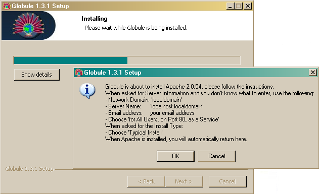
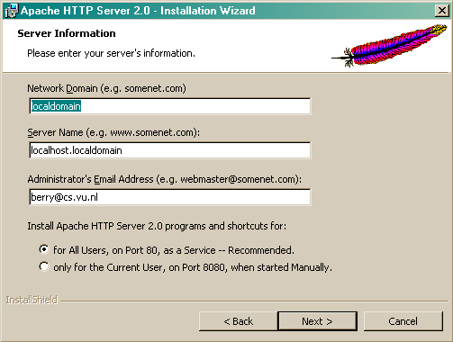
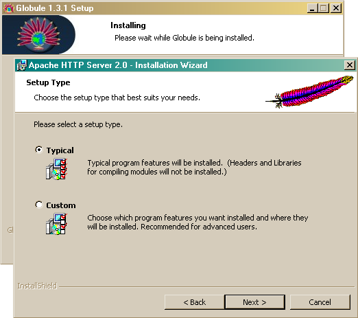
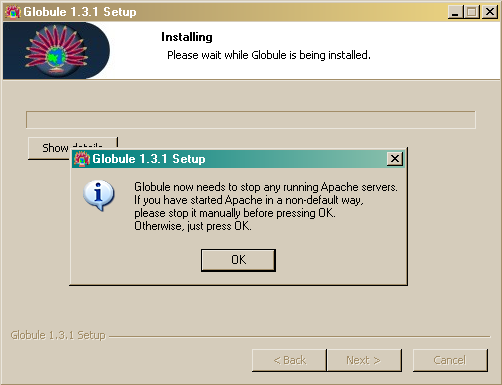
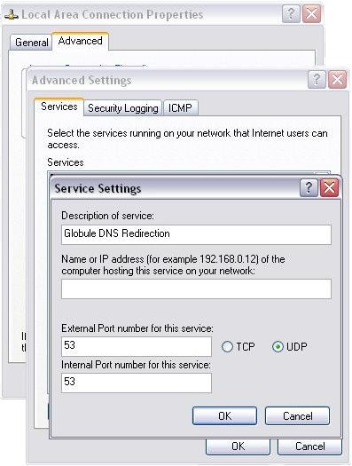

Globule User Manual
Berry van Halderen Guillaume Pierre
Version 1.3.1
http://www.globule.org/
Abstract: Globule is a module for the Apache Web server that allows to replicate Web sites across multiple servers potentially located worldwide. This improves the site's performance, maintains the site available to its clients even if some servers are down, and to a certain extent it allows to resist to flash crowds.
A site owner must only define on which server(s) the site should be replicated. Globule handles the replication automatically. It also monitors the status of servers, so that it can automatically and transparently redirect Web clients to one of the available replicas.
Table of Contents
- 1 Introduction
- 2 Globule Installation
- 3 Server Configuration
- 4 Supporting utilities
- 5 Configuration Directive Reference
- 5.1 Generic Directives
- 5.2 Replication Directives
- 5.2.1 GlobuleReplicate
- 5.2.2 GlobuleReplicaIs
- 5.2.3 GlobuleBackupIs
- 5.2.4 GlobuleRedirectorIs
- 5.2.5 GlobuleReplicaFor
- 5.2.6 GlobuleBackupFor
- 5.2.7 GlobuleBackupForIs
- 5.2.8 GlobuleRedirectorFor
- 5.2.9 GlobuleDefaultReplicationPolicy
- 5.2.10 GlobuleMaxDiskSpace
- 5.2.11 GlobuleMaxMetaDocsInMemory
- 5.2.12 GlobuleLockCount
- 5.2.13 GlobuleDirectory
- 5.2.14 GlobuleDatabase
- 5.3 Redirection Directives
- 5.4 DNS Redirection
- 5.5 Periodic tasks
- 5.6 Obscure and rare settings
- 5.7 Recognized units
- 6 Troubleshooting
- A Copyright notices
- B File structures and protocols
1 Introduction
Globule is a system that performs Web site replication. This means that WWW documents are copied across multiple machines where clients can access them. A document has one origin server, which is the machine where it is edited and published. The origin server usually belongs to the owner of the document. In addition, a document can have any number of replica servers, which host copies of the original document and deliver them to the clients. Replica servers do not necessarily belong to the owner of the document.
Replicating a Web site has multiple advantages:
- The documents remain accessible to clients even if some servers are down (provided that at least one of them is alive)
- The performance of the site is optimized, because clients can fetch documents from a server close to them. Shorter server-to-client transfer distances usually mean faster downloads.
- Multiple servers are better at handling a flash crowd than a single server. Flash crowds are events where the request load of a given site increases by several order of magnitudes within a few minutes or seconds. This frequently happens, for example, when a page is being linked to by Slashdot.
- Playing with multiple servers is fun!
Globule is designed as a third-party module for the Apache version 2.0.x Web server. You will therefore benefit from all great features that made Apache the Number One Server On The Internet. In addition, Globule will provide replication functionalities to this server.
1.1 Globule Features
Globule provides the following features:
- Replication: Web sites (or parts thereof) can be replicated across multiple servers, even if the involved servers do not belong to the same persons.
- Client redirection: Clients accessing the site are automatically redirected to one of the replicas. This can be done using HTTP or DNS redirection. Moreover, Globule supports several policies which allow one to decide to which replica each client should be redirected.
- Fault-tolerance: Each Globule server periodically checks the availability of the machines holding its replicas. In case one replica site is down or misconfigured, it will stop redirecting client requests to this replica until it has recovered. Globule also supports the creation of backups of the origin server so that the site will function correctly even if the origin server is down.
- Monitoring: Globule allows administrators to monitor the behavior of their system in three different ways. First, the logs of requests addressed to replicas are transfered back to the origin server to rebuild a ``global access log.'' Second, Globule can attach a cookie with each delivered document containing information on how this request was treated. Lastly it is possible to collect internal statistics on the usage pattern and process them using configurable filters.
- Adaptive replication: There are many ways by which a given document can be replicated and document updates can be taken into account. Unlike many other systems, Globule does not consider that there is one policy that is best in all cases [2]. Instead, it supports multiple policies and periodically checks for each document which policy is likely to offer best performance. When the current policy is not optimal, it is automatically replaced with the best one.
- Dynamic document replication: Globule can not only replicate static documents but also scripts that are executed at the server to generate content, such as PHP scripts. The scripts themselves are replicated and executed on replica servers. If a PHP script accesses a MySQL database, then Globule can also cache database queries to further optimize performance [3].
- Configuration server: The Globe Broker System (GBS) is a web site where Globule users can register, meet each other, and decide to replicate each other's content. Configuration files are automatically generated, which saves most users from the need to read most of this documentation.
In addition to the current features, we are currently conducting research on the following topics. When research is finished, these features will be integrated into Globule.
- Latency estimation: We developed a nifty way to estimate the latency between any pair of nodes in the Internet, that is the delay it takes to transfer a bit of information from one machine to the other. Instead of sending gazillions of messages between every pair of machines, our method is based on a very low number of actual measurements [4]. A prototype is running fine, but it will take a while before we can integrate it into the Globule distribution.
- Replica placement: Based on latency estimations, we are now capable to analyze the location of clients requesting a Web site, and derive a set of locations where replica servers should ideally be placed [5].
- Flash-crowd prediction and pro-active management: The request rate of a web-site can sometimes change drastically within minutes such as when it is being referred in a popular bulletin board such as SlashDot. Flash-crowds, as they are called, often jam web-servers to the point where they become unusable. We are working on techniques to detect the early stages of flash-crowds, and pro-actively replicate the concerned sites such that they can serve every request efficiently [1].
1.2 Terminology
Globule makes a strong distinction between a site and a server. A site is defined as a collection of documents that belong to a given user. A server is a machine connected to a network, which runs an instance of the Globule software. Each server may host one or more sites, that is, be capable of delivering the site's content to its clients. As shown in Figure 1, servers can be classified in four categories according to the role they play with respect to this site.
Each site has one Origin server, which typically belongs to the site owner. The origin contains the authoritative version of all documents of the site. It is also in charge of making all decisions on where, when and how replication of the site should take place.
The origin server is helped delivering documents by any number of replica servers. Replica servers replicate documents locally and deliver them to the clients. A replica server for a site is typically operated by a different user than its origin, so the replica's administrator may impose restrictions on the amount of resources (disk space, bandwidth, etc,) that the hosted site can use on their machine. As a result, each replica server typically contains only a partial copy of its hosted site. Similarly to a caching proxy, when requested for a document not present locally, a replica server fetches the document from its origin before delivering it to the client.
When a replica server needs to fetch a document from the origin, it obviously requires that the origin server is available to deliver the document. Remember, however, that the origin server is typically simply the desktop machine of the site owner. Such machines are often unavailable for a multitude of reasons ranging from a voluntary shutdown to a network failure. To overcome this problem, the origin server can define any number of backup servers. Backups are very similar to replica servers, except that they hold a full copy of the hosted site. If a replica cannot contact the origin server, then it can obtain the requested information from any backup. Backup servers also perform the role of a regular replica server, helping serving the content of a site.
Once documents have been replicated across multiple servers, one needs to automatically redirect client requests to one of the replicas. This is done by one or more redirectors, which know the list of all replica and backup servers for the site, monitor their status, and redirect client requests to one of the currently available servers. Redirectors can use two different mechanisms for redirection: in HTTP redirection a redirector responds to HTTP requests from the clients with a redirection return code 302. Alternatively, in DNS redirection, a redirector implements a specialized DNS server that resolves the site's name into the IP address of the destination replica.
It should be clear that the distinction between origin, replica, backup and redirector servers refers only to the role that a given server takes with respect to any given site. The same server may for example simultaneously act as the origin and one of the redirectors for its owner's site, as a backup for a few selected friend's sites, as a replica for other sites, and as a redirector for yet other sites.
1.3 Known issues/limitations
-
Globule only works with Apache version 2.0.x. It does not
work with Apache version 1.3.x, and there is no plan on changing
this.
Apache version 2.1/2.2 is not supported up to and including Globule release 1.3.1. This may change in future releases of Globule.
2 Globule Installation
Globule adds replication functionality to the Apache web-server. There are multiple ways to install Globule, Apache and additional optional software. The normal installation procedure is the all-in-one package under Unix and Linux (see Section 2.1), or the Windows installer (see Section 2.2).
In a number of special cases, it might be preferable to install Globule by other means, such as if you want to add replication features to an already existing Apache installation, you have a minimalistic system without compilers or you want to rely on installation paths or packaging methodology of your system. Section 2.3 explains how to install Globule by hand from source, while Section 2.4 explains how to install pre-compiled RPMs. Beware however that installing Globule by hand from sources or by using pre-compiled RPMs requires:
- that you are knowledgeable enough to edit Apache configuration files by hand;
- that you understand how to select the right package based on the requirements you have;
- know how to run the auto-configure script configure when compiling from source.
After having installed Globule, refer to section 3 on how to configure it.
2.1 Unix and Linux All-in-one installation
The all-in-one installation is a bundling of Globule and all the necessary third-party software which installs in a single run. This facilitates a standardized environment which works on a multitude of systems. The following software packages are included:
| Apache | The web-server software. |
| Globule | The module for Apache to replicate web-sites. |
| PHP | A scripting language to generate dynamic pages for Apache. |
| Smarty | PHP scripts by which PHP can use templates. |
| MySQL | A database system. |
| Webalizer | Package to generate statistics on the visit of your web-site. |
| GD library | library helping PHP and Webalizer to generate graphics. |
The copyright notices of these packages are included in Appendix A.
To obtain maximum portability to different platforms and Linux distributions, the installer actually compiles the software packages from source. Installation therefore takes a bit of time, consumes some disk space and requires supporting software such as C and C++ compilers to be present. Modern systems should have sufficient amount of resources such that a default installation on a fully installed distribution can be done within an acceptable amount of time. Actual time and resource need will vary on your system, a typical fairly recent system requires between 5 and 15 minutes and between 100 and 250 MB of (temporary) disk space to install for a full installation.
Downloaded the all-in-one installer from the web-site of Globule, and execute it as follows:
wget 'http://www.globule.org/download/installer.sh' chmod u+x installer.sh sh ./installer.sh --keep-build
The all-in-one installer will do the full installation automatically after you have confirmed certain settings which are probed by the installer. The end-result after the installation is a fully capable web-server, installed in an independent, private directory. You are free to choose this directory as long as it fits the following requirements:
- the directory is unused and empty or non-existent;
- it resides on a local disk.
Good alternatives for this directory are /usr/local/globule,
/home/globule or /opt/globule depending on your system. If you
have a desktop system, we suggest you choose the default provided by the
installer, as indicated by the content in the square brackets. Enter nothing
and press return to accept the default.
Other questions the installer asks are about checking the probed hostname of the system and whether or not to include MySQL support. The provided defaults should be correct. Including MySQL support is recommended, and can co-exist with a system-wide MySQL. Including MySQL support will install a database available only from the web-server, but takes a relatively long time to build. If you want to use a system-wide MySQL or do not need a database you can answer ``No'' to this question.
When the installer script has finished all files are installed in the target
directory that you specified. This directory is named the prefix or
base-directory. A transcript of the installation is written in
basedir/src/installer.log We advice you to remove the
installer script you just used, to avoid accidental re-use.
Be aware that if you will later upgrade, entire directories are removed from
this tree. Read the section on upgrading to understand where you can your
files safely.
After installation, you should use the globulectl script to start not just the Apache/Globule software, but also the accompanying software:
basedir/bin/globulectl start
At this time, the all-in-one installer will not automatically start the software when the computer is restarted. You can execute the following script:
basedir/bin/globulectl installcrontab
to install a crontab, which is a periodic check whether the web-server is
running, looks really operational and has been restarted since the last time
the httpd.conf configuration file was updated. If this is not the case
then it will cleanly restart the server.
Once the installation is completed, your server will be ready to operate using a few example documents. To host your own documents, you will have to defined how and where to replicate (parts of) your web-server. Section 3 describes how to configure your web-server. The configuration of the web-server is stored for this all-in-one installer in the file basedir/etc/httpd.conf. Other configuration files are all located in that same directory.
Upgrading your installation
The installer script can be used to upgrade the complete installation (including supporting software) at later times to the most recent release. To this end, when the installer script finishes, a modified copy of the installer script is created as basedir/src/installer.sh. This script, not the original, should be used to upgrade and should be run with the same flags as earlier.
If in the initial installation the flag --keep-build was used,
non-updated software packages will be reused in the installation because
intermediate files are kept. This limits the time needed to upgrade, at the
cost of a some extra disk-space.
Subsection 2.1 states some more flags and
checks that can be made on the system, which are only needed in advanced
setups.
Be aware however that during upgrading, the script will remove certain directories and files from the basedir. Only htdocs, htbin and directories with dots in them are kept untouched. Directories src, etc and var are largely kept as is. Other directories are removed.
If you create additional directories to hold files of created VirtualHosts/web-sites and upgrade, they could be whiped out when you upgrade because this script will only keep certain directories. This is why directories with dots in them are never deleted, so you can use the domain name of the web-site as the directory name to use as DocumentRoot.
To avoid data loss, always backup the whole installation before upgrading.
Installer advanced usage and troubleshooting
Most users do not need to read this section, and can safely move to section 3 on how to configure Globule.
Prerequisite software
The installer script is very useful, even if your Linux distribution is RPM-package based. This because the installer script installs everything together in a single location with a standard set of features. However, since it is not tied to the specific distribution you are using, it does not check on the prerequisite software. Instead it bundles most necessary software within the installer. In very minimal setups however, such as supplied by ISPs where even compilers aren't installed, you might need to check whether the RPMs below are installed on your system.
| which | gd | libpng-devel |
| dialog | expat-devel | openssl-devel |
| strace | pcre-devel | flex |
| gdb | db4-devel | libxml2-devel |
| libtool | gdbm-devel | |
| gcc-c++ | perl-DBD-MySQL |
Depending on your distribution, you might be able to check whether a package is installed using the command:
rpm -q package-name
Tuning of the installer operation
It is not encouraged to install the supporting software of Globule in a non-standard way, however if you do want to tune the installation, you can use the flag --extra-package-config=... to add additional options to how the ./configure script is run for a particular software packages, where package is one of httpd for Apache, php, globule, mysql, gd or webalizer.
The following other options are user-available:
- -v or --verbose
Verbose operation, will result in more reporting to the console.
- -n or --noupdate
Do not attempt to retrieve newer software over the Internet (for upgrading only, this is the default for first-time installations). - --keep-build
Recommended option to keep the compiled objects file in place, instead of removing the compiled source directory after installation.
Lastly there are two other options which can be used only when upgrading, --omit-install allows you to prepare a new version without installing it. You should also use the --keep-build switch. This way you can keep the server running while compilation of a upgraded version takes place. Afterwards you can quickly upgrade a version by manually stop the Apache server using the globulectl command and running the same command, but now with the --omit-build switch. This minimizes down time for important systems. A typical usage would be:
cd basedir ./src/installer.sh --keep-build --omit-install ./bin/globulectl stop ./src/installer.sh --keep-build --omit-build ./bin/globulectl start
2.2 Windows installation
1. Requirements
This explanation assumes that you are using Windows XP with SP2.
If possible, please install Apache and Globule with administrator privileges. You will need to open ports in your firewall, and only Administrators can do that.
2. Run the automated installer
The Windows auto-installer for Globule is available as globule-1.3.1.exe. It contains a full distribution of Apache, so you don't need to install Apache separately.
3. Choose which components to install

- Apache: this will install the Apache web server. We check
if a suitable Apache installation was found. If not, Apache will be
installed. It requires port 80 to be opened in your firewall.
You can tell Windows to open port 80, the first time Apache is started, by choosing 'Unblock' in the Windows Security Alert window. - Globule: the Globule software. This allows the Apache web server to automatically replicate its documents to other servers, keep replicas consistent, and to transparently redirect users to the best replica.
- DNS Redirection: this is the only option you really have here. DNS redirection facility adds support for UDP requests to Apache (see Section 3.3). If you don't know what DNS redirection is or you don't own your own domain name, then you probably don't need DNS redirection at all. Using DNS redirection requires that you open port 53 in your firewall.
4. Choose an install location for Globule
The default installation path is C:\Program Files\Globule if you install as administrator, or C:\Documents and Settings\<username>\Globule otherwise. You can change this path if you want Globule installed somewhere else.
5. Install Apache
If Apache is not already present in your system, then it is going to be installed now.

Click on ``OK'' to start the Apache installer. You will see the following screens:
- Apache Welcome Screen: click ``Next'' to continue.
- Apache License Agreement: if you accept their terms in the license agreement, check the top radio button and click ``Next'' to continue.
- Apache Read This First: after reading, click ``Next'' to continue.
- Apache Server Info: Apache will now ask you for
information about your web server. If you are not sure what to
fill in here, fill in the values as seen in the screenshot below.
Later, when we generate a configuration file for you.
- Network Domain: fill in ``localdomain''.
- Server Name: fill in ``localhost''.
- Administrator's Email Address: fill in your e-mail address or ``dummy@globule.org''.
- Install Apache HTTP Server 2.0 programs and shortcuts for: Choose ``for All Users, on Port 80, as a Service -- Recommended.''

- Apache Setup Type: Choose the ``Typical'' setup type. Then
click ``Next'' to continue.

- Destination Folder: choose a location where Apache is going to be installed, then click ``Next'' to continue.
- Ready to Install the Program: click ``Install'' to start the installation of Apache.
- Installation Completed: if all went well Apache shows that it is successfully installed. Click on ``Finish'' to continue with the Globule installation.
6. Where was Apache installed?
If you installed Apache for Current User only, Globule will need to know where Apache was installed. Note that this is not the default way of installing Apache, but you know what you are doing, right? Specify the directory where the bin and modules directories are in, e.g. C:\Documents~and~Settings\<username>\Apache Group\Apache2.
7. Stop existing Apache services
To be able to install itself, Globule will need to stop the Apache server you just installed. If you installed Apache in the default way as described above, just press ``OK''. If you installed Apache yourself with a different service name (default is 'Apache2'), please stop the Apache service manually or by using the Apache Service Monitor. If you had Apache installed for Current User, press CTRL-C in the console window where you started Apache.

8. Installation Completed
Congratulations, all the software is installed. Now Globule needs to be configured to be able to use it. Click on ``Finish'' to go to a web-site which can help you write your configuration file. You can also manually edit the Apache configuration file in Apache's conf directory following instructions in section 3.
When the installation itself has finished, you will be taken to this web-site to configure your web server when you you click ``OK''.
If you kept the default paths unchanged and installed Globule as Admin, then your configuration file must be located at C:/Program Files/Apache Group/Apache2/conf/httpd.conf. If you installed as non-Admin, then it should be in C:\Documents and Settings\<username>\Apache Group\Apache2\conf\httpd.conf.
You can start/stop your server using the Apache service icon on the bottom right of your screen. We recommend you use this service icon, which opens the Apache Monitor rather then the menu items. This because the menu items do not provide all functionality.
9. Configuring your firewall
If you are using Windows XP, then you must configure your firewall to allow your friends to access the server you just installed. Here is how to do it.
- First, you need to know the IP address of your computer. Click on 'Start -> Run', and type 'cmd'. That will open a shell window. Type 'ipconfig' in it and press enter. You should get output looking like the screenshot below. Keep this window open or write down the IP address.

-
You can now configure your firewall to allow HTTP requests to
enter your system. Click 'Start -> Run', then type in
'control netconnections' and click 'OK.' Select the network
device you use to connect to the Internet (e.g. Local Area
Connection), then click 'Properties', and the 'Advanced'
tab.
Click on the 'Settings...' button, and enable protect my computer if needed. Click on the 'Advanced' tab.
In the list of Services check 'Web Server (HTTP)'. A window should pop up (or click on edit). Fill in the IP address you got from the first steps and click 'OK'. If you do not see 'Web Server (HTTP)' then select the 'Add..' button, fill in the service name, your IP address and '80' for both external and internal port.
- If you enabled DNS redirection in step 3, then you must also allow DNS requests to enter your system. Click the 'Add...' button. Fill in the service name "DNS" and your IP address where requested, and the other fields as seen in the screenshot below. Note that 'UDP' is checked and 'TCP' is unchecked.

- Congratulations, you have configured your firewall. From now on, any user connected to the Internet can access your Globule server.
2.3 Source distribution
This section is intended for people with some experience in compiling
programs. Compilation from source allows you to make the best
match with your system, tune the installation and allows for special demands.
This is especially suited for package builders and somewhat experienced system
administrators.
To compile Globule under Windows you will have to
contact us.
Before starting to build Globule from source you have to check the requirements and determine whether your installation needs to do DNS-based redirection.
First determine if you might want to do DNS redirection. DNS redirection allows clients to be redirected at the DNS level to one of the available replica servers (see Section 3.3 for more information on HTTP vs. DNS redirection). This is the fastest, more distributed and most transparent redirection method available. It does however require Globule and Apache to act as an DNS server, which is only possible if you run a slightly modified Apache server, which requires recompiling Apache also.
Other requirements:
- Apache version 2.0.50 or higher. Note that versions 2.1 and 2.2.x are not yet supported;
- Apache running with a worker or prefork MPM, with dynamic modules enabled (these are defaults);
- gcc and g++ version 3.2 or better. There are known problems with gcc 3.4.0, gcc-4.0.x is known to work;
- gmake version 3.79.1 or better.
You should also preferably install Apache from source. If you want to install Apache from RPMs and require DNS redirection then you must use our supplied RPMs which include the patch. If using RPMs not provided by us, make sure you also install the developer packages for Apache and APR (httpd-devel and apr-devel).
Because Globule is a module for Apache, you should install Apache first, following the guidelines in the next section.
2.3.1 Apache installation from source
Apache can be set-up, configured and extended through modules in a multitude of fashions. These, even in an environment without Globule can clash, lead to security issues, or other issues. It is therefore prudent for us to give some advice on which configuration of Apache is known to work. Globule is also known to work with the Apache installation from the major Linux distributions.
To install Apache from source download Apache from:
httpd-2.0.55.tar.gz
Unpack the downloaded distribution:
gzip -c -d < httpd-2.0.55.tar.gz | tar xvf - cd httpd-2.0.55
If you decided to enable DNS redirection in your server, then you need to patch your Apache source tree before configuring and compiling it. The patch file is distributed in the mod-globule-1.3.1.tar.gz Globule source package as file udp-requests-httpd-2.0.55.patch. Copy this file from the Globule archive into the Apache source tree and then execute:
patch -p0 < udp-requests-httpd-2.0.55.patch
Then configure and compile Apache according to the Apache documentation. The minimum you should specify is the --enable-so option to allow extension of Apache with modules. We however recommend the following sequence on the configuration script:
./configure --prefix=/usr/local/globule --enable-auth-anon=shared
--enable-auth-dbm=shared --enable-cache=shared --enable-file-cache=shared
--enable-disk-cache=shared --enable-mem-cache=shared --enable-example=shared
--enable-deflate=shared --enable-ssl --enable-proxy=shared
--enable-proxy-ftp=shared --enable-proxy-http=shared
--enable-proxy-connect=shared --enable-expires=shared --enable-headers
--enable-mime-magic --enable-http --disable-dav --enable-status=shared
--enable-asis=shared --enable-suexec=shared --enable-info=shared
--enable-cgi=shared --enable-include=shared --enable-vhost-alias=shared
--enable-rewrite=shared
Then call make install to compile and install Apache in the designated
target directory as specified by --prefix. If the bin
directory of this prefix is not in your executable search $PATH, or
another Apache is installed first then you will need to use either the
--with-apache or --with-apxs later when compiling Globule.
If Apache is installed using a --with-layout instead of a
--prefix and/or individual paths have set to split the different items
(such as APR, apr-util and libexec directories) then you are advised to use
the --with-apxs and --with-apr flags.
2.3.2 Globule installation from source
To compile Globule from source after having installed Apache with optionally the DNS redirection patch you can use the compressed tar-archive available at:
mod-globule-1.3.1.tar.gz
Unpack this archive, and read the README, INSTALL and NEWS file for any last-minute release notes that may have been added:
gzip -c -d < mod-globule-1.3.1.tar.gz | tar xvf - cd mod-globule-1.3.1
As usual, first call ./configure as supplied with most open source
projects and available with the standard options. If you however installed
Apache in a non-standard path, then you must specify this path using the
--with-apache option when running configure. Note that you must specify
the root Apache directory (e.g., /usr/local/globule) rather than
the directory where the Apache executable resides (e.g.,
/usr/local/globule/bin). If you used the --prefix option to
specify a path when installing Apache, then you must use the same path here as
well.
Alternatively to the --with-apache option, you can also use --with-apxs to specify the absolute path where the apxs program is installed. This file is usually located in the same directory as httpd and apachectl:
./configure --with-apxs=/weird/directory/bin/apxs
If you want to use DNS redirection, then you must add the --enable-dns-redirection flag to configure:
./configure --with-apache=/usr/local/globule --enable-dns-redirection
We also recommend to use the --enable-globuleadm
flag. This installs a set of files in the directory globuleadm
inside the directory as indicated by apxs -q htdocsdir which allow
you to monitor the operation of Globule.
Other options available are:
- --enable-debug
Compile Globule with debugging symbols and options enabled. - --enable-optimize
Use optimization to compile Globule, recommended. - --enable-profile
Compile Globule with profiling enabled (not recommended, does not work reliably). - --enable-documentation
Also build and install documentation (not recommended, read it on-line).
After running the ./configure script with the appropriate options,
run ``make'' and ``make install''. This last command will install the Globule
software and also install a sample Globule configuration file named
httpd-globule.conf next to the regular httpd.conf file (in the
directory as specified by apxs -q sysconfdir). Use it as an example
of how to configure the httpd.conf for use with Globule.
2.3.3 PHP installation from source
To compile PHP yourself, you must make sure that you instruct PHP with the configure script to use the apxs2filter as the Apache to PHP hand-off and that safe mode is enabled. If you install Apache in a non-default path (using the --prefix option), make sure the PHP is actually configured to use the right installation of Apache.
You should be very aware that the PHP pages will be executed on multiple servers. PHP is compiled with certain extensions depending on how it was configured. If you make your PHP pages depend on a certain set of extensions then all replica servers should have the same set of extensions. For this reason the all-in-one installer and Globule Broker System are preferred.
The recommended configuration for compilation of PHP is:
./configure --prefix=$prefix --with-apxs2filter=prefix/bin/apxs --disable-cgi
--disable-static --enable-safe-mode --enable-dba --with-dbase --with-gdbm
--with-db4 --with-ini --with-flatfile --with-gd=... --enable-ftp
--with-mysql=... --with-mysqli=.../bin/mysql_config
Where prefix is the base installation path of Apache and ... are the paths to the individual software packages being referred to, which default to prefix for the use with the all-in-one installer.
When compiling and installing PHP, it will modify your existing
httpd.conf to add directives to enable PHP parsing. This may not
completely be what you want so save a copy of the original httpd.conf
before your type make install.
To add or check whether your PHP is available from within the Apache server, add the following directives at their proper position in the verb!httpd.conf!, or check whether all are inserted.
-
The PHP module is being loaded using:
LoadModule php5_module modules/libphp5.so
- PHP-based index files are preferred over others. Look at the
DirectoryIndexdirective in yourhttpd.conf. The alternativeindex.phpshould be the first argument in the list. - Locate other directives named
AddType, the following lines should be present:AddType application/x-httpd-php .php AddType application/x-httpd-php-source .phps
With these changes, and a restarted server, PHP support is made available to the Apache web server.
2.4 Installation from RPMs and alikes
We provide also alternative installation methods, which require more experience with the packages your Linux distribution uses.
When using a distribution package, such as the RPMs provided and described
here, you need to select which primary package is needed for your system.
Multiple different RPMs with actual the same software package have to be
provided for if you do want DNS redirection or not, where to install the
software the default location or one in /usr/local/ and which
architecture you have. Most importantly though, RPMs provide no means to make
an initial, working configuration file. You therefore have to locate the
Apache configuration file and modify it by hand.
Also the actual installation is scattered in different places (/var/www and /etc/httpd for instance), with which you have to be familiar.
If you want to be able to use DNS redirection, you must use an Apache installation which has the DNS patch applied to it. Default RPM based distributions do not provide an RPM of Apache with this patch applied therefore you have to use one of our RPMs. To provide a full service, with up-to-date Apache web services with a configuration known to work we also provide RPMs for a plain, distribution system-like Apache installation.
If you are using a modern Unix or Linux distribution which uses or can use
RPMs, then you can install Globule from the RPMs as described within this
section. Alternate, less supported binary distributions are available for
Debian and another packed as a tarball. The latter distributions only provide
a basic installation without options such as DNS redirection.
They can be found on the download
page.
1. Requirements
You will need a recent Linux distribution (we usually test using recent Redhat Fedora or Mandrake distributions). If you have an older (e.g., RedHat 7.2) Linux version, then we strongly recommend that you upgrade. Alternatively, you can check in Section 6 if and how you can install Globule on your system.
2. Make up your mind
At this stage, you must decide whether you want to enable your server to perform DNS redirection (see Section 3.3 for more information on HTTP vs. DNS redirection). If you don't know what DNS redirection is or you don't own your own domain name, then probably you don't need DNS redirection at all.
3a. If you do not want DNS redirection
To install Globule you need an recent up-to-date installation of Apache, which accept dynamic module loading. We provide also Apache RPMs which are known to work and are similar in functionality and construction as the official Apache RPMs by RedHat. We however keep more up-to-date and provide the right mix of modules and settings which co-operate with Globule. Because some platforms are lacking behind in the update of Apache module it is recommended that you uninstall any standard Apache RPM you may have, and install the RPMs we provide instead.
rpm -e --nodeps apache httpd httpd-devel httpd-manual httpd-mmn rpm -ihv http://www.globule.org/download/apache-2.0.55/httpd-2.0.55-1.i386.rpm rpm -U http://www.globule.org/download/1.3.1/mod-globule-1.3.1-1.i386.rpm
3b. If you do want DNS redirection
Enabling DNS redirection requires that your Apache server can handle UDP requests. This is not a standard feature of Apache, so you must install the patched version we provide. First uninstall any Apache RPM you may have, then install our patched RPM (since this version is solely dedicated to working with Globule, we package the two of them together):
rpm -e --nodeps apache httpd httpd-devel httpd-manual httpd-mmn rpm -U http://www.globule.org/download/1.3.1/globule-1.3.1-1.i386.rpm
4. Get started
Our RPMs will install Apache and Globule in the default RedHat installation paths. In particular, you should edit your configuration by opening file /etc/httpd/conf/httpd.conf with your favorite text editor. Please read Section 3.1 for basic configuration directives.
An attractive way is to avoid composing and maintaining the httpd.conf configuration file is to use the Globule Broker System, which is an automated way to maintain the co-operative relationships between origin and replica servers and generate their httpd.conf configuration scripts automatically.
You can start/stop your server with this command:
/etc/rc.d/init.d/httpd [start|stop]
5. Installing Globule RPMs in non-standard directories
If you don't want to install your server in the standard RedHat paths (e.g., because you want to install Globule side-by-side to an existing Apache server), then you can use httpd-local-2.0.50-1.i386.rpm and mod-globule-local-1.3.1-1.i386.rpm instead of httpd-2.0.50-1.i386.rpm and mod-globule-1.3.1-1.i386.rpm. Apache and Globule will be installed in directory /usr/local/globule. Your configuration file will be found in /usr/local/globule/conf/httpd.conf. To start/stop your server you must use:
/usr/local/globule/bin/apachectl [start|stop]
3 Server Configuration
Much like Apache needs to be configured on which web-sites it needs to serve, Globule as a module to Apache, also needs to be told which parts of the sites served by Apache need to be replicated. Likewise instructions on security, configuration and special handling need to be selected. Globule adds another dimension because it allows tuning of replication and redirection policies and it is a co-operative network. This means that one explicitly selects partners with which to co-operate and replicate documents to and from.
Globule therefore requires configuration, as does Apache. Like other modules
in Apache, this configuration is embedded in the Apache configuration file
httpd.conf. Without configuration Globule/Apache can possibly be
started, but is dysfunctional.
The Apache configuration can be quite complex to get right. This documentation
does not handle the configuration of Apache itself, nor of any modules which
can be used inside Apache. Refer to the
Apache documentation and
follow the guidelines in the sample httpd.conf or httpd-std.conf
to get the a working web-site first before integrating Globule. Globule also
provides a sample httpd-globule.conf that can be renamed to
httpd.conf which can be used to start your configuration from.
This section describes how to prepare a configuration in httpd.conf
which performs a basic replication of a site to other host. Separate
subsections handle individual subjects and enhancements like:
- Site replication;
- DNS based redirection;
- System Monitoring;
- Dynamic Content.
The Globule Broker
Setting up a configuration file httpd.conf can be quite a difficult
process. Order in which directives are specified matters, their semantical
nesting must be precise, when to add port numbers and many other common tasks.
Globule adds another dimension to managing the httpd.conf since the
configuration of one server which is the origin of exported documents is
linked to replica servers which import the documents. The locations, shared
secrets and settings need to match between servers.
To aid users in setting up httpd.conf configuration files for their
servers and set up relationships between origin sites and friendly replica
servers, we have created a web-site which:
- brokers between potential replica servers and your origin server;
- generates a complete and working
httpd.confconfiguration file based on all your settings.
3.1 Basic Server Configuration
Globule is provided as a module for Apache. This requires that you have to
let Apache know that you will be needing the Globule module. Such
instructions, as well as other configuration directives are written in the
Apache configuration file httpd.conf. Where this file is located
depends on the installation you have chosen. In this file also directives
will be placed that provide instructions to Globule on how to operate.
Apache is a highly configurable and flexible server. This also means that even the basic configuration without Globule is quite extensive and many details matter. Be aware that small configuration changes can have large effects. Small omissions, presence of other directives or order in which directives are placed can result in Apache failing to start, misoperation, or other unexpected results. Some of these effects are even silent and the server either does not start, or seems to work, but in a different fashion (for instance, not using replication).
Therefore, take care to follow instructions precisely and make changes at the proper location. Look which values you need to change, such as adding port-numbers, setting the ServerName, and changing the directory names, etcetera. Some values, like directory names appear multiple times in configuration files, be sure they are consistent with each other.
This section describes how to add the most basic necessary directives to a
functional Apache configuration file. In subsequent sections is explained how
to add further functionality on a per-subject basic. This manual cannot give
an overview on configuring Apache,
only on the extension Globule provides. Some knowledge on Apache
configuration is needed and we advice to work from a template
httpd.conf as provided by your installation method.
3.1.1 How to update your configuration
Configuring Apache and Globule involves making changes to the configuration
file httpd.conf. When making changes to the configuration, these will
not take effect until your restart Apache. The location of the
httpd.conf file and how to restart Apache depends on your installation
method. Refer back to the chosen installation method on the location of
httpd.conf and the preferred method of starting Apache.
In any case, you might also check whether certain errors in the configuration
using the command apachectl configtest or globulectl configtest
if provided. However not all configuration errors show up during startup.
When Apache starts, it will run in the background. Any errors at this time
will be written in the error log as specified in the Apache configuration.
Always check this error log for problems.
3.1.2 Check your Apache configuration
The installed httpd.conf might already be adapted, however this default
configuration file is just a standard template and should be checked and/or
adapted for your system. Refer to the Apache documentation on a full
explanation. The following settings are at least important for a correct
Globule or do vary much between systems. These settings should already be
partially present in the httpd.conf.
Directive Listen
The Listen directive instructs Apache to listen to one or more ports. The
Listen directive must always be specified, even if the default port 80 is
used. At the time of release of version 1.3.1 of Globule, the usage of
multiple listen ports, or the use of SSL/HTTPS may not fully functional.
Make sure that the port specified here, is in accordance with the
specification on ServerName, NameVirtualHost and VirtualHost directives as
GlobuleReplicaIs/For etcetera directives.
Example:
Listen 8333
Directives User and Group
When Apache is instructed to run on from port 80, it requires superuser
priviledges and thus needs to be started as root. Since this can cause
security issues, Apache is always instructed to try to change its identity
after startup to the Unix user and group as specified by the directives
User and Group. Standard Unix/Linux operation as well as
the recommended Apache setup is to change to the Unix user nobody and
group #-1. There are however Linux distributions which provide
separate Unix users and groups such as apache, httpd,
www, web, etcetera. If you run off a default distribution you
might need to use these groups in order for the web-server to access all
files. The Unix user/group combination nobody and #-1 are
always available.
Example:
User nobody Group #-1
For Windows users
Windows users, who use DNS redirection (their machine plays the role of the redirector need to disable the AcceptEx windows call. This Microsoft optimization breaks quite a lot of software, including our and MySQL software. Besides, enabling it provides limited performance increase. Since Windows serves pages very slow compared to Linux servers, you can safely disable this feature always:
<IfModule mpm_winnt.c> Win32DisableAcceptEx ... </IfModule>
Locate the existing IfModule mpm_winnt section and add the Win32DisableAcceptEx directive.
Directive ServerName
The ServerName directives appears at least once in the httpd.conf at a
global level, which means not inside a VirtualHost section or other. Only one
such a ServerName at the global level should exist, quite early in the
configuration file. The single argument to the ServerName directive should be
the hostname of your machine, which will always resolve to the public IP
address of the machine.
Listen 80 ... ServerName world.cs.vu.nl
If your server does not use the default HTTP port (as specified as
Listen 80 earlier in the httpd.conf) then the ServerName should
have a colon appended to it:
Listen 8333 ... ServerName world.cs.vu.nl:8333
The usage of an IP number instead of a fully qualified hostname is discouraged, as the usage of VirtualHosts is not supported, nor is DNS redirection.
VirtualHost sections
The usage of VirtualHost is documented in the Apache documentation, but due to the many mistakes one can make with it, and the effect it has on Globule, some remarks on the configuration are below. i.e. when URLs with different host names return a different set of pages. You must use name-based virtual hosting in most cases, even if you only want to host a single site.
Unless you have multiple IP addresses on your machine and know what you are doing, you want name based virtual hosting instead of plain virtual hosting. In a name based configuration you should start with the specification of a NameVirtualHost directive. Then for each web-site with a different hostname to be served, define a VirtualHost directive environment. These should at least contain a ServerName directive with the web-site name and a DocumentRoot directive which specifies where the documents for that web-site should come from. Be sure that the ServerName directives within the VirtualHost environment are tagged with the port number in the same way as the global ServerName;
Listen 8333 ... ServerName world.cs.vu.nl:8333 ... DocumentRoot /var/www/html ... NameVirtualHost * <VirtualHost *> ServerName world.cs.vu.nl:8333 DocumentRoot /var/www/html ... </VirtualHost> <VirtualHost *> ServerName www.revolutionware.net:8333 DocumentRoot /var/www/www.revolutionware.net ... </VirtualHost> <VirtualHost *> ServerName _default_:8333 DocumentRoot /var/www/html ... </VirtualHost>
You must specify a VirtualHost section for the global ServerName too. Thus, in the example above, world.cs.vu.nl is first, and global ServerName specified and must also be present in one of the VirtualHost environments (as in the first in the examples). Note that because the global ServerName and the first VirtualHost name ServerName are the same, the DocumentRoot should be the same too.
The last VirtualHost section in the example catches all incoming requests that don't resolve to any of the VirtualHost. It is common for this section to have the same DocumentRoot as the global DocumentRoot, but this is possible only if this site is not (partial) replicated.
If now, or in future you will add ServerAlias directives, then take note that you shouldn't add the port number when specifying aliases for your hosts.
For each VirtualHost with a new DocumentRoot you should also check whether the
files are accessible, both by having world-accessible permission bits when
running the server on an Unix machine and because the server program is
allowed through it's configuration. Within the httpd.conf access is
allowed or denied through the specification of Directory directives,
see the next paragraph and the Apache documentation.
Directory specifications
Whenever Apache serves a document, locating and authorizing the file to be served goes through several stages. The DocumentRoot specifies the initial location, Location directives specify how to treat individual paths, but whether an actual file may be accessed is controlled by a <Directory> directive environment. A default configuration will always deny access to all files by disallowing anything for ``/'' Therefore if you add a VirtualHost and a DocumentRoot which is not yet allowed, you need to add a Directory section for it. Also if you change a DocumentRoot or ServerRoot directory, remember to check all paths in Directory environments.
Taken the example in the previous paragraph, access will only be allowed from a
default location for the files being served at
http://www.revolutionware.net:8333/ if we add to the
httpd.conf:
<Directory "/var/www/www.revolutionware.net">
Options Indexes FollowSymLinks
AllowOverride None
Order allow,deny
Allow from all
</Directory>
This configuration snippet should be stated just below a <Directory /> specification normally present in your configuration, but at least before any VirtualHost specification.
3.1.3 Add Globule support
This subsection describes how add Globule to a working non-Globule Apache configuration, however with no web-site being replicated or imported from another origin server.
Add a LoadModule directive for Globule
First Apache must be instructed to use the Globule module by adding a line which loads the module:
LoadModule globule_module modules/mod_globule.so
This LoadModule directive should be placed below the other already present LoadModule directives. These normally occur early in the configuration after the MPM specific section.
Add Directive GlobuleAdminURL
Globule will not work unless it has some web address through which it can talk to itself. This schizophrenic notion is necessary because Apache isn't a single program, but when started Apache splits off in multiple processes. A reserved URL lets Globule do it's internal book keeping. Using the GlobuleAdminURL directive you can provide Globule with a URL into your web-server that can freely be used by Globule.
A good choice for the site-name is the first, global ServerName that appears
is your configuration and use a path like globuleadm. Following the
earlier examples this would result in the specification of:
GlobuleAdminURL http://world.cs.vu.nl:8333/globuleadm/
Note that;
-
The URL that you provide must be fully qualified path, including the
http://and hostname and port part (for which the global ServerName is a good choice);
- Any path you will give, like in the example
/globuleadm/will do;
- The GlobuleAdminURL must end with a slash;
- The address to which the URL points should not contain any actual
content, nor any sub-path of it. It should also not be replicated.
This with the exception of the supporting files for the monitoring (see section 3.4). These files must be actually installed at the filesystem location pointed to by the GlobuleAdminURL.
The GlobuleAdminUrl directive is normally placed directly after the global DocumentRoot and at least below the first, global ServerName and Globule's LoadModule directive.
Prevent unwanted entries in your access log
Globule relies on a number of periodic tasks executed roughly every second (e.g., to check is a given file was modified or if a replica server is still alive). These tasks usually perform an internal HTTP request to your own server. As a result, your logs/access_log file will quickly get filled up with records of these internal requests. There is enough of them to fill up any hard drive within a matter of days or weeks.
All internal Globule requests use either the custom-created SIGNAL or the REPORT HTTP method. To filter these requests out of your log files, we recommend that you enter in your httpd.conf an equivalent of the following lines:
SetEnvIf Request_Method "SIGNAL" dontlog SetEnvIf Request_Method "REPORT" dontlog CustomLog logs/access_log combined env=!dontlog
The order of these statements is relevant. In your httpd.conf there
should already be one or more CustomLog directives, where the first
should be defined at a global level (i.e. not inside an environment like
VirtualHost) almost directly after several LogFormats are defined.
The SetEnvIf entries should be defined in between these two. Then
all occurrences of CustomLog should have env=!dontlog
appended to them.1
3.2 Site Replication
Globule's main feature is to replicate Web sites. This section will explain you how to configure Globule so that documents from a given web site are replicated (i.e., copied) across multiple servers and maintained consistent (i.e., updated when the origin version is updated).
Each Web site must have one origin server, which holds the authoritative version of the documents. It can be replicated across any number of backup servers and replica servers. To establish replication from an origin server to a replica server, or from an origin server to a backup server, both servers need to be configured appropriately:
- The origin server needs to know where its replica/backup server is. This is done using the GlobuleReplicaIs or GlobuleBackupIs directive.
- The replica/backup server needs to know where its origin server is. This is done using the GlobuleReplicaFor or GlobuleBackupFor directive.
- Both servers need to authenticate each other by using a shared password (i.e., they both need to know the same password).
- If the same site has one or more backup server and one or more replica server at the same time, then replica servers need to know where the backup servers are. This is done using the GlobuleBackupForIs directive.
Whenever a browsing user on the Internet surfs to the web-site being replicated, one of the replica servers or the origin server is selected to handle the request. If a replica server is selected, the browser is redirected to the replica server. The most accessible form of redirection is HTTP redirection. HTTP redirection is easier to understand and set up, but has some disadvantages over DNS based redirection. After you understand HTTP redirection you can turn to section 3.3 for DNS based redirection.
Replicating a site with HTTP redirection
We will go through the configuration of a web-site replicated across one origin and one replica server. Later we will add a backup server which acts as a fall-back when the origin isn't available for replica servers to fetch fresh copies of web pages.
-
- In this example we assume that you have a computer with hostname
world.cs.vu.nl and that you have a web-site
http://www.revolutionware.netbeing served from this computer. - - Your friend provides you with the ability to use his web-server on his machine wereld.cs.vu.nl as a replica. At this web-server, your pages will be replicated at the URL: http://wereld.cs.vu.nl:8080/worldpages/
Note that the web-servers run at different port numbers (yours on the default port 80, the server of your friend at port 8080). With HTTP redirection any combination of ports is possible.
As an example of a document being replicated consider the photo image file available at http://www.revolutionware.net/photo.jpg. This will be copied and made available at http://wereld.cs.vu.nl:8080/worldpages/photo.jpg
To replicate your site www.revolutionware.net you must modify your configuration to something like:
Listen 80
ServerName world.cs.vu.nl
...
LoadModule globule_module modules/mod_globule.so
GlobuleAdminURL http://world.cs.vu.nl/globuleadm/
...
NameVirtualHost *
...
<VirtualHost *>
ServerName www.revolutionware.net
DocumentRoot /var/www/html/pages
<Location "/">
GlobuleReplicate on
GlobuleReplicaIs http://wereld.cs.vu.nl:8080/worldpages/ coffee
</Location>
</VirtualHost>
This configuration shows the ServerName, GlobuleAdminURL, etcetera laid out in
a manner described in section 3.1.2. It then resumes with
defining the www.revolutionware.net virtual host section and the documents for
this web-site which will be replicated are to be placed in
/var/www/html/pages.2
The actual replication is performed by two directives
GlobuleReplicate and GlobuleReplicaIs. Both must be
defined inside a Location environment which determines from which
path the documents will be replicated. In this case the path is anything from
/ and all sub-paths, in other words: the entire web-site.
GlobuleReplicate on
The GlobuleReplicate declares that the web-site must be replicated and that this server will act in the role of origin for the web-site. Because the GlobuleReplicate directive is placed inside a Location directive, the URL path from which to start to replicate is determined from this Location environment.
You can also turn redirection partially off for a web-site. Turning off replication is described in 3.2.2.
GlobuleReplicaIs...
One or multiple GlobuleReplicaIs then declare the replica server(s) to which to replicate the web-site to.
You an your friend need to agree upon an URL path you are exporting (assumed until now to be http://www.revolutionware.net/) and a URL path on which your friend will be importing your web-pages (assumed until now to be http://wereld.cs.vu.nl:8080/worldpages/).
You also need to agree upon a shared secret; a password known by both your origin server and your friends replica server and used for inter-server authorization. In the above configuration the phrase ``coffee'' was chosen.
Now your server is configured, but your friend needs to update his configuration as well.
Listen 8080
ServerName wereld.cs.vu.nl
...
DocumentRoot /var/www/html
...
LoadModule globule_module modules/mod_globule.so
GlobuleAdminURL http://wereld.cs.vu.nl:8080/globuleadm/
...
NameVirtualHost *
...
<VirtualHost *>
ServerName wereld.cs.vu.nl
DocumentRoot /var/www/html
<Location "/worldpages/">
GlobuleReplicaFor http://www.revolutionware.net/ coffee
</Location>
</VirtualHost>
This configuration has one Globule-specific directive; namely the GlobuleReplicaFor directive which specifies that your friends server will act within the role of a replica server for your (as specified in the argument of GlobuleReplicaFor) server. The GlobuleReplicaFor also needs to be located inside a Location directive to indicate to globule at which path your web-site should be available.
Your friend has a mirror configuration that you have. The ServerName and Location in which your friends GlobuleReplicaFor is form the URL as specified by your GlobuleReplicaIs. Vice versa, the ServerName and Location in which your GlobuleReplicate/GlobuleReplicaIs is placed form the URL as specified in the argument to GlobuleReplicaFor.
3.2.1 Using a backup
Whenever a replica copy of a document is not available or no longer valid at a replica server, it will fetch a fresh copy of the page from the origin server. This way replica servers will keep up-to-date. However it can be that the origin server is not available at the time.
To this end, backup servers may be defined. The role of these servers it to maintain a complete set of documents for the replicated web-site. They obtain this set of pages from the origin server through the same method as normal replica servers, but just make sure they keep a valid copy at all times. Replica servers can thus fetch a copy of a web-page from the origin server, but if unavailable also from a backup server. 3.
Since the operation of a backup server is largely the same as a replica server, the configuration follows the same line, with three exceptions:
- instead of using GlobuleReplicaIs and GlobuleReplicaFor use the directives GlobuleBackupIs and GlobuleBackupFor;
- the normal replicas need to define which alternative backup servers there are when the regular origin isn't available, which will be done using the specification of a GlobuleBackupForIs;
- finally the backup-servers need to be told to always keep the documents, by specifying a suitable replication policy with the GlobuleDefaultReplicationPolicy directive.
We will run through the modifications in the origin server and replica server and how the backup server should be configured. We assume you have another friend with the machine monde.cs.vu.nl which offers to be your backup-server, then in your configuration of the origin site add the GlobuleBackupFor directive:
Listen 80
ServerName world.cs.vu.nl
...
<VirtualHost *>
ServerName www.revolutionware.net
DocumentRoot /var/www/html/pages
<Location "/">
GlobuleReplicate on
GlobuleDefaultReplicationPolicy Invalidate
GlobuleReplicaIs http://wereld.cs.vu.nl:8080/worldpages/ coffee
GlobuleBackupIs http://monde.cs.vu.nl:8333/worldpages/ tea
</Location>
</VirtualHost>
Clearly, backup servers are almost the same as regular replica servers for the redirector. The main change is that all regular replica servers need to be explicitly told there is a redirector available for this site:
Listen 8080
ServerName wereld.cs.vu.nl
...
<VirtualHost *>
ServerName wereld.cs.vu.nl
DocumentRoot /var/www/html
<Location "/worldpages/">
GlobuleReplicaFor http://www.revolutionware.net/ coffee
GlobuleBackupForIs http://www.revolutionware.net/ http://monde.cs.vu.nl:8333/worldpages/
</Location>
</VirtualHost>
Note that the usage of the GlobuleBackupForIs is with two arguments, first arguments specifies for which site we are defining a backup (GlobuleBackupForIs), the second argument specifies who the backup server is (GlobuleBackupForIs). No password needs to be defined; the first argument must always be the same as specified in GlobuleReplicaFor.
Finally the backup server of your other friend needs to setup his configuration, which is almost the same as setting up a replica, but you should also add a GlobuleDefaultReplicationPolicy and use GlobuleBackupIs. GlobuleBackupIs4.
Listen 8080
ServerName wereld.cs.vu.nl
...
DocumentRoot /var/www/html
...
LoadModule globule_module modules/mod_globule.so
GlobuleAdminURL http://wereld.cs.vu.nl:8080/globuleadm/
...
NameVirtualHost *
...
<VirtualHost *>
ServerName wereld.cs.vu.nl
DocumentRoot /var/www/html
<Location "/worldpages/">
GlobuleDefaultReplicationPolicy Ttl
GlobuleBackupFor http://www.revolutionware.net/ tea
</Location>
</VirtualHost>
3.2.2 Replicating a partial site
Globule allows you to easily define parts of your site that should not be replicated. The origin server will simply not redirect clients to replica servers, but only the the original, origin server for the paths selected not to be replicated.
<VirtualHost *:8333>
ServerName www.revolutionware.net:8333
DocumentRoot ...
<Location "/">
GlobuleReplicate on
GlobuleReplicaIs ...
GlobuleBackupIs ...
</Location>
<Location "/cgi-bin/">
GlobuleReplicate off
</Location>
</VirtualHost>
This instructs Globule to replicate the web-site with the URL http://www.revolutionware.net:8333/ except the pages that are in the sub-path http://www.revolutionware.net:8333/cgi-bin/.
When using HTTP redirection, another way to replicate only parts of a site is
to insert the GlobuleReplicate, GlobuleReplicaIs
and GlobuleBackupIs directives inside a <Location>
container with a sub-path of /:
<VirtualHost *:8333>
ServerName www.revolutionware.net:8333
DocumentRoot ...
<Location "/replicate_me/">
GlobuleReplicate on
GlobuleReplicaIs ...
GlobuleBackupIs ...
</Location>
</VirtualHost>
3.3 Client Redirection using DNS
3.3.1 What is DNS redirection?
Until now, all configurations shown in this documentation use a redirection mechanism called HTTP redirection. This means that, when an origin Web server receives a request, it can reply by ordering the browser to re-issue the same request at a different server. This scheme is extremely simple, but it has two major drawbacks. First, as the browser is effectively returned a modified URL, it can decide to store that URL for future reference. As a consequence, removing or replacing a replica may render various cached URLs invalid. Second, each request is still initially posted to the origin server, so the success of the request depends on the availability of the origin.
DNS redirection addresses these problems by basing redirection on a web site's name. For example, when a browser queries ``http://www.revolutionware.net/'', it first resolves the server name ``www.revolutionware.net''. In a non-replicated setup, the browser would always receive the IP address of the server to contact. Using DNS redirection, the DNS redirector will check where the client is located and return the IP address of the most suitable server out of the available replica servers for the site. IP addresses are usually not shown to the users, so DNS redirection is invisible to them.
DNS redirection imposes a few restrictions:
-
Redirection can only be realized for a Web site as a whole, so
everything from the location
/. It is impossible to replicate only a part of a site.
- All servers taking part in the replication of the Web site must
run on the same port number.
- Running a DNS redirector requires that Apache is started as
root.
- You must control the DNS domain inside which you want to run your
web-site. For example, if you want to have your site available
under the URL
http://www.revolutionware.net/then you must own the domainrevolutionware.net. If you do not already own a domain, then any registrar will let you register one for a modest yearly fee for the.com,.netand.organd some more top-levels. Other top levels, such as.nlare available through local registrars.
Alternatively, if one of your friends already owns a DNS domain (for instancerevolutionware.net), then she may delegate a sub-domain (for instanceberry.revolutionware.net) to you so that you can for example create a site calledhttp://www.berry.revolutionware.netor even
http://berry.revolutionware.net.
3.3.2 Required elements to setup DNS redirection in Globule
-
The Apache installation of the origin server must be compiled with the
patch provided by Globule. This is done by default when using the automated
installer, otherwise refer to section 2.3.
- You must setup a DNS server that will contain all informations about the domain. How to install a DNS server is unfortunately relatively complex, and outside the scope of this document. We refer the reader to a good DNS tutorial, or to this famous book on the topic. Alternatively, most good registrars offer a service where they run DNS servers for you, and simply ask you to provide the information that must be kept there. We strongly recommend readers to select a registrar which provides this service, such as Gandi and GoDaddy amongst many others.
3.3.3 Setting up DNS entries for redirection
Let's assume that you own the domain revolutionware.net and that you
want to setup DNS redirection for the site
http://www.revolutionware.net/. In a non-distributed setup, the name
www.revolutionware.net would simply be an alias for the actual server's
host name. In a Globule setup, www.revolutionware.net will point to
different machines when being looked up by different clients. We call
www.revolutionware.net the generic name of the site, which
represents all machines collectively. Additionally, each server taking part
in the replication needs a specific name of its own that will be used
when Globule needs to contact one specific server within the replicated
site5.
It is not a problem to give multiple names to the same machine, so even if
these machines already have names (e.g., ``wereld.cs.vu.nl''), you should
create additional generic and specific names just for the sake of the Web
site.
Imagine that you have two machines called ``wereld.cs.vu.nl'' and
``world.cs.vu.nl'', which you want to perform the role of origin server and
replica server respectively. Let's assign them the specific names
origin.revolutionware.net and replica.revolutionware.net
respectively. The following lines should be inserted in your DNS
zone6:
$ORIGIN revolutionware.net. origin IN CNAME wereld.cs.vu.nl. replica IN CNAME world.cs.vu.nl.
Do not forget the dots at the ends of the lines!
Alternatively, if you know the IP addresses of your servers (e.g., 130.37.198.252 and 130.37.193.70), then you may define your zone as follows to provide minor performance and reliability improvements:
$ORIGIN revolutionware.net. origin IN A 130.37.198.252 replica IN A 130.37.193.70
Note that A records do not end with a dot.
You must now define the generic name www.revolutionware.net where your
site will be located. We do not want to associate a specific IP address to
this name, but instead let Globule's DNS redirector decide which IP address
should be returned to clients who lookup that name. In the setup we are
creating, the origin server will also be the DNS redirector, so you need to
insert this in the DNS (it is not possible to use an IP address here instead
of the name origin.revolutionware.net):
www IN NS origin.revolutionware.net.
Be warned that any change in the DNS records may take a few hours before being ready for use. If your DNS-redirected site does not work as expected and you see errors like ``www.revolutionware.net not found'', this probably means that you should be patient and wait for changes to be fully propagated.
3.3.4 Configuring Globule for DNS redirection
You must now configure the origin and the replica server so that they support DNS redirection.
Two modifications are needed compared to a non-replicated setup:
- The origin server must be told to act as a DNS redirector.
- The origin and replica servers must be configured to respond to the newly-defined generic and specific DNS names.
A normal origin server configuration without DNS redirection, based on the machine hostname wereld.cs.vu.nl and the site www.revolutionware.net, would look similar to:
...
ServerName wereld.cs.vu.nl
...
GlobuleAdminURL http://wereld.cs.vu.nl/globulectl
...
NameVirtualHost *
<VirtualHost *>
ServerName www.revolutionware.net
DocumentRoot ...
<Location />
GlobuleReplicate on
GlobuleReplicaIs ...
...
Note that the sections separated by vertical dots (:) appear at different points in the configuration file. This order matters, especially the VirtualHost which needs to be at the end of the configuration file.
First, let's enable DNS redirection at the origin server. This is done using
the GlobuleRedirectionMode directive. At the global level you need to
add or modify the redirection mode into GlobuleDefaultRedirection BOTH,
enabling both HTTP and DNS redirection for the server as a whole.
Then, inside each VirtualHost section which specifies an origin of a
Globule-replicated site, you must declare whether to use HTTP redirection or
DNS redirection only.
Having done that, you only need to specify that your site can be reached both
as http://www.revolutionware.net/ and
http://origin.revolutionware.net/.
Here is the resulting configuration file:
...
ServerName wereld.cs.vu.nl
...
GlobuleAdminURL http://wereld.cs.vu.nl/globulectl
GlobuleRedirectionMode BOTH
...
NameVirtualHost *
<VirtualHost *>
ServerName origin.revolutionware.net
ServerAlias www.revolutionware.net
GlobuleRedirectionMode DNS
DocumentRoot ...
<Location />
GlobuleReplicate on
GlobuleReplicaIs http://replica.revolutionware.net/ sharedpassword
...
It is important that the ServerName entry contains the specific server name (origin.revolutionware.net), and that the generic server name (www.revolutionware.net) appears as the first entry of the ServerAlias directive. Specific names should be used in other directives such as GlobuleReplicaIs and GlobuleBackupIs.
You must also update the replica server's configuration file to specify that
the replica of the http://www.revolutionware.net/ site can also be
reached using it's location-specific address
http://replica.revolutionware.net/.
ServerName world.cs.vu.nl
...
GlobuleAdminURL http://world.cs.vu.nl/globulectl/
...
NameVirtualHost *
<VirtualHost *>
ServerName replica.revolutionware.net
ServerAlias www.revolutionware.net
DocumentRoot ...
<Location />
GlobuleReplicaFor http://origin.revolutionware.net/ sharedpassword
</Location>
</VirtualHost>
You can now start the two servers. Do not forget to run them as root, as
regular users normally cannot run DNS redirectors! Your site should now be
available at URL http://www.revolutionware.net/.
3.3.5 Testing DNS redirection
With DNS redirection, the identity of the server which served your requests will not be shown to you. You may then start wondering if redirection actually works, or if all requests will end up being served by a single server.
Most Linux distributions contain the utility ``dig'' which is used to query
DNS servers by hand. If you do not find it, it is usually part of an RPM
package called bind-utils.
Start by testing your DNS domain:
Type:dig -t NS revolutionware.net
The result looks something like:
; <<>> DiG 9.2.4 <<>> -t NS revolutionware.net ;; global options: printcmd ;; Got answer: ;; ->>HEADER<<- opcode: QUERY, status: NOERROR, id: 43750 ;; flags: qr rd ra; QUERY: 1, ANSWER: 1, AUTHORITY: 0, ADDITIONAL: 1 ;; QUESTION SECTION: ;revolutionware.net. IN NS ;; ANSWER SECTION: revolutionware.net. 86400 IN NS NAME-OF-YOUR-DNS-SERVER1.com. revolutionware.net. 86400 IN NS NAME-OF-YOUR-DNS-SERVER2.com. ;; Query time: 1 msec ;; SERVER: 130.37.20.3#53(130.37.20.3) ;; WHEN: Thu Nov 10 15:18:18 2005 ;; MSG SIZE rcvd: 66
In the ``answer section'' you should see at least two lines with the names of the DNS servers responsible for your domain. If you used the services of your registrar to hold informations about your domain, then both servers should probably belong to it.
Now, test the names that you have created:
dig origin.revolutionware.net
; <<>> DiG 9.2.4 <<>> origin.revolutionware.net ;; global options: printcmd ;; Got answer: ;; ->>HEADER<<- opcode: QUERY, status: NOERROR, id: 50422 ;; flags: qr rd ra; QUERY: 1, ANSWER: 1, AUTHORITY: 1, ADDITIONAL: 0 ;; QUESTION SECTION: ;origin.revolutionware.net. IN A ;; ANSWER SECTION: origin.revolutionware.net. 430 IN A 130.37.199.101 ;; AUTHORITY SECTION: revolutionware.net. 430 IN NS NAME-OF-YOUR-DNS-SERVER1.com. ;; Query time: 3 msec ;; SERVER: 130.37.20.3#53(130.37.20.3) ;; WHEN: Thu Nov 10 15:31:30 2005 ;; MSG SIZE rcvd: 66
In the ``answer section'' you should see the IP address of your origin
server. Do the same to test the name replica.revolutionware.net.
Now, let's test if the redirector is correctly registered:
dig -t NS www.revolutionware.net
; <<>> DiG 9.2.4 <<>> -t NS www.revolutionware.net ;; global options: printcmd ;; Got answer: ;; ->>HEADER<<- opcode: QUERY, status: NOERROR, id: 55825 ;; flags: qr rd; QUERY: 1, ANSWER: 0, AUTHORITY: 1, ADDITIONAL: 0 ;; QUESTION SECTION: ;www.revolutionware.net. IN NS ;; AUTHORITY SECTION: www.revolutionware.net. 600 IN NS origin.revolutionware.net. ;; Query time: 0 msec ;; SERVER: 130.37.193.66#53(goupil) ;; WHEN: Thu Nov 10 15:34:50 2005 ;; MSG SIZE rcvd: 62
The authority section should contain a line ending up with
NS origin.revolutionware.net.
Finally, let's test if the DNS redirector works:
dig @origin.revolutionware.net www.revolutionware.net
; <<>> DiG 9.2.4 <<>> @origin.revolutionware.net www.revolutionware.net ;; global options: printcmd ;; Got answer: ;; ->>HEADER<<- opcode: QUERY, status: NOERROR, id: 61015 ;; flags: qr aa rd; QUERY: 1, ANSWER: 1, AUTHORITY: 1, ADDITIONAL: 0 ;; QUESTION SECTION: ;www.revolutionware.net. IN A ;; ANSWER SECTION: www.revolutionware.net. 10 IN A 130.37.199.101 ;; AUTHORITY SECTION: www.revolutionware.net. 0 IN NS origin.revolutionware.net. ;; Query time: 1 msec ;; SERVER: 130.37.198.252#53(origin.revolutionware.net) ;; WHEN: Thu Nov 10 15:38:04 2005 ;; MSG SIZE rcvd: 78
In the ``answer section'' you should see the IP address of one of your servers. Issue the same command several times, you should receive a different IP address each time.
3.3.6 Advanced usage
Using a backup server
A backup server adds virtually no additional complexity to the setup. Like
using replica.revolutionware.net as the DNS name for a plain replica,
we can use a separate name for a replica which performs the role of a backup
server. Suppose we add backup.revolutionware.net to the DNS, which is
some alias name for a server which will play the role of the backup server.
Then the origin of www.revolutionware.net will declare:
ServerName origin.revolutionware.net
ServerAlias www.revolutionware.net
<Location />
GlobuleReplicate on
GlobuleReplicaIs http://replica.revolutionware.net/ sharedpassword
GlobuleBackupIs http://backup.revolutionware.net/ wachtwoord
...
The backup server will be the same as any other replica server, but instead of
using GlobuleReplicaFor it will use the directive GlobuleBackupFor and use
backup.revolutionware.net as ServerName and www.revolutionware.net as
ServerAlias. Likewise the replica servers should use the name
backup.revolutionware.net in their declaration of a GlobuleBackupForIs
directive:
ServerName replica.revolutionware.net
ServerAlias www.revolutionware.net
<Location />
GlobuleReplicaFor http://origin.revolutionware.net/ sharedpassword
GlobuleBackupForIs http://origin.revolutionware.net/ http://backup.revolutionware.net/
...
Not running DNS redirection on port 53 for testing purposes
Globule will bind itself to port 53 for answering DNS queries. This port
number is the only port normally used by browsers to resolve the hostnames in
URLs. However if you want to just test DNS redirection you can resolve
hostnames using the dig program. Using the -p option you can instruct
dig to contact the name server at a different port, however you should also
contact the machine serving the request directly, so you need to use the
@hostname construct. For instance:
dig -p 5353 @wereld.cs.vu.nl www.revolutionware.net
Would instruct dig to ask the name server running on the machine wereld.cs.vu.nl at port 5353 to resolve the name www.revolutionware.net.
Globule can be instructed to resolve DNS queries on another port as port 53 using the GlobuleDNSRedirectionAddress directive:
GlobuleDNSRedirectionAddress :5353
The GlobuleDNSRedirectionAddress directive needs to be specified before any GlobuleRedirectionMode directive.
3.4 System Monitoring
Globule is more complex than a regular Apache server. As it is inherently distributed, information about it is spread over multiple machines which bare complex relationships. One of the goals of Globule is performance and reliability increase, but evaluation is less straight forward because of the distributed system. In case of unexpected behaviour the cause of this is harder to trace. Globule has a monitoring framework which allows to gain more insight behaviour of a Globule replicates web-site.
Typically an administrator wants to monitor a running service, which we define as the ability to:
- Find the reason behind any current fault or apparent incorrect operation, such as the inability of Globule to use a replica server and redirect to it;
- View the impending failure, whether the server is becoming overloaded or other exceptional information;
- Record resource usage for accounting purposes;
- Use resource usage and visit rate to evaluate how well the web-server performs. Specifically, view the benefits Globule brings;
- Interact with the tunable parameter of the site-operation such that an optimum performance can be reached;
- Gather statistical information about the visitors of the web-site for external purposes such as generating a report for marketing;
- Have fun watching the server doing its work, otherwise a background task like a web-server is a nearly invisible entity.
To address these needs, Globule has an interface for these forms of monitoring controls:
- log a history of regular operations, web-page accesses in this case;
- view and modify tunable parameters;
- view the current state;
- view a history of exceptional events (such as errors, warnings, but also for instance increases in resource usage).
Apache itself provides two logging files which provide some means of monitoring. One is the access-log, which contains a listing of all URLs which have been requested from the web-site. The other logging file is the error-log, which contains error messages ranging in severity from critical, through normal warnings and informational messages. The amount of current state that can be monitored is very minimal, only server-info and server-status module provide some information and are rarely used.
The access- and error-log contain only a bit of monitoring data, which is also unstructured and limited in information. Therefore Globule also provides monitoring information which is more suited for a distributed setup, is extendible and has more advantages. It is however very useful to have the standard error and access log interface for two reasons:
- The error log in certain cases is the only way in which errors can be reported back to the administrator of the web-server;
- Standard utilities and analysis software reuse the default Apache access log (and to a lesser extent the error log) in their operation.
Globule therefore provides three main access points for monitoring. First, errors, warnings and some other messages are written to the default Apache error log. Second, an equivalence for the access log is produced. The third monitoring access is specific to Globule. To make it as accessible as possible, detailed Globule information is made available through a web-interface.
The usage of these three are now viewed individually in the next subsections.
3.4.1 Error log
Each Apache server maintains one or more error-log file(s) where information, warnings and error messages are written.
The error log is not Globule specific and therefore also other modules use the
same error log file to write down messages. Its purpose is primary to log
messages which hamper the correct or intended working of the web-server after
the web-server has been started.
Such messages are written into the error-log as indicated in the
httpd.conf configuration file, as Apache is a server program. Services
run in the background without ever contacting the user directly.
A standard error log file is normally defined naming either error_log
or error.log and placed into the ServerRoot/logs
directory.
Similar to what Apache itself does, Globule associates different levels of significance to messages it generates. This allows the administrator to select which messages should be written into the log or processed otherwise. Globule error, warning and informational messages are not marked any differently from any other messages. Next to the LogLevel directive, however, there is another Globule-specific directive that controls how verbose Globule is in reporting events. This because within a running Globule enabled server you want to be able to increase the verbosity for certain types of events when finding faults. The directive GlobuleDebugProfile sets the initial verbosity of Globule.
Only one GlobuleDebugProfile directive can and should be used, which takes global effect over the web-sites. A common use it to set it at a default level using:
GlobuleDebugProfile default
This will keep any messages of level ``error'' or above passing through to the Apache logging method. Other profiles available at this time are:
| default | significant error messages are logged |
| defaults | same as default |
| extended | errors and exceptional situations are logged, |
| this will cause periodically logging even if idle | |
| verbose | more verbose logging of events |
For a correctly running server, informational and warning messages generated by Globule may be accessed through the web interface discussed later too, but the error-log is the only means for Apache/Globule to report situations in which the server is failing. It therefore should be inspected by the administrator of a web-site in case of problems.
Note that when configuring Apache you may:
- Denote separate error log files for separate VirtualHost definitions.
- Use LogLevel to suppress messages having a severity below a certain level. Note that the LogLevel directive needs to be defined before ErrorLog directive to take effect, this allows overriding the LogLevel for different ErrorLog definitions.
- Not see any error messages when starting Apache, but Apache will still
fail to start. Therefore you should always inspect the error-log. There are
even instances where Apache will fail to start and no error messages are
produced in the error-log. In these cases you want to check whether the
Apache service daemon has started, named
httpd.
3.4.2 Merged access log
A standard installation of Apache provides log files of all successful URL accesses to the server as defined by the CustomLog and/or AccessLog directives. The format of the AccessLog filename is referred to as a Common Log Format (CLF) which is a format shared between multiple types of web-servers. With the CustomLog format you are free to specify the format to be used, but most likely you will use an extension to the CLF known as a combined log format. In any case these log file can be global, or you can specify a separate access log for individual VirtualHost specifications.
The default access log produced by Apache is however badly suited within a setup of Globule. It namely only logs accesses to this web-server. Accesses to the same web-site but serviced by a replica web-server are logged at that other web-server. This is not the result you would want from an access log, as one is not interested in the accesses to this web-server but to this web-site. Globule solves this by merging logs of all requests to all replica web-servers serving the same web-site.
Each web-server collects data on a per-site basis regarding accesses and some other information. These partial logs are periodically shipped back, based on the interval as specified by the GlobuleHeartBeatInterval directive, through the HTTP protocol back to the origin server, which appends this to its own information. Consequently the accumulation of this data is only partially sorted in time.7
This combined access log not only reports on the bare accesses being made, but also some information relevant for a distributed web-site setup, such as which replica server received the request. Because of this, a file format such as the CLF is not usable and Globule uses a different format (documented in appendix B.1). One can however convert merged access logs from Globule's format into standard common log format (see Section 3.4.3).
Apart from the format, also the location where this file is stored is
different. If you replicate a web-site, then Globule creates a directory
named .htglobule in the directory containing the web-documents being
replicated. In this directory a file report.log is created which is a
log of events accumulated from all replica servers. For instance if you have
the following definition in your httpd.conf:
DocumentRoot /home/www/htdocs <Location /> GlobuleReplicate on </Location>Then this report-log is stored as
/home/www/htdocs/.htglobule/report.log.
As mentioned in the introduction of this section there are utilities which depend on a CLF or combined log format access-log file to extract information about the usage of the web-site. Naturally you would want to be able to use any existing utilities. Therefore the globule module is accompanied with a program which transforms a report.log file into a valid access-log file in combined or CLF format. Naturally the additional information stored by Globule is lost in this translation but these would not make sense to any such software.
3.4.3 Utility program globuleutil
The globuleutil program converts one or more report-log files into a
file similar in structure to a Apache common or combined log file. The output
produced is written to standard output and can be either fed directly using a
pipe into a web log analyzer program such as webalizer or written to a file:
globuleutil /home/www/htdocs/.htglobule/report.log > access.log
When the utility program is given multiple arguments representing multiple report-log files, they will be merged based on the timestamp in each file. Not only report-log files may be specified as input files, also regular Apache common or combined log file formats may be specified.
Since most of the time input files are not completely sorted in time, you need to either sort them beforehand, or indicate to globuleutil that the files are only partially sorted. The globuleutil utility will then allow for entries to be out of place, as long as the time difference between where the entry should have appeared in the log file based on its timestamp and the place where it actually appeared later on in the log file is no longer than n seconds away. The maximum allowed slag n is the lookahead window in time. This time difference is on a per input file basis.
If the window given is too small, an error message will be generated. When specifying a large time interval window, the globuleutil program will execute much slower and consume more memory. This trade-off depend on the settings of your web-server, the outage of replica and origin servers and the GlobuleHeartBeatInterval interval.
globuleutil usage
globuleutil [ -v ] [ -f combined | common ]
[ -w seconds ] [ -p prefix ]
file1...
-h
Output help information.
-v
Increases the verbosity of information such as the input file format detected, resources and interval window used, etcetera. Multiple options -v increase the verbosity level.
-fformat or --format=format
Where format it either common or combined, specifies in which Apache log style to output the result. Only the common a.k.a. CLF file format is standardized, but the combined log file is an often used Apache file format.
-pprefix or --prefix=prefix
Prepend the path prefix before each URL. The URIs in the report-log
files are relative to the path imported or exported from. Full URLs are not
used as the initial path can be different on the replica servers and origin
server in case of HTTP redirection. Therefore you often want to prepend the
path from which the documents are being exported, equal to the path in the
Location directive in which the GlobuleReplicate on resides.
For DNS redirection, this would be /, which is the default.
-w seconds or --lookahead-window=seconds
Specifies the window by of time by which items in any input file may be unsorted.
3.4.4 Webalizer monitoring and the installer setup
If you have chosen for the installer procedure to install Globule, it will include the program webalizer to provide statistics about your web-site and the globuleutil program is automatically invoked when you access the web-page with the webalizer report through the globule administration URL. More on the administration URLs in the next section.
Your installation uses the globulectl program with run option webalizer to
detect which origin site is to be updated and how to run the
report.log file through globuleutil and feed the result to the webalizer
statistical program. If you have different needs then you would to modify
this script and the webalizer configuration file
...etc/webalizer.conf.
The webalizer reports are also kept up-to-date in this installation through a periodically run script if kept enabled in the crontab.
3.4.5 Globule monitoring web interface
Monitoring data specific to Globule can be accessed through a web-interface. A globule-enabled server provides a single address for all the web-sites within Globule's control hosted by the server, which is accessible at the URL specified by the GlobuleAdminURL directive.
A normal installation will have a default set of pages installed at this location when Globule has been compiled with the --enable-globuleadm arguments. If you installed using Globule using the automatic installer then the administration pages are always installed. They are not installed for RPM-based installations. These pages can be customized at will as they are not embedded within the server, but communicate with Globule to obtain the monitoring information.
The uncustomized pages will show a menu to the different subjects at the top of the pages. Since the pages evolve with each release this documentation does not strive to give a detailed walk-through. Rather, this documentation only explains the rough outline. The pages themselves describe their individual functionality.
What the administration pages provide is:
- Generic data about which version of Globule is installed, what extensions are available (such as PHP) and how much global resources are in use.
- A summary of error messages and diagnostics information.
- A listing of all web-sites which are under the control of Globule at
this server. This includes sites for which this server plays the role of
origin, replica or redirector.
When replicating only certain parts of a web-site (multiple GlobuleReplicate on directives within the same ServerName for different paths), it will list each path from which a site is being replicated individually. For this reason the web interface refers to these as sections of the server in which Globule plays a role. Additionally, a section can also be a Globule-replicated database as discussed in the section on dynamic content.
For each section defined you can browse through details such as:
- The other servers which with this web-server is connected for this web-site, these are called the peers. Such as if this server is the origin of this web-site, all the servers which play the role of replica server. Of interest here is mainly if these servers are available to help your server host your web-content.
- The recent accessed documents and their current status.
- A report of the accesses as made by webalizer if Globule had been installed through the automated installer.
3.5 Dynamically generated content
Dynamically-generated content allows the pages of a web site to be more functional by returning content specifically of interest to the browsing user, such as the results of a search function for example. Therefore web-sites with dynamic content will and are becoming more predominant.
Dynamic content is defined as documents which are not literally stored as files, but generated as the result of a program execution each time the page is being requested by a browser. Despite their names DHTML and flash content are not dynamic content, as the same content is served to every browser. It is just displayed by the browser differently.
For a web server, delivering dynamic content is different than static content because after locating the URL-related resource it needs to invoke a program to transform the plain resource to generate the actual content to be passed to the browser. An interpreter takes the URL-related resource and executes it. This can in turn result in accessing additional resources such as files and databases before the result is passed to the browser. Globule also provides solutions for executing these web-applications distributedly.
Globule enables the replication of dynamic content based on PHP scripts without any structural changes of the content. It works in the following way:
- It replicates the sources used to generate dynamic content rather than replicating the generated content;
- It recursively fetches other resources required by the script being interpreted to make them available at replica servers.
This is a much more advanced method of replication than mirrors or caching proxies, and much easier to convert to than complicated distributed environments. However there are some limitations of the current implementation of dynamic content replication:
- It only works for PHP scripts. Other dynamic document generation techniques such as Perl and servlets are not supported;
- Scripts which must undergo some small changes;
- It does not support the usage of backup servers to replicate data at this time;
- PHP must be configured in safe mode, and references to resources should be relative and within the exported URL path;
- Changes to plain data files are currently not sent back to the origin server (this may be improved in future releases);
- It only supports access to the most common functions of the MySQL-style database interface in PHP.
To get replication of dynamic content operational you need to:
- compile and add PHP support to Apache;
- instrument your PHP pages to inform Globule about the usage of sub-resources and databases;
- instruct Globule on how to contact the database in the
httpd.confconfiguration file.
3.5.1 Adding PHP support to Apache
With PHP, the content is generated by an interpreter program, which is a separate software which plugs into the Apache server and must therefore be installed and configured too.
If you used the automatic installer, PHP support should be present already and
the httpd.conf configuration file have PHP enabled.
If you need to add PHP support or want to check whether PHP is enabled in your configuration, this section provides some guidelines on the way Globule expects PHP to be installed. Since the addition on PHP support is not directly related to Globule we refer to the official documentation for a full PHP installation reference.
Basic installation and configuration of PHP is relative simple, but since PHP
can be installed and configured so diversely, be aware that incompatibility
can arise when diverting from the expected installation. We therefore
strongly suggest to use the all-in-one installation which provides a standard
installation. The automatic installer and Globule Broker System also provide
the right settings in the httpd.conf file for usage with Globule.
If you use the installer and answered ``Yes'' to include MySQL support you already have dynamic content support and you can continue with section 3.5.2 on using Globule support in PHP. If you used the installer without MySQL support, then you will be able to use PHP scripts but database drivers will not be compiled. Contact us if you need to overcome this. If you installed Globule from source, read Section 2.3.2 on how to install PHP from source.
3.5.2 Using Globule support in PHP
Globule will take care of the replication of the PHP source files to replica servers. However, the PHP programs do have to be modified and provide some additional information to Globule.
The modifications to the original PHP pages for a Globule environment have to do with telling Globule that one PHP page actually requires another PHP page, data file or database entries to be present. Globule can then also make sure these are present on the local server and point the PHP page to the right location for the specific replica server.
The modifications to your PHP pages are:
-
You must put the following line in the beginning of all your PHP pages:
<?PHP eval(stripslashes($_SERVER["GLOBULE_PHPSCRIPT"])); ?>
- For all instances of the statements
require,require_once,include,include_once, etcetera wrap the argument in a call to the globule(...) function. For example:require "includedpage.php";
must become:require globule("includedpage.php");If you open data files read-only, you should wrap the first argument representing the filename also in a call to the globule() function. However, do this only if this is a local file, not if the open is called with an URL.
3.5.3 MySQL query caching with Globule
In many cases, PHP pages must access a database to produce a result. In such setups, the simplest setup is to let Globule replicate the PHP code, but keep the database centralized. This setup, often called edge-side computing, may however prove quite inefficient if the performance bottleneck lies in the database. One of Globule's most innovative features allows programmers to design their PHP/MySQL applications such that database query results are cached at the replica servers. This system can greatly improve the overall system's performance [3].
Configuring Globule to cache MySQL query results requires:
- to update the database-related statements in the PHP code;
- and to update the Apache configuration file of the origin and replica servers.
Note that this setup currently works only for MySQL databases; also, the use of backup servers is not supported so no page can be delivered while the central database is unreachable.
Updating PHP pages
To make use of database query caching, PHP pages must be edited in the following way:
-
All PHP calls to the MySQL driver in the form of
mysql_... must be rewritten as globule_mysql_.
Thus for example:
mysql_connect("localhost","master","");must become:globule_mysql_connect("localhost","master","");
- After any call that determins the database being used (i.e.,
globule_mysql_connect and/or
globule_mysql_select_db), you must insert a call to
globule_mysql_reattach. The argument in this statement is
described in section 3.5.3 and represents a
Globule-specific URL for the database. A good name might be
db-database, where database is the
database name of being connected to. For example:
globule_mysql_connect("localhost","master",""); globule_mysql_select_db("globecbc"); globule_mysql_reattach("db-globecbc"); - Furthermore, when using MySQL, you must replace the usage of mysql_query with the usage of globule_mysql_execute and declare the queries being made first, as described next.
Usage of query templates
For Globule to handle cached database queries correctly, it is necessary to declare all queries before they can be use by your PHP scripts. The usage of mysql_query is therefore not directly possible. Instead, any query you want to execute first needs to be stored before it can be used. This procedure is similar to the prepared statement interface in the improved PHP MySQL interface, and many other modern database interfaces.
Instead of building the string representing the query and executing it, such as in:
for($i=0; $i<10; $i++) {
$query = "select * from t where t.id > " + $i + " and t.rel = 4";
mysql_query($query)
...
We instead will first declare a template of the query:
globule_mysql_declare("myquery","select * from t where t.id > ? and t.rel = 4");
These declare statements should be inserted after any call to the relevant
globule_mysql_attach statement. The above statement declares
a named statement ``myquery'', where certain parts may be filled in when the
query is later executed. These yet unspecified, formal arguments are denoted
with a question mark ?.
The query can then be executed, where there used to be a call to mysql_query using a call to globule_mysql_execute, which instead of using the full query, just uses the query name:
globule_mysql_execute("myquery", array($i));
The first argument represents the query name, and the second argument is an array of all values to be instantiated for the formal argument in the query template, as denoted with question marks.
Configuring Globule for Database Query Caching
Now, you also need to update the httpd.conf configuration files
of your origin and replica servers.
Suppose that, before updating your PHP scripts you had the following MySQL connection sequence:
mysql_connect("localhost","master","");
mysql_select_db("globecbc");
This would make a contact to the database running on the localhost server, using username ``master'' and with an empty password using the database ``globecbc''.
To make this database reachable from the replica servers, we need to update the configuration of the origin server, such that a HTTP based interface for queries to the database:
<VirtualHost *>
ServerName origin.revolutionware.net
...
<Location />
GlobuleReplicate on
GlobuleReplicaIs http://replica.revolutionware.net/ sharedpassword
...
</Location>
<Location /db-globecbc>
GlobuleDatabase mysql://master@localhost/globecbc dbsharedpassword
</Location>
...
The database identified by the URL mysql://master@localhost/globecbc
indicates the same identification as used in the mysql_connect and
mysql_select_db call. If the password to the database would not be
empty then use a hash sign after the username in the URL, as is the standard
format for URLs (e.g., mysql://master#password@localhost/globecbc).
The password dbsharedpassword does not represent database password, but a password that each replica server must know to be allowed to issue requests to the database through the origin server.
Now, replica servers can access your database via the URL
http://origin.revolutionware.net/db-globecbc/. The path
db-globecbc must be the same as specified in the
globule_mysql_reattach statements of your PHP scripts.
If your scripts use multiple databases, then you can repeat this with different names. Make sure the same name is not used twice for different databases!
Replica servers should define a similar connection, under the same path. However, instead of specifying the URL with the actual MySQL database, the URL of the HTTP interface of the origin server is specified as such:
<VirtualHost *>
ServerName replica.revolutionware.net
...
<Location />
GlobuleReplicaFor http://origin.revolutionware.net/ sharedpassword
</Location>
<Location /db-globecbc>
GlobuleDatabase http://origin.revolutionware.net/db-globecbc dbsharedpassword
</Location>
...
There is just a single shared password amongst all replica-servers at the current implementation. The /db-globecbc location path can be freely chosen, but must match in the origin definition, replica definition and PHP script.
4 Supporting utilities
4.1 GlobuleUtil
The globuleutil section is used to convert a report-log, as found in
the .htglobule directory of origin web-sites into access-log files.
Multiple report-log and Apache access-log can be merged and sorted on the fly.
The GlobuleUtil program is discussed in more detail in section 3.4.3.
4.2 GlobuleCtl
The globulectl script is installed along with the Globule module. It
serves the same purpose as the apachectl script used is a default Apache
installation but has a number of extensions:
- In case of a installer based setup, it also starts/stops any supporting software, such as the optional MySQL database.
- It case when using the Globule Broker Service, which generates the Apache
httpd.confconfiguration file for you.
globulectl stop globulectl start globulectl restart globulectl graceful globulectl configtest globulectl monitorhost [ logging-server ] globulectl [ -v ] [ --no-serial ] [ --no-restart ] check globulectl installcrontab globulectl installconf globulectl webalizer globulectl webalizer directory [ servername ] [ path ]
5 Configuration Directive Reference
5.1 Generic Directives
5.1.1 GlobuleAdminURL
GlobuleAdminURL url [ password ]
Set the internal reference and configuration location. Globule requires a
path by which the internals of Globule can be reached. This is used by
Globule to contact itself and to provide monitoring information. Any location
which addresses an available space of your web-server is valid. The URL must
end with a slash and must by a fully qualified path, including protocol
http:// and hostname.
5.1.2 GlobuleAdmURL
GlobuleAdmURL is an alias for GlobuleAdminURL.
5.1.3 GlobuleBrokerConfigurationSerial
GlobuleBrokerConfigurationSerial text
For use with the Globule Broker System (GBS) at http://www.globeworld.net/. The GlobuleBrokerConfigurationSerial directive is automatically generated by the GBS system to indicate the last time this configuration file has been generated. It should not be changed or removed from the configuration if present. There is no use for specifying this directive by hand. Globule itself only stores the date value specified, but does not interpret it. The value is returned by the page as specified by GlobuleAdminURL with appended path /gbs.
5.1.4 GlobuleFancyServerName
GlobuleFancyServerName "A fancy name for this machine"
Gives the server some verbose human interpretable name. This is not used by Globule itself, but in normal settings reported back through special headers back to the browser and may be used by a Javascript program or special plug-ins. This is usefull to indicate by whom the request was actually served, especially when using DNS redirection. Not only for diagnostical reasons, but also some publicity can be used to indicate on the web-page ``this web-site was by ...''.
For this reason there are three possible type of values this directive recommended to give this directive:
- either it can be a fully specified URL pointing to some image which has a logo or sorts of the site.
- it can be a single word identifying the server
- it can be an entire text line, however without HTML formatting.
If not specified, defaults to the ServerName in effect. This directive can be specified at a global level and later overridden on a per globule imported or exported section.
5.1.5 GlobuleMonitor
GlobuleMonitor item filter options
Deprecated and ignored use GlobuleDebugProfile instead.
5.1.6 GlobuleDebugProfile
GlobuleDebugProfile [ defaults | normal | extended | verbose ]
Specifies how verbose the error reporting should be by Globule. The ``defaults'' setting is now equivalent to the setting ``normal'', this default setting does not output much information about its workings and logs only serious error messages. You can change this by selecting one of the standard profiles.
Note that even though the setting may be set to ``verbose'', the messages with log-level ``informational'', etcetera may still be suppressed by a LogLevel directive as used by Apache. For instance, if you set your ErrorLevel to error, you will not see most messages which would have been outputted by the extended profile. Also remember that with Apache, you should specify the ErrorLevel before the ErrorLog directive.
5.1.7 GlobuleMemSize
GlobuleMemSize size
Instructs Globule to use a shared memory segment of the instructed size instead of the default. The size is in bytes, but may be followed with a denomination as specified in 5.7, such as in:
GlobuleMemSize "8 mb"
Which specifies 8 megabyte, or 8388608 bytes, which is also the default.
Many Linux/Unix operating systems do not allow large quantities of shared memory to be allocated. Instructions on how to check your current limits, and increase them if necessary, are available in Section 6.2.1.
5.2 Replication Directives
5.2.1 GlobuleReplicate
<Location /path>
GlobuleReplicate [ on | off ]
[ GlobuleReplicaIs url secret ]
[ GlobuleBackupIs url secret ]
[ GlobuleRedirectorIs url secret ]
</Location>
The GlobuleReplicate directive is used in an origin server to define which part of the site must be copied to replica, backup or redirector servers. It must be contained within a standard Apache <Location>, <Directory> or <Files> environment. It specifies that all the contents which match that environment should (or should not) be replicated to replica servers, overriding an earlier-defined parent location specification. This way you can turn off replication for a sub-location, and turn it on again for a sub-sub-location. Also replication can be turned off for files matching a given pattern, using the Apache <Files> and <FilesMatch> environment.
<Location />
GlobuleReplicate on
GlobuleReplicaIs ...
GlobuleBackupIs ...
GlobuleRedirectorIs ...
<Location /cgi-bin/>
GlobuleReplicate off
</Location>
<Files *.pdf>
GlobuleReplicate off
</Files>
</Location>
In a hierarchy of <Location> with GlobuleReplicate set on and off, only the parent definition should contain GlobuleReplicaIs, GlobuleBackupIs and/or GlobuleRedirectorIs directives. They are defined for the whole section of locations. You cannot overload them in sub-locations.
Note that a location definition using <Location /export> may mean something different from <Location /export/>. The latter is a directory specification, which is probably what you want.
5.2.2 GlobuleReplicaIs
GlobuleReplicaIs http://replica.full.domain/ p4ssw0rd1 GlobuleReplicaIs http://replica.full.domain:8333/replicapath/ p4ssw0rd2
GlobuleReplicaIs is used at origin servers to specify which servers should act as a replica for the site. For each specified replica server, it also defines a password which is used for mutual authentication between the origin and the replica. Note that it is in general not a good idea to use the same password for several origin-replica pairs.
Replica servers listed on the origin server must add a corresponding GlobuleReplicaFor directive. The origin's GlobuleReplicaIs directive and the corresponding replica's GlobuleReplicaFor directive must mention the same password, otherwise mutual authentication will fail.
The URL mentioned in GlobuleReplicaIs is a concatenation of the replica server's fully qualified hostname, port number (if different from 80) and its import path as defined in the replica's GlobuleReplicaFor definition. Fully qualified hostnames are mandatory. The path must end in a slash, as a whole directory is normally exported.
5.2.3 GlobuleBackupIs
GlobuleBackupIs http://replica.full.domain/ p4ssw0rd1 GlobuleBackupIs http://replica.full.domain:8333/replicapath/ p4ssw0rd2
GlobuleBackupIs is similar to the GlobuleReplicaIs directive, except that is is used at an origin server to define backups of the site (rather than to define its replicas). It also takes the same arguments.
Backup servers listed on the origin server must add a corresponding GlobuleBackupFor directive. The origin's GlobuleBackupIs directive and the corresponding backup's GlobuleBackupFor directive must mention the same password, otherwise mutual authentication will fail.
In addition, all replicas of the site must add a GlobuleBackupForIs directive in their configuration. When they need a fresh copy of a document, if the origin server is unreachable, then they will retrieve it from one of the backups specified that way.
5.2.4 GlobuleRedirectorIs
GlobuleRedirectorIs http://redir.full.domain/ p4ssw0rd1 GlobuleRedirectorIs http://redir.full.domain:8333/redirpath/ p4ssw0rd2
GlobuleRedirectorIs is used at an origin server to specify one or more stand-alone redirectors for the site. Using one or more redirector(s) external to the origin server is useful to keep the site running even though the origin may be down.
If no redirector is specified for a given origin, then the origin server will automatically act as its own redirector.
GlobuleRedirectorIs takes the same arguments as a GlobuleReplicaIs directive.
Redirector servers listed at an origin server must add a corresponding GlobuleRedirectorFor directive. The origin's GlobuleRedirectorIs directive and the corresponding backup's GlobuleRedirectorFor directive must mention the same password, otherwise mutual authentication will fail.
5.2.5 GlobuleReplicaFor
<Location /path> GlobuleReplicaFor origin-url secret [ GlobuleBackupForIs origin-url backup-url ] [ GlobuleBackupForIs origin-url 2nd-backup-url ] </Location>
The GlobuleReplicaFor directive is used to configure a replica server. This directive must be used within a <Location> or VirtualServer container which indicates what is the location of the replica. GlobuleReplicaFor must match a corresponding GlobuleReplicaIs directive configured at the origin server.
The GlobuleReplicaFor directive takes as parameters the URL of the origin site, and a password. The URL must contain a fully qualified host name, and refer to the whole path specified at the origin server (e.g., if the origin server exports http://www.mysite.com/myorigin/ then you cannot import only http://www.mysite.com/myorigin/subdir/ at the replica. The specified password must be the same as in the origin server's configuration, otherwise authentication will not work.
Note that, if the site has one or more backup(s), then they must be mentioned in each replica server's configuration using the GlobuleBackupForIs directive.
5.2.6 GlobuleBackupFor
<Location /path> GlobuleBackupFor url secret </Location>
The GlobuleBackupFor directive is used to configure a backup server. This directive must be used within a <Location> or VirtualServer container which indicates what is the location of the backup. GlobuleReplicaFor must match a corresponding GlobuleReplicaIs directive configured at the origin server.
The URL must contain a fully qualified host name, and refer to the whole path specified at the origin server (e.g., if the origin server exports http://www.mysite.com/myorigin/ then you cannot import only http://www.mysite.com/myorigin/subdir/ at the backup. The specified password must be the same as in the origin server's configuration, otherwise authentication will not work.
5.2.7 GlobuleBackupForIs
<Location /path/> GlobuleReplicaFor origin-url secret GlobuleBackupForIs origin-url backup-url </Location>
The GlobuleBackupForIs directive is used at the replica servers to specify the list of backup servers they can access in case the origin is down. The first argument defines the fully qualified URL of the origin server. This should be the same as indicated in the GlobuleReplicaFor directive. The second argument defines the fully qualified URL of the backup.
5.2.8 GlobuleRedirectorFor
<Location /path/> GlobuleRedirectorFor url secret </Location>
The GlobuleRedirectorForIs directive is used at the origin servers to specify one or more external redirector(s). Each GlobuleRedirectorForIs directive must match a corresponding GlobuleRedirectorIs directive at the redirector server.
If no external redirector is defined for a given site, then the origin server will perform the redirection itself.
External redirectors are useful because they allow clients to be redirected to replicas even though the master server is down. To build a reasonably fault-tolerant site, at least two external redirectors are necessary.
This directive takes two parameters. The url parameter defines for which site the redirector will be defined. The URL must exactly match an exported path as indicated by a GlobuleReplicate directive at the origin server. The second parameter is a password used for mutual authentication between the origin and the redirector servers. The same password must be present in both configurations.
5.2.9 GlobuleDefaultReplicationPolicy
GlobuleDefaultReplicationPolicy {Ttl|Alex|Invalidate|PureProxy}
The GlobuleDefaultReplicationPolicy directive defines the replication policy that should be associated to new documents. After a while, Globule will use the recorded access logs to this document to decide on which policy is best for this document.
Globule contains five different policies:
- Ttl replicates the document at the replica server for a finite time (currently fixed at 10 seconds). After this delay, the document is removed from the replica. When requested for this document later on, it will fetch it again from the master or one of its backups.
- Alex is similar to the Ttl policy, but computes the time at which a documents remains valid based on the last update of that document. The validity period of a document is defined as a fraction of its age (defined as the delay between the time it was last updated and the time it was fetched by the replica server).
- Invalidate replicates the document at the replica servers for indefinite time. when a copy of the document is made at a replica server, the origin server remembers where copies of this document are located. As soon as the document is updated, the origin server will send invalidations to the replicas to ask them to destroy their stale copy.
- PureProxy does not replicate documents. Each time a replica will receive a request for the document, it will fetch it from the master and deliver it to the client without storing it in its repository.
The only sensible replication strategy to be used for disconnected origin server operation is currently Invalidate.
The default is Invalidate.
5.2.10 GlobuleMaxDiskSpace
GlobuleMaxDiskSpace 64mb
GlobuleMaxDiskSpace is used at replica servers to define how much disk space may be used for storing the replicated site. If the size of the site is greater than the configured allowed space, then rarely-accessed documents will be removed from the replica. Note that Globule may exceed this limit temporarily while servicing a request.
GlobuleMaxDiskSpace takes one parameter, which is the size allocated for this replica in bytes. You may append a unit size such as ``kb'', ``mb'', ``gb'' or even ``gigabytes''. Note that the default is in bytes, so if you specify just ``100'' it will probably pose some problems as 100 bytes it probably too little for even a single document.
Default value is 50 MB.
5.2.11 GlobuleMaxMetaDocsInMemory
GlobuleMaxMetaDocsInMemory 1000
Globule never stores documents in main memory. However, for performance reasons, it often stores information about documents (i.e., meta-documents) in memory.
GlobuleMaxMetaDocsInMemory is used at the origin, replica and backup servers to define how many meta-documents may reside in main memory. Note that Globule may temporarily exceed this limit while servicing a request.
GlobuleMaxMetaDocsInMemory takes one parameter, which is (as you guessed) the maximum number of meta-documents.
If you increase this limit, then you must probably also increase GlobuleMemSize, otherwise your server may crash.
The default value is 500.
5.2.12 GlobuleLockCount
GlobuleLockCount 4
Globule uses locks to synchronize access to shared memory. The number of locks can be set at a global level or can be overridden in an exported or imported section. A high number of locks will take more resources on your machine, but it will allow better multitasking at the Globule server.
Some Linux/Unix systems will restrict the number of locks that you can allocate. Instructions on how to check your current limits, and increase them if necessary, are available in Section 6.2.2.
The default value is 4 locks per exported or imported web-site.
5.2.13 GlobuleDirectory
<Location />
GlobuleReplicate on
GlobuleDirectory /var/www/htdocs/somedir/.htglobule
GlobuleReplicaIs ...
GlobuleBackupIs ...
GlobuleRedirectorIs ...
</Location>
Globule needs to store information about documents on disk. Each origin, replica or backup configured at a given Globule server will need its own repository for meta-documents.
If no GlobuleDirectory directive is defined, then meta-documents are stored within the directory which contains documents, in a sub-directory called .htglobule. The GlobuleDirectory directive allows to set this directory to a different path.
GlobuleDirectory take as parameter the absolute path of the directory where meta-documents must be stored instead. If the specified directory does not exist, Globule will create it automatically. When Globule is started as root, it will transfer the ownership of the directories in the GlobuleDirectory to the user that will run the worker servers (i.e., the user specified via the standard Apache User directive.) The use of this directive is however discouraged and may be depricated in future.
5.2.14 GlobuleDatabase
GlobuleDatabase mysql://user#password@hostname/database secret GlobuleDatabase http://host/path secret
At the origin server the first syntax form is used to establish a connection to the actual database. The latter forms are used at the replica sites to tunnel queries to the origin server. In effect, both forms provide a method for executing queries on the database using a HTTP interface, to be used by Globule only (``mounting the database on a HTTP address'').
The GlobuleDatabase directive should be enclosed inside a <Location>
environment, where origin and replica servers should use the same path in the
Location, otherwise PHP scripts cannot transparently access the database.
Normally the hostname is set to localhost to use the local
database accessible through a Unix domain socket. The #password part
is optional, if left out an empty password is used.
The shared password secret should be match between origin and all
replica servers, to shield the usage of the database interface by
non-authorized users.
Only access to the defined database is given, not other databases on the
database server. If multiple databases are to be accessed, each one should
use a GlobuleDatabase definition.
5.3 Redirection Directives
For an introduction to redirection in Globule, please read section 3.3.
5.3.1 GlobuleRedirectionMode
GlobuleRedirectionMode {OFF|HTTP|DNS|BOTH}
The GlobuleRedirectionMode directive defines which redirection mechanism should be used by a server.
- OFF disables redirection;
- HTTP activates HTTP-based redirection (302 Moved);
- DNS activates internal DNS server (requires access to port 53, so you probably must have administrator privileges);
- BOTH activates both HTTP and DNS redirection modes.
GlobuleRedirectionMode must be defined before any exported or imported sections in your configuration. If any of the exported sections want to use DNS redirection, then you must enable DNS redirection at a global level. The individual sections can then override to use HTTP redirection only.
To use DNS redirection, you must use our patched version of Apache, so that it can handle UDP requests. Instructions on how to do that are available in Section 2.
The default value is HTTP.
5.3.2 GlobuleDefaultRedirectPolicy
GlobuleDefaultRedirectPolicy {RR|WRR|AS|BAS|WRAND|static}
Globule can use several redirection policies, that is, several ways to decide to which replica clients should be redirected to. The GlobuleDefaultRedirectPolicy directive allows you to select one policy out of these:
- RR enables round-robin redirection. This means that clients will be redirected to each replica server, one after the other, without trying to optimize the client-to-replica distance.
- bf WRR enables weighted round-robin. Operates like RR, except that replica's are assigned weights, where replica's with a higher weight are selected more often to be the first on the list to be returned.
- AS enables AS-based redirection. It redirects each client to a replica so that the number of Autonomous Systems traversed on the client-to-replica path is minimized. It needs to read network routing information from a file (see the GlobuleBGPDataFile and GlobuleBGPReloadAfter directives).
- BAS enables a balanced AS-based redirection. Operates like AS, except that replica's are assigned weights and if a replica is chosen more often that others in respect to its assigned weight, it will be skipped until it load is more in line with the other replica's.
- WRAND enables weighted random redirection. Replica's are chosen randomly, where replica's with a higher weight are more likely to be chosen.
- static always returns the first host in the list (this is sometimes useful when doing stand-alone redirection, i.e., when replication is disabled).
The default value is static.
5.3.3 GlobuleBGPDataFile
GlobuleBGPDataFile /etc/oix-full-snapshot-latest.dat
To use the AS-based redirection policies, you must first download a view of the current routing information from the routeviews.org Web site. At ftp://ftp.routeviews.org/oix-route-views/ there is a directory for the current year and month, containing a file called oix-full-snapshot-latest.dat.bz2. You need to download the most recent file, and uncompress it using the bzip2 utility. You then make the file available to Globule via this GlobuleBGPDataFile directive.
Based on this file, Globule creates a map of the Internet, and then uses it to calculate the distance between clients and replicas. In general, only the most recent BGP data file needs to be downloaded from the RouteViews site. If the BGP data file is unavailable or corrupted, Globule will default to static redirection.
Default is /dev/null.
5.3.4 GlobuleBGPReloadAfter
GlobuleBGPReloadAfter 86400
When using a AS-based redirection policy, you will want to keep your routing information up-to-date. The GlobuleBGPReloadAfter directive allows you to specify how often (in seconds) Globule should re-read its BGP data file.
Note that Globule currently cannot reload this file automatically from the RouteViews FTP site, so you will have to do it yourself. The wget and cron utilities can be useful here.
By appending a unit such as ``min'', ``seconds'', ``days'', ``week'', you can
use the more human friendly numberic value.
See 5.7 for accepted units.
The default value is 86400 seconds (1 day).
5.4 DNS Redirection
A DNS query to a replicated site is responded by a set of IP numbers of the replica servers. Accompanying this data is also a Time-To-Live (TTL) field indicating how long the result may be cached by the browser (or Proxy, or an intermediate ISP DNS server) before it has to re-ask the same query again. The system contains default TTL values for different redirection policies. These defaults may be changed using one of the GlobuleTTL* directives.
| redirection policy | uses TTL as specified by: |
| Static, or no-policy | GlobuleTTL |
| RR, WRR | GlobuleTTL_RR |
| WRAND | GlobuleTTL_RR |
| AS, BAS | GlobuleTTL_AS |
Lower values will make your site more responsive to changes in the set of available replicas, but they will increase the load at your redirectors.
Attention: TTL values below 600 seconds may strongly reduce your redirection efficiency and is considered mal-practice on the Internet.
5.4.1 GlobuleTTL
GlobuleTTL 86400
This sets the TTL value for all DNS responses regarding static sites (see GlobuleDefaultRedirectPolicy).
The default value is 86400 seconds (i.e., 1 day).
5.4.2 GlobuleTTL_RR
GlobuleTTL_RR 1800
This sets the TTL value for all DNS responses regarding round-robin sites (see GlobuleDefaultRedirectPolicy).
The default value is 1800 seconds (i.e., 30 minutes).
5.4.3 GlobuleTTL_AS
GlobuleTTL_AS 600
This sets the TTL value for all DNS responses regarding AS-based sites (see GlobuleDefaultRedirectPolicy).
The default value is 600 seconds (i.e., 10 minutes).
5.4.4 GlobuleMaxIPCount
GlobuleMaxIPCount 3
Upon DNS queries, Globule selects a number of IP addresses based on the availability and redirection policy. Depending on availability and policy used the number of returned addresses is between 0 and count. The default is to try to return 3 IP addresses.
GlobuleMaxIPCount defines how many responses should be returned.
Note that HTTP redirectors can return only one response, so GlobuleMaxIPCount has no effect on them.
The default value is 3.
5.4.5 GlobuleDNSRedirectionAddress
GlobuleDNSRedirectionAddress :port-number GlobuleDNSRedirectionAddress ip-address GlobuleDNSRedirectionAddress ip-address:port-number GlobuleDNSRedirectionAddress ip-address port-number
The GlobuleDNSRedirectionAddress directive allows to specify which port the DNS redirector should listen to and/or which specific ip-address to bind to. It serves the same purpose as the standard Apache Listen directive, but now for DNS requests.
This directive is mostly useful for debug purposes as it allows you to test DNS redirection as non-root user.
Note that, if you select any port number other than 53, then your redirector will not be accessible to regular clients.
This directive must be specified before the first RedirectionMode directive.
5.5 Periodic tasks
Globule needs to update its internal state on a periodic basis, among others to check for updated documents, whether replica servers are available and if there isn't a more optimal usage of resources.
Periodic tasks are triggered by a so-called heart-beat mechanism. The following directives allow you to control how fast Globule's heart should beat.
5.5.1 GlobuleHeartBeatInterval
GlobuleHeartBeatInterval 10seconds GlobuleHeartBeatInterval 1minute
This directive controls how often periodic tasks should take place. The most important of these tasks consists of checking whether replica servers are still alive. This should be done on a fairly frequent basis, otherwise it may take a long time before an unavailable replica is noticed and clients are no longer redirected to it.
The argument is in seconds or can be suffixed with an appropriate denominator (seconds, minutes, hours, days, etc.)
The default value is 120 seconds.
5.5.2 GlobulePolicyAdaptationInterval
GlobulePolicyAdaptationInterval 1200seconds GlobulePolicyAdaptationInterval 20minutes GlobulePolicyAdaptationInterval 3hours
Every few heart beat events, Globule will reevaluate its choices of replication policies for each document. If the current policy for a document is no longer the best one, its replication policy will be switched to the new best one. Evaluating the policy is done on a per-document basis, but all documents for an exported path are evaluated in one go. The GlobulePolicyAdaptationInterval directive specifies the delay (in seconds) between policy re-evaluations.
Please note that the GlobulePolicyAdaptationInterval must be a multiple of GlobuleHeartBeatInterval. If it is not, then it will be rounded up to the next multiple.
Any declaration of the GlobuleHeartBeatInterval must precede the declaration of a GlobulePolicyAdaptationInterval.
Replication policies should not be re-evaluated too often, because otherwise the choices will be based on very few information. This will lead to sub-optimal performance. On the other hand, if it is set too high, then your system will take a long time to react to a change in access patterns.
The argument is in seconds or can be suffixed with an appropriate denominator. Specifying a GlobulePolicyAdaptationInterval value of 0 means that policies should never be adapted.
The default is 1200 seconds (20 minutes).
5.5.3 GlobuleContentTraversalInterval
GlobuleContentTraversalInterval "1 minute" GlobuleContentTraversalInterval "1h"
Globule will traverse the entire content of your replicated web-site in order to make sure backup servers have a full copy of your site. Normally this is done as frequent as checking the availability of the replica servers, however you may want to slow down this process. The GlobuleContentTraversalInterval directive specifies the delay (in seconds) between traversing the document tree.
Please note that the GlobuleContentTraversalInterval must be a multiple of GlobuleHeartBeatInterval. If it is not, then it will be rounded up to the next multiple.
Any declaration of the GlobuleHeartBeatInterval must precede the declaration of a GlobuleContentTraversalInterval.
This directive is provided in case the content, or rather the number of files, in your web-site grows very large. In case the server it not able to scan all documents within the period of the HeartBeatInterval then you might want to set the GlobuleContentTraversalInterval to a fair multiple of the time required to scan the filesystem. This will not degrade the scanning whether your files are up, just that the backup-server isn't being informed so often of new files that have come into existance.
The argument is in seconds or can be suffixed with an appropriate denominator. Specifying a GlobuleContentTraversalInterval value of 0 means that the filesystem will never be scanned. This can be used if no backup server is present to improve performance.
The default is equal to the HeartBeatInterval, whatever it's current value is at configuration time / startup.
5.6 Obscure and rare settings
5.6.1 GlobuleAnythingFor
GlobuleAnythingFor url secret
With this directive you can declare that your server can be a replica for any other server, without going into a co-operative agreementship. The shared password named secret is in fact not used in this case, nor is the specified url. These are currently place-holders for the further use of this directive to use a common third-party broker.
Currently this directive should just be used as such:
ServerName world.cs.vu.nl
<Location "/">
GlobuleAnythingFor "http://localhost" "geheim"
</Location>
While an origin server should specify to use the replica-for-everyone server as:
ServerName wereld.cs.vu.nl
<Location "/">
GlobuleReplicate on
GlobuleReplicaIs "http://world.cs.vu.nl/http://wereld.cs.vu.nl/" "geheim"
</Location>
Note that:
-
The
http://localhostshould indeed wrongly not end with a slash; - The origin site uses its own URL in the path where the replica server should import the document on. This way the replica server knows where to fetch the documents from
This directive is due to change to use a broker site without notification and it's use is highly experimental at this stage.
5.6.2 GlobuleMirrorIs
GlobuleMirrorIs url weight
With this directive you can specify that a non-Globule enabled server is to be used as a replica server, which should use plain old-fashion mirroring to fetch the content from the origin server and configuration must be done manually. The url is the address of the mirror-site, while the weight has the same function as in a regular GlobuleReplicaIs definition, but is a required argument in the GlobuleMirrorIs directive.
Note that most of the advantages of Globule, such as consistency, merged access logs and accounting are lost. Therefor the use of this directive is highly discouraged. Globule will maintain the ability to use DNS redirection and makes a minimal check on the availability of the mirror-based server such to not redirect to a server which is obviously unavailable. It can not however do a full check on the availability.
We encourage the use of normal Globule enabled replicas and do not actively support the use of mirrors like can be specified with this directive.
5.6.3 GlobuleDisabledReplicaIs
GlobuleDisabledReplicaIs url secret
This directive does almost the same as the GlobuleReplicaIs directive, but the replica server being declared will never actively be used to redirect to. I.e. it is permanently held in the state of unavailable. This can be used to test replica servers, as they can authorize themselves to the origin server.
Using the GlobuleDisabledReplicaIs directive is similar, but not the same, as defining a replica server with weight 0. We encourage using the weight as a better way to take replica's out of the loop of available replica servers to redirect to.
5.6.4 GlobuleProxyFor
GlobuleProxyFor url
This directive can be used in conjunction with an origin site specification to indicate that the server is an origin server, but the original documents do in fact not really reside on this server. When the server is requested to serve a document for which it (as an origin server!) has no longer a valid copy, it will try to download the document from a third-party. This third-party upstream server is not under a Globule controlled web-server. This approach is somewhat similar to proxying, but then only for a single web-site.
The GlobuleProxyFor directive is used in the following way to make a copy of
the web-site at http://www.revolutionware.net/ on the Globule-enabled
server wereld.cs.vu.nl:
<VirtualHost *>
ServerName wereld.cs.vu.nl
<Location "/">
GlobuleReplicate on
GlobuleProxyFor http://www.revolutionware.net/
GlobuleReplicaIs http://world.cs.vu.nl/
</Location>
</VirtualHost>
Many advantages of Globule are lost in this way, therefor it is discouraged to use this directive except for demonstration usage. Problems will arise with the translation of links and the replication of dynamic content is not really possible.
5.6.5 GlobuleOriginWeight
GlobuleOriginWeight weight
When redirecting browsing users to one of the available replica servers, some redirection policies have be ability to redirect more often to certain replica servers than others. Each server is assigned a certain weight, servers with a heavier weight are loaded with more requests than others.
The GlobuleOriginWeight directive assigns a weight to the origin server. Optional parameters to GlobuleReplicaIs assign the weight of each of the replica servers. By default the weight of each server is set to 1.
The value weight must be an integer ranging from 0 to 32767. The default weight when not specified is 1. The weight parameters determin the spread of the load over the available web-servers. If the weight of this server is set at n and the sum of all the weights of all available servers is s then the optimal load for this server is taken to be n/s of the number of requests. The actual load may vary.
ServerName origin.revolutionware.net
<Location "/">
GlobuleReplicate on
GlobuleOriginWeight 1
GlobuleReplicaIs http://replica.revolutionware.net/ secret 9
</Location>
In the above example it is declared that of each 10 requests, the origin
should handle just 1, while the replica server should handle the remaining
9.5.6.6 GlobuleStaticResolv
GlobuleStaticResolv dns-name A ip-address GlobuleStaticResolv dns-name CNAME dns-name
Globule automatically responds to DNS queries for sections for which it is an origin server or redirector and where DNS redirection is enabled. Any query to the name specified in the ServerAlias8 such an exported section is responded by with an A record of one or more available replica server. It is possible to add more entries to Globule, such that it can also respond to certain other queries with a fixed result. The GlobuleStaticResolv directive adds these entries.
There are two possible entries which can be added, either A or CNAME DNS
record types. An A record points to the indicated IPv4 address. A CNAME
indicates an alias pointing to another Fully Qualified HostName (FQHN).
Unlike syntaxes like Bind, the FQHN specified here should not have an dot
appended to it and is never relative to another domain.
All dns-name's should be fully qualified hostnames, i.e. the hostname with the
domain name.
One possible use of this is to use Globule also to resolve the origin and replica specific site-names. Normally one would have the specific site-name in the ServerName, and the generic site-name which is resolved by Globule as first in the ServerAlias. These specific site names should be static addresses of the origin and replica sites. As such they cannot be resolved by Globule itself and should be resolved by an external nameserver. This is why Globule is made only the nameserver (NS record) of the generic site, often www.yourdomain.com. GlobuleStaticResolv does allow you to make Globule the authorative nameserver of the entire domain by adding records like origin.yourdomain.com. However you must remember that all stand-alone redirectors must have the same data inserted into their configuration.
Example:
GlobuleStaticResolv origin.mydomain.com A 1.2.3.4 GlobuleStaticResolv replica.mydomain.com CNAME myfriend.his-isp.comThis directive is only available in case DNS redirection is compiled in (and into the Apache server).
5.7 Recognized units
For values indicating sizes in bytes you can append the following units:
- kb, kbyte, kbytes, kilobyte, kilobytes
- to indicate a value in multiple of 1024 bytes, also known as a binary kilobyte;
- mb, mbyte, mbytes, megabyte, megabytes
- 1048576 bytes or 1024 kilobytes, also known as a binary megabyte;
- gb, gbyte, gbytes, gigabyte, gigabytes
- 1073741824 bytes or 1024 megabytes, also known as a binary gigabyte;
- tb, tbyte, tbytes, terabyte, terabytes
- 1099511627776 bytes or 1024 gigabytes, also known as a binary terrabyte.
For values which represent a time period, you can use the following units:
- usec, usecs, microsecond, microseconds
- 1/1000000 of a second;
- msec, msecs, millisecond, milliseconds
- 1/1000 of a second;
- s, sec, secs, second, seconds
- the default, seconds;
- m, min, mins, minut, minutes
- for multiple of minutes, i.e. 60 seconds;
- h, hour, hours
- for multiple of hours, i.e. 3600 seconds;
- d day, days
- for multiple of 86400 seconds;
- w, week, weeks
- for multiple of 604800 seconds, a.k.a. weeks.
Additionally the string ``never'' (indicating a value of 0) is accepted by some Directives to turn off a certain feature.
Most directives are specified as a number of seconds, therefore any value smaller that that (for instance 1millisecond) is rounded upwards to 1 second.
6 Troubleshooting
This section handles a number of trouble shooting issues, which can cause problems with a correct functioning of Globule and instructions on how to overcome obstables in some cases.
6.1 Compatibility with other Apache modules and settings
In general, Globule is well-behaved and follows the Apache interface. However, some modules or configurations can clash. Most incompatibilities with other modules and settings emerge because the same environment as the origin server cannot be emulated on the replica host. This section surveys a number of them.
6.1.1 Modules that won't work
The usage of the following modules will not work when the modules are active on the web-site being replicates. This means that the modules can be used within the same server that runs Globule, just not on a web-site that is Globule replicated:
- mod_var
-
Also known as type maps. Since this module can be compiled in, you might want to make sure the module simply isn't active. Type maps are made active with the line:AddHandler type-map var
Type maps cannot be supported by Globule, because replica servers cannot determine beforehand which alternatives are available in the type map. - mod_rewrite
-
URLs rewriting is unsafe, and the rewriting cannot interact well with redirection at this moment.
6.1.2 Constructions that won't work
The following Directives and constructions will not operate well with Globule.
- Usage of ``DirectorySlash Off''
-
By default, the Apache configuration has set the DirectorySlash option to true, turning it off will break DNS redirection to URLs inadvertently not ending with a slash, but which actually is a directory index.
6.2 System resource usage
In Linux, if Apache/Globule crashes, it sometimes does not deallocate the semaphores used for process synchronization. Restarting the server may then fail because it cannot allocate sufficient semaphores. You can cleanup all semaphores using:
ipcrm `ipcs -s | awk '(int($2)>0){print"-s",$2}'`
Use with care, especially when running as root as this will release all semaphores, also ones still in use by other programs (X windows amongst others).
6.2.1 Allow high quantities of shared memory in your operating system
Your operating system must be configured to support the amount of shared memory specified in directive GlobuleMemSize. You can check and set this as follows:
Linux:
-
Multiply the values returned by the following two commands:
cat /proc/sys/kernel/shmmax cat /proc/sys/kernel/shmmni
Alternatively, if you have Perl installed, you can run:
echo print `cat /proc/sys/kernel/shmmax` \* `cat /proc/sys/kernel/shmmni` | perl
- The result (in bytes) should be larger than the amount you want
Globule to allocate. If not, you can adjust them as follows:
echo 33554432 > /proc/sys/kernel/shmmax echo 4096 > /proc/sys/kernel/shmmni
when logged in as root.
Solaris:
-
Run:
sysdef -i
- Multiply the values listed for ``max shared memory segment size (SHMMAX)'' and ``shared memory identifiers (SHMMNI)''.
- The result (in bytes) should be larger than the amount you want Globule to allocate.
- If not, you can adjust them by editing /etc/system as root:
set shmsys:shminfo_shmmax=33554432 set shmsys:shminfo_shmmni=4096 set shmsys:shminfo_shmseg=200
6.2.2 Allow large numbers of locks in your operating system
Your operating system must be configured to support the number of locks specified in directive GlobuleLockCount. You can check and set this as follows:
Linux:
-
Run this command:
ipcs -l
- Under the heading ``Semaphore Limits'' there is the value ``max number of arrays'', which corresponds to the maximum number of (global) mutexes Globule can allocate.
Solaris:
-
Run this command:
sysdef -i
- Under the heading ``IPC Semaphores'' there is the value ``semaphore identifiers (SEMMNI)'', which corresponds to the maximum number of (global) mutexes Globule can allocate.
A Copyright notices
Some packages Globule distributions contain third-party software. They are redistributed under their own copyright.
Globule itself is subject to the following copyright rules:
Copyright (c) 2003-2006, Vrije Universiteit
All rights reserved.
Redistribution and use of the GLOBULE system in source and binary forms,
with or without modification, are permitted provided that the following
conditions are met:
* Redistributions of source code must retain the above copyright
notice, this list of conditions and the following disclaimer.
* Redistributions in binary form must reproduce the above
copyright notice, this list of conditions and the following
disclaimer in the documentation and/or other materials provided
with the distribution.
* Neither the name of Vrije Universiteit nor the names of the software
authors or contributors may be used to endorse or promote
products derived from this software without specific prior
written permission.
THIS SOFTWARE IS PROVIDED BY THE COPYRIGHT HOLDERS, AUTHORS, AND
CONTRIBUTORS ``AS IS'' AND ANY EXPRESS OR IMPLIED WARRANTIES,
INCLUDING, BUT NOT LIMITED TO, THE IMPLIED WARRANTIES OF
MERCHANTABILITY AND FITNESS FOR A PARTICULAR PURPOSE ARE DISCLAIMED.
IN NO EVENT SHALL VRIJE UNIVERSITEIT OR ANY AUTHORS OR CONTRIBUTORS BE
LIABLE FOR ANY DIRECT, INDIRECT, INCIDENTAL, SPECIAL, EXEMPLARY, OR
CONSEQUENTIAL DAMAGES (INCLUDING, BUT NOT LIMITED TO, PROCUREMENT OF
SUBSTITUTE GOODS OR SERVICES; LOSS OF USE, DATA, OR PROFITS; OR
BUSINESS INTERRUPTION) HOWEVER CAUSED AND ON ANY THEORY OF LIABILITY,
WHETHER IN CONTRACT, STRICT LIABILITY, OR TORT (INCLUDING NEGLIGENCE
OR OTHERWISE) ARISING IN ANY WAY OUT OF THE USE OF THIS SOFTWARE,
EVEN IF ADVISED OF THE POSSIBILITY OF SUCH DAMAGE.
This product includes software developed by the Apache Software Foundation
<http://www.apache.org/>.
A.1 Apache httpd server
The packaged Apache HTTP server version 2.0.55 or similar version is governed with the following copyright notice.
2
Apache License
Version 2.0, January 2004
http://www.apache.org/licenses/
TERMS AND CONDITIONS FOR USE, REPRODUCTION, AND DISTRIBUTION
1. Definitions.
"License" shall mean the terms and conditions for use, reproduction,
and distribution as defined by Sections 1 through 9 of this document.
"Licensor" shall mean the copyright owner or entity authorized by
the copyright owner that is granting the License.
"Legal Entity" shall mean the union of the acting entity and all
other entities that control, are controlled by, or are under common
control with that entity. For the purposes of this definition,
"control" means (i) the power, direct or indirect, to cause the
direction or management of such entity, whether by contract or
otherwise, or (ii) ownership of fifty percent (50%) or more of the
outstanding shares, or (iii) beneficial ownership of such entity.
"You" (or "Your") shall mean an individual or Legal Entity
exercising permissions granted by this License.
"Source" form shall mean the preferred form for making modifications,
including but not limited to software source code, documentation
source, and configuration files.
"Object" form shall mean any form resulting from mechanical
transformation or translation of a Source form, including but
not limited to compiled object code, generated documentation,
and conversions to other media types.
"Work" shall mean the work of authorship, whether in Source or
Object form, made available under the License, as indicated by a
copyright notice that is included in or attached to the work
(an example is provided in the Appendix below).
"Derivative Works" shall mean any work, whether in Source or Object
form, that is based on (or derived from) the Work and for which the
editorial revisions, annotations, elaborations, or other modifications
represent, as a whole, an original work of authorship. For the purposes
of this License, Derivative Works shall not include works that remain
separable from, or merely link (or bind by name) to the interfaces of,
the Work and Derivative Works thereof.
"Contribution" shall mean any work of authorship, including
the original version of the Work and any modifications or additions
to that Work or Derivative Works thereof, that is intentionally
submitted to Licensor for inclusion in the Work by the copyright owner
or by an individual or Legal Entity authorized to submit on behalf of
the copyright owner. For the purposes of this definition, "submitted"
means any form of electronic, verbal, or written communication sent
to the Licensor or its representatives, including but not limited to
communication on electronic mailing lists, source code control systems,
and issue tracking systems that are managed by, or on behalf of, the
Licensor for the purpose of discussing and improving the Work, but
excluding communication that is conspicuously marked or otherwise
designated in writing by the copyright owner as "Not a Contribution."
"Contributor" shall mean Licensor and any individual or Legal Entity
on behalf of whom a Contribution has been received by Licensor and
subsequently incorporated within the Work.
2. Grant of Copyright License. Subject to the terms and conditions of
this License, each Contributor hereby grants to You a perpetual,
worldwide, non-exclusive, no-charge, royalty-free, irrevocable
copyright license to reproduce, prepare Derivative Works of,
publicly display, publicly perform, sublicense, and distribute the
Work and such Derivative Works in Source or Object form.
3. Grant of Patent License. Subject to the terms and conditions of
this License, each Contributor hereby grants to You a perpetual,
worldwide, non-exclusive, no-charge, royalty-free, irrevocable
(except as stated in this section) patent license to make, have made,
use, offer to sell, sell, import, and otherwise transfer the Work,
where such license applies only to those patent claims licensable
by such Contributor that are necessarily infringed by their
Contribution(s) alone or by combination of their Contribution(s)
with the Work to which such Contribution(s) was submitted. If You
institute patent litigation against any entity (including a
cross-claim or counterclaim in a lawsuit) alleging that the Work
or a Contribution incorporated within the Work constitutes direct
or contributory patent infringement, then any patent licenses
granted to You under this License for that Work shall terminate
as of the date such litigation is filed.
4. Redistribution. You may reproduce and distribute copies of the
Work or Derivative Works thereof in any medium, with or without
modifications, and in Source or Object form, provided that You
meet the following conditions:
(a) You must give any other recipients of the Work or
Derivative Works a copy of this License; and
(b) You must cause any modified files to carry prominent notices
stating that You changed the files; and
(c) You must retain, in the Source form of any Derivative Works
that You distribute, all copyright, patent, trademark, and
attribution notices from the Source form of the Work,
excluding those notices that do not pertain to any part of
the Derivative Works; and
(d) If the Work includes a "NOTICE" text file as part of its
distribution, then any Derivative Works that You distribute must
include a readable copy of the attribution notices contained
within such NOTICE file, excluding those notices that do not
pertain to any part of the Derivative Works, in at least one
of the following places: within a NOTICE text file distributed
as part of the Derivative Works; within the Source form or
documentation, if provided along with the Derivative Works; or,
within a display generated by the Derivative Works, if and
wherever such third-party notices normally appear. The contents
of the NOTICE file are for informational purposes only and
do not modify the License. You may add Your own attribution
notices within Derivative Works that You distribute, alongside
or as an addendum to the NOTICE text from the Work, provided
that such additional attribution notices cannot be construed
as modifying the License.
You may add Your own copyright statement to Your modifications and
may provide additional or different license terms and conditions
for use, reproduction, or distribution of Your modifications, or
for any such Derivative Works as a whole, provided Your use,
reproduction, and distribution of the Work otherwise complies with
the conditions stated in this License.
5. Submission of Contributions. Unless You explicitly state otherwise,
any Contribution intentionally submitted for inclusion in the Work
by You to the Licensor shall be under the terms and conditions of
this License, without any additional terms or conditions.
Notwithstanding the above, nothing herein shall supersede or modify
the terms of any separate license agreement you may have executed
with Licensor regarding such Contributions.
6. Trademarks. This License does not grant permission to use the trade
names, trademarks, service marks, or product names of the Licensor,
except as required for reasonable and customary use in describing the
origin of the Work and reproducing the content of the NOTICE file.
7. Disclaimer of Warranty. Unless required by applicable law or
agreed to in writing, Licensor provides the Work (and each
Contributor provides its Contributions) on an "AS IS" BASIS,
WITHOUT WARRANTIES OR CONDITIONS OF ANY KIND, either express or
implied, including, without limitation, any warranties or conditions
of TITLE, NON-INFRINGEMENT, MERCHANTABILITY, or FITNESS FOR A
PARTICULAR PURPOSE. You are solely responsible for determining the
appropriateness of using or redistributing the Work and assume any
risks associated with Your exercise of permissions under this License.
8. Limitation of Liability. In no event and under no legal theory,
whether in tort (including negligence), contract, or otherwise,
unless required by applicable law (such as deliberate and grossly
negligent acts) or agreed to in writing, shall any Contributor be
liable to You for damages, including any direct, indirect, special,
incidental, or consequential damages of any character arising as a
result of this License or out of the use or inability to use the
Work (including but not limited to damages for loss of goodwill,
work stoppage, computer failure or malfunction, or any and all
other commercial damages or losses), even if such Contributor
has been advised of the possibility of such damages.
9. Accepting Warranty or Additional Liability. While redistributing
the Work or Derivative Works thereof, You may choose to offer,
and charge a fee for, acceptance of support, warranty, indemnity,
or other liability obligations and/or rights consistent with this
License. However, in accepting such obligations, You may act only
on Your own behalf and on Your sole responsibility, not on behalf
of any other Contributor, and only if You agree to indemnify,
defend, and hold each Contributor harmless for any liability
incurred by, or claims asserted against, such Contributor by reason
of your accepting any such warranty or additional liability.
END OF TERMS AND CONDITIONS
APPENDIX: How to apply the Apache License to your work.
To apply the Apache License to your work, attach the following
boilerplate notice, with the fields enclosed by brackets "[]"
replaced with your own identifying information. (Don't include
the brackets!) The text should be enclosed in the appropriate
comment syntax for the file format. We also recommend that a
file or class name and description of purpose be included on the
same "printed page" as the copyright notice for easier
identification within third-party archives.
Copyright [yyyy] [name of copyright owner]
Licensed under the Apache License, Version 2.0 (the "License");
you may not use this file except in compliance with the License.
You may obtain a copy of the License at
http://www.apache.org/licenses/LICENSE-2.0
Unless required by applicable law or agreed to in writing, software
distributed under the License is distributed on an "AS IS" BASIS,
WITHOUT WARRANTIES OR CONDITIONS OF ANY KIND, either express or implied.
See the License for the specific language governing permissions and
limitations under the License.
APACHE HTTP SERVER SUBCOMPONENTS:
The Apache HTTP Server includes a number of subcomponents with
separate copyright notices and license terms. Your use of the source
code for the these subcomponents is subject to the terms and
conditions of the following licenses.
For the mod_mime_magic component:
/*
* mod_mime_magic: MIME type lookup via file magic numbers
* Copyright (c) 1996-1997 Cisco Systems, Inc.
*
* This software was submitted by Cisco Systems to the Apache Group in July
* 1997. Future revisions and derivatives of this source code must
* acknowledge Cisco Systems as the original contributor of this module.
* All other licensing and usage conditions are those of the Apache Group.
*
* Some of this code is derived from the free version of the file command
* originally posted to comp.sources.unix. Copyright info for that program
* is included below as required.
* ---------------------------------------------------------------------------
* - Copyright (c) Ian F. Darwin, 1987. Written by Ian F. Darwin.
*
* This software is not subject to any license of the American Telephone and
* Telegraph Company or of the Regents of the University of California.
*
* Permission is granted to anyone to use this software for any purpose on any
* computer system, and to alter it and redistribute it freely, subject to
* the following restrictions:
*
* 1. The author is not responsible for the consequences of use of this
* software, no matter how awful, even if they arise from flaws in it.
*
* 2. The origin of this software must not be misrepresented, either by
* explicit claim or by omission. Since few users ever read sources, credits
* must appear in the documentation.
*
* 3. Altered versions must be plainly marked as such, and must not be
* misrepresented as being the original software. Since few users ever read
* sources, credits must appear in the documentation.
*
* 4. This notice may not be removed or altered.
* -------------------------------------------------------------------------
*
*/
For the modules\mappers\mod_imap.c component:
"macmartinized" polygon code copyright 1992 by Eric Haines, erich@eye.com
For the server\util_md5.c component:
/************************************************************************
* NCSA HTTPd Server
* Software Development Group
* National Center for Supercomputing Applications
* University of Illinois at Urbana-Champaign
* 605 E. Springfield, Champaign, IL 61820
* httpd@ncsa.uiuc.edu
*
* Copyright (C) 1995, Board of Trustees of the University of Illinois
*
************************************************************************
*
* md5.c: NCSA HTTPd code which uses the md5c.c RSA Code
*
* Original Code Copyright (C) 1994, Jeff Hostetler, Spyglass, Inc.
* Portions of Content-MD5 code Copyright (C) 1993, 1994 by Carnegie Mellon
* University (see Copyright below).
* Portions of Content-MD5 code Copyright (C) 1991 Bell Communications
* Research, Inc. (Bellcore) (see Copyright below).
* Portions extracted from mpack, John G. Myers - jgm+@cmu.edu
* Content-MD5 Code contributed by Martin Hamilton (martin@net.lut.ac.uk)
*
*/
/* these portions extracted from mpack, John G. Myers - jgm+@cmu.edu */
/* (C) Copyright 1993,1994 by Carnegie Mellon University
* All Rights Reserved.
*
* Permission to use, copy, modify, distribute, and sell this software
* and its documentation for any purpose is hereby granted without
* fee, provided that the above copyright notice appear in all copies
* and that both that copyright notice and this permission notice
* appear in supporting documentation, and that the name of Carnegie
* Mellon University not be used in advertising or publicity
* pertaining to distribution of the software without specific,
* written prior permission. Carnegie Mellon University makes no
* representations about the suitability of this software for any
* purpose. It is provided "as is" without express or implied
* warranty.
*
* CARNEGIE MELLON UNIVERSITY DISCLAIMS ALL WARRANTIES WITH REGARD TO
* THIS SOFTWARE, INCLUDING ALL IMPLIED WARRANTIES OF MERCHANTABILITY
* AND FITNESS, IN NO EVENT SHALL CARNEGIE MELLON UNIVERSITY BE LIABLE
* FOR ANY SPECIAL, INDIRECT OR CONSEQUENTIAL DAMAGES OR ANY DAMAGES
* WHATSOEVER RESULTING FROM LOSS OF USE, DATA OR PROFITS, WHETHER IN
* AN ACTION OF CONTRACT, NEGLIGENCE OR OTHER TORTIOUS ACTION, ARISING
* OUT OF OR IN CONNECTION WITH THE USE OR PERFORMANCE OF THIS
* SOFTWARE.
*/
/*
* Copyright (c) 1991 Bell Communications Research, Inc. (Bellcore)
*
* Permission to use, copy, modify, and distribute this material
* for any purpose and without fee is hereby granted, provided
* that the above copyright notice and this permission notice
* appear in all copies, and that the name of Bellcore not be
* used in advertising or publicity pertaining to this
* material without the specific, prior written permission
* of an authorized representative of Bellcore. BELLCORE
* MAKES NO REPRESENTATIONS ABOUT THE ACCURACY OR SUITABILITY
* OF THIS MATERIAL FOR ANY PURPOSE. IT IS PROVIDED "AS IS",
* WITHOUT ANY EXPRESS OR IMPLIED WARRANTIES.
*/
For the srclib\apr\include\apr_md5.h component:
/*
* This is work is derived from material Copyright RSA Data Security, Inc.
*
* The RSA copyright statement and Licence for that original material is
* included below. This is followed by the Apache copyright statement and
* licence for the modifications made to that material.
*/
/* Copyright (C) 1991-2, RSA Data Security, Inc. Created 1991. All
rights reserved.
License to copy and use this software is granted provided that it
is identified as the "RSA Data Security, Inc. MD5 Message-Digest
Algorithm" in all material mentioning or referencing this software
or this function.
License is also granted to make and use derivative works provided
that such works are identified as "derived from the RSA Data
Security, Inc. MD5 Message-Digest Algorithm" in all material
mentioning or referencing the derived work.
RSA Data Security, Inc. makes no representations concerning either
the merchantability of this software or the suitability of this
software for any particular purpose. It is provided "as is"
without express or implied warranty of any kind.
These notices must be retained in any copies of any part of this
documentation and/or software.
*/
For the srclib\apr\passwd\apr_md5.c component:
/*
* This is work is derived from material Copyright RSA Data Security, Inc.
*
* The RSA copyright statement and Licence for that original material is
* included below. This is followed by the Apache copyright statement and
* licence for the modifications made to that material.
*/
/* MD5C.C - RSA Data Security, Inc., MD5 message-digest algorithm
*/
/* Copyright (C) 1991-2, RSA Data Security, Inc. Created 1991. All
rights reserved.
License to copy and use this software is granted provided that it
is identified as the "RSA Data Security, Inc. MD5 Message-Digest
Algorithm" in all material mentioning or referencing this software
or this function.
License is also granted to make and use derivative works provided
that such works are identified as "derived from the RSA Data
Security, Inc. MD5 Message-Digest Algorithm" in all material
mentioning or referencing the derived work.
RSA Data Security, Inc. makes no representations concerning either
the merchantability of this software or the suitability of this
software for any particular purpose. It is provided "as is"
without express or implied warranty of any kind.
These notices must be retained in any copies of any part of this
documentation and/or software.
*/
/*
* The apr_md5_encode() routine uses much code obtained from the FreeBSD 3.0
* MD5 crypt() function, which is licenced as follows:
* ----------------------------------------------------------------------------
* "THE BEER-WARE LICENSE" (Revision 42):
* <phk@login.dknet.dk> wrote this file. As long as you retain this notice you
* can do whatever you want with this stuff. If we meet some day, and you think
* this stuff is worth it, you can buy me a beer in return. Poul-Henning Kamp
* ----------------------------------------------------------------------------
*/
For the srclib\apr-util\crypto\apr_md4.c component:
* This is derived from material copyright RSA Data Security, Inc.
* Their notice is reproduced below in its entirety.
*
* Copyright (C) 1991-2, RSA Data Security, Inc. Created 1991. All
* rights reserved.
*
* License to copy and use this software is granted provided that it
* is identified as the "RSA Data Security, Inc. MD4 Message-Digest
* Algorithm" in all material mentioning or referencing this software
* or this function.
*
* License is also granted to make and use derivative works provided
* that such works are identified as "derived from the RSA Data
* Security, Inc. MD4 Message-Digest Algorithm" in all material
* mentioning or referencing the derived work.
*
* RSA Data Security, Inc. makes no representations concerning either
* the merchantability of this software or the suitability of this
* software for any particular purpose. It is provided "as is"
* without express or implied warranty of any kind.
*
* These notices must be retained in any copies of any part of this
* documentation and/or software.
*/
For the srclib\apr-util\include\apr_md4.h component:
*
* This is derived from material copyright RSA Data Security, Inc.
* Their notice is reproduced below in its entirety.
*
* Copyright (C) 1991-2, RSA Data Security, Inc. Created 1991. All
* rights reserved.
*
* License to copy and use this software is granted provided that it
* is identified as the "RSA Data Security, Inc. MD4 Message-Digest
* Algorithm" in all material mentioning or referencing this software
* or this function.
*
* License is also granted to make and use derivative works provided
* that such works are identified as "derived from the RSA Data
* Security, Inc. MD4 Message-Digest Algorithm" in all material
* mentioning or referencing the derived work.
*
* RSA Data Security, Inc. makes no representations concerning either
* the merchantability of this software or the suitability of this
* software for any particular purpose. It is provided "as is"
* without express or implied warranty of any kind.
*
* These notices must be retained in any copies of any part of this
* documentation and/or software.
*/
For the srclib\apr-util\test\testdbm.c component:
/* ====================================================================
* The Apache Software License, Version 1.1
*
* Copyright (c) 2000-2002 The Apache Software Foundation. All rights
* reserved.
*
* Redistribution and use in source and binary forms, with or without
* modification, are permitted provided that the following conditions
* are met:
*
* 1. Redistributions of source code must retain the above copyright
* notice, this list of conditions and the following disclaimer.
*
* 2. Redistributions in binary form must reproduce the above copyright
* notice, this list of conditions and the following disclaimer in
* the documentation and/or other materials provided with the
* distribution.
*
* 3. The end-user documentation included with the redistribution,
* if any, must include the following acknowledgment:
* "This product includes software developed by the
* Apache Software Foundation (http://www.apache.org/)."
* Alternately, this acknowledgment may appear in the software itself,
* if and wherever such third-party acknowledgments normally appear.
*
* 4. The names "Apache" and "Apache Software Foundation" must
* not be used to endorse or promote products derived from this
* software without prior written permission. For written
* permission, please contact apache@apache.org.
*
* 5. Products derived from this software may not be called "Apache",
* nor may "Apache" appear in their name, without prior written
* permission of the Apache Software Foundation.
*
* THIS SOFTWARE IS PROVIDED ``AS IS'' AND ANY EXPRESSED OR IMPLIED
* WARRANTIES, INCLUDING, BUT NOT LIMITED TO, THE IMPLIED WARRANTIES
* OF MERCHANTABILITY AND FITNESS FOR A PARTICULAR PURPOSE ARE
* DISCLAIMED. IN NO EVENT SHALL THE APACHE SOFTWARE FOUNDATION OR
* ITS CONTRIBUTORS BE LIABLE FOR ANY DIRECT, INDIRECT, INCIDENTAL,
* SPECIAL, EXEMPLARY, OR CONSEQUENTIAL DAMAGES (INCLUDING, BUT NOT
* LIMITED TO, PROCUREMENT OF SUBSTITUTE GOODS OR SERVICES; LOSS OF
* USE, DATA, OR PROFITS; OR BUSINESS INTERRUPTION) HOWEVER CAUSED AND
* ON ANY THEORY OF LIABILITY, WHETHER IN CONTRACT, STRICT LIABILITY,
* OR TORT (INCLUDING NEGLIGENCE OR OTHERWISE) ARISING IN ANY WAY OUT
* OF THE USE OF THIS SOFTWARE, EVEN IF ADVISED OF THE POSSIBILITY OF
* SUCH DAMAGE.
* ====================================================================
*
* This software consists of voluntary contributions made by many
* individuals on behalf of the Apache Software Foundation. For more
* information on the Apache Software Foundation, please see
* <http://www.apache.org/>.
*
* This file came from the SDBM package (written by oz@nexus.yorku.ca).
* That package was under public domain. This file has been ported to
* APR, updated to ANSI C and other, newer idioms, and added to the Apache
* codebase under the above copyright and license.
*/
For the srclib\apr-util\test\testmd4.c component:
*
* This is derived from material copyright RSA Data Security, Inc.
* Their notice is reproduced below in its entirety.
*
* Copyright (C) 1990-2, RSA Data Security, Inc. Created 1990. All
* rights reserved.
*
* RSA Data Security, Inc. makes no representations concerning either
* the merchantability of this software or the suitability of this
* software for any particular purpose. It is provided "as is"
* without express or implied warranty of any kind.
*
* These notices must be retained in any copies of any part of this
* documentation and/or software.
*/
For the srclib\apr-util\xml\expat\conftools\install-sh component:
#
# install - install a program, script, or datafile
# This comes from X11R5 (mit/util/scripts/install.sh).
#
# Copyright 1991 by the Massachusetts Institute of Technology
#
# Permission to use, copy, modify, distribute, and sell this software and its
# documentation for any purpose is hereby granted without fee, provided that
# the above copyright notice appear in all copies and that both that
# copyright notice and this permission notice appear in supporting
# documentation, and that the name of M.I.T. not be used in advertising or
# publicity pertaining to distribution of the software without specific,
# written prior permission. M.I.T. makes no representations about the
# suitability of this software for any purpose. It is provided "as is"
# without express or implied warranty.
#
For the srclib\pcre\install-sh component:
#
# Copyright 1991 by the Massachusetts Institute of Technology
#
# Permission to use, copy, modify, distribute, and sell this software and its
# documentation for any purpose is hereby granted without fee, provided that
# the above copyright notice appear in all copies and that both that
# copyright notice and this permission notice appear in supporting
# documentation, and that the name of M.I.T. not be used in advertising or
# publicity pertaining to distribution of the software without specific,
# written prior permission. M.I.T. makes no representations about the
# suitability of this software for any purpose. It is provided "as is"
# without express or implied warranty.
For the pcre component:
PCRE LICENCE
------------
PCRE is a library of functions to support regular expressions whose syntax
and semantics are as close as possible to those of the Perl 5 language.
Written by: Philip Hazel <ph10@cam.ac.uk>
University of Cambridge Computing Service,
Cambridge, England. Phone: +44 1223 334714.
Copyright (c) 1997-2001 University of Cambridge
Permission is granted to anyone to use this software for any purpose on any
computer system, and to redistribute it freely, subject to the following
restrictions:
1. This software is distributed in the hope that it will be useful,
but WITHOUT ANY WARRANTY; without even the implied warranty of
MERCHANTABILITY or FITNESS FOR A PARTICULAR PURPOSE.
2. The origin of this software must not be misrepresented, either by
explicit claim or by omission. In practice, this means that if you use
PCRE in software which you distribute to others, commercially or
otherwise, you must put a sentence like this
Regular expression support is provided by the PCRE library package,
which is open source software, written by Philip Hazel, and copyright
by the University of Cambridge, England.
somewhere reasonably visible in your documentation and in any relevant
files or online help data or similar. A reference to the ftp site for
the source, that is, to
ftp://ftp.csx.cam.ac.uk/pub/software/programming/pcre/
should also be given in the documentation.
3. Altered versions must be plainly marked as such, and must not be
misrepresented as being the original software.
4. If PCRE is embedded in any software that is released under the GNU
General Purpose Licence (GPL), or Lesser General Purpose Licence (LGPL),
then the terms of that licence shall supersede any condition above with
which it is incompatible.
The documentation for PCRE, supplied in the "doc" directory, is distributed
under the same terms as the software itself.
End PCRE LICENCE
For the test\zb.c component:
/* ZeusBench V1.01
===============
This program is Copyright (C) Zeus Technology Limited 1996.
This program may be used and copied freely providing this copyright notice
is not removed.
This software is provided "as is" and any express or implied waranties,
including but not limited to, the implied warranties of merchantability and
fitness for a particular purpose are disclaimed. In no event shall
Zeus Technology Ltd. be liable for any direct, indirect, incidental, special,
exemplary, or consequential damaged (including, but not limited to,
procurement of substitute good or services; loss of use, data, or profits;
or business interruption) however caused and on theory of liability. Whether
in contract, strict liability or tort (including negligence or otherwise)
arising in any way out of the use of this software, even if advised of the
possibility of such damage.
Written by Adam Twiss (adam@zeus.co.uk). March 1996
Thanks to the following people for their input:
Mike Belshe (mbelshe@netscape.com)
Michael Campanella (campanella@stevms.enet.dec.com)
*/
For the expat xml parser component:
Copyright (c) 1998, 1999, 2000 Thai Open Source Software Center Ltd
and Clark Cooper
Permission is hereby granted, free of charge, to any person obtaining
a copy of this software and associated documentation files (the
"Software"), to deal in the Software without restriction, including
without limitation the rights to use, copy, modify, merge, publish,
distribute, sublicense, and/or sell copies of the Software, and to
permit persons to whom the Software is furnished to do so, subject to
the following conditions:
The above copyright notice and this permission notice shall be included
in all copies or substantial portions of the Software.
THE SOFTWARE IS PROVIDED "AS IS", WITHOUT WARRANTY OF ANY KIND,
EXPRESS OR IMPLIED, INCLUDING BUT NOT LIMITED TO THE WARRANTIES OF
MERCHANTABILITY, FITNESS FOR A PARTICULAR PURPOSE AND NONINFRINGEMENT.
IN NO EVENT SHALL THE AUTHORS OR COPYRIGHT HOLDERS BE LIABLE FOR ANY
CLAIM, DAMAGES OR OTHER LIABILITY, WHETHER IN AN ACTION OF CONTRACT,
TORT OR OTHERWISE, ARISING FROM, OUT OF OR IN CONNECTION WITH THE
SOFTWARE OR THE USE OR OTHER DEALINGS IN THE SOFTWARE.
====================================================================
A.2 PHP scripting language
The packaged PHP version 5.0.5 or similar version is governed with the following copyright notice.
2
--------------------------------------------------------------------
The PHP License, Version 3.0
Copyright (c) 1999 - 2003 The PHP Group. All rights reserved.
--------------------------------------------------------------------
Redistribution and use in source and binary forms, with or without
modification, is permitted provided that the following conditions
are met:
1. Redistributions of source code must retain the above copyright
notice, this list of conditions and the following disclaimer.
2. Redistributions in binary form must reproduce the above copyright
notice, this list of conditions and the following disclaimer in
the documentation and/or other materials provided with the
distribution.
3. The name "PHP" must not be used to endorse or promote products
derived from this software without prior written permission. For
written permission, please contact group@php.net.
4. Products derived from this software may not be called "PHP", nor
may "PHP" appear in their name, without prior written permission
from group@php.net. You may indicate that your software works in
conjunction with PHP by saying "Foo for PHP" instead of calling
it "PHP Foo" or "phpfoo"
5. The PHP Group may publish revised and/or new versions of the
license from time to time. Each version will be given a
distinguishing version number.
Once covered code has been published under a particular version
of the license, you may always continue to use it under the terms
of that version. You may also choose to use such covered code
under the terms of any subsequent version of the license
published by the PHP Group. No one other than the PHP Group has
the right to modify the terms applicable to covered code created
under this License.
6. Redistributions of any form whatsoever must retain the following
acknowledgment:
"This product includes PHP, freely available from
<http://www.php.net/>".
THIS SOFTWARE IS PROVIDED BY THE PHP DEVELOPMENT TEAM ``AS IS'' AND
ANY EXPRESSED OR IMPLIED WARRANTIES, INCLUDING, BUT NOT LIMITED TO,
THE IMPLIED WARRANTIES OF MERCHANTABILITY AND FITNESS FOR A
PARTICULAR PURPOSE ARE DISCLAIMED. IN NO EVENT SHALL THE PHP
DEVELOPMENT TEAM OR ITS CONTRIBUTORS BE LIABLE FOR ANY DIRECT,
INDIRECT, INCIDENTAL, SPECIAL, EXEMPLARY, OR CONSEQUENTIAL DAMAGES
(INCLUDING, BUT NOT LIMITED TO, PROCUREMENT OF SUBSTITUTE GOODS OR
SERVICES; LOSS OF USE, DATA, OR PROFITS; OR BUSINESS INTERRUPTION)
HOWEVER CAUSED AND ON ANY THEORY OF LIABILITY, WHETHER IN CONTRACT,
STRICT LIABILITY, OR TORT (INCLUDING NEGLIGENCE OR OTHERWISE)
ARISING IN ANY WAY OUT OF THE USE OF THIS SOFTWARE, EVEN IF ADVISED
OF THE POSSIBILITY OF SUCH DAMAGE.
--------------------------------------------------------------------
This software consists of voluntary contributions made by many
individuals on behalf of the PHP Group.
The PHP Group can be contacted via Email at group@php.net.
For more information on the PHP Group and the PHP project,
please see <http://www.php.net>.
This product includes the Zend Engine, freely available at
<http://www.zend.com>.
A.3 Smarty template engine
The packaged Smarty version 2.6.11 or similar version is governed with the following copyright notice.
2
GNU LESSER GENERAL PUBLIC LICENSE
Version 2.1, February 1999
Copyright (C) 1991, 1999 Free Software Foundation, Inc.
59 Temple Place, Suite 330, Boston, MA 02111-1307 USA
Everyone is permitted to copy and distribute verbatim copies
of this license document, but changing it is not allowed.
[This is the first released version of the Lesser GPL. It also counts
as the successor of the GNU Library Public License, version 2, hence
the version number 2.1.]
Preamble
The licenses for most software are designed to take away your
freedom to share and change it. By contrast, the GNU General Public
Licenses are intended to guarantee your freedom to share and change
free software--to make sure the software is free for all its users.
This license, the Lesser General Public License, applies to some
specially designated software packages--typically libraries--of the
Free Software Foundation and other authors who decide to use it. You
can use it too, but we suggest you first think carefully about whether
this license or the ordinary General Public License is the better
strategy to use in any particular case, based on the explanations below.
When we speak of free software, we are referring to freedom of use,
not price. Our General Public Licenses are designed to make sure that
you have the freedom to distribute copies of free software (and charge
for this service if you wish); that you receive source code or can get
it if you want it; that you can change the software and use pieces of
it in new free programs; and that you are informed that you can do
these things.
To protect your rights, we need to make restrictions that forbid
distributors to deny you these rights or to ask you to surrender these
rights. These restrictions translate to certain responsibilities for
you if you distribute copies of the library or if you modify it.
For example, if you distribute copies of the library, whether gratis
or for a fee, you must give the recipients all the rights that we gave
you. You must make sure that they, too, receive or can get the source
code. If you link other code with the library, you must provide
complete object files to the recipients, so that they can relink them
with the library after making changes to the library and recompiling
it. And you must show them these terms so they know their rights.
We protect your rights with a two-step method: (1) we copyright the
library, and (2) we offer you this license, which gives you legal
permission to copy, distribute and/or modify the library.
To protect each distributor, we want to make it very clear that
there is no warranty for the free library. Also, if the library is
modified by someone else and passed on, the recipients should know
that what they have is not the original version, so that the original
author's reputation will not be affected by problems that might be
introduced by others.
Finally, software patents pose a constant threat to the existence of
any free program. We wish to make sure that a company cannot
effectively restrict the users of a free program by obtaining a
restrictive license from a patent holder. Therefore, we insist that
any patent license obtained for a version of the library must be
consistent with the full freedom of use specified in this license.
Most GNU software, including some libraries, is covered by the
ordinary GNU General Public License. This license, the GNU Lesser
General Public License, applies to certain designated libraries, and
is quite different from the ordinary General Public License. We use
this license for certain libraries in order to permit linking those
libraries into non-free programs.
When a program is linked with a library, whether statically or using
a shared library, the combination of the two is legally speaking a
combined work, a derivative of the original library. The ordinary
General Public License therefore permits such linking only if the
entire combination fits its criteria of freedom. The Lesser General
Public License permits more lax criteria for linking other code with
the library.
We call this license the "Lesser" General Public License because it
does Less to protect the user's freedom than the ordinary General
Public License. It also provides other free software developers Less
of an advantage over competing non-free programs. These disadvantages
are the reason we use the ordinary General Public License for many
libraries. However, the Lesser license provides advantages in certain
special circumstances.
For example, on rare occasions, there may be a special need to
encourage the widest possible use of a certain library, so that it becomes
a de-facto standard. To achieve this, non-free programs must be
allowed to use the library. A more frequent case is that a free
library does the same job as widely used non-free libraries. In this
case, there is little to gain by limiting the free library to free
software only, so we use the Lesser General Public License.
In other cases, permission to use a particular library in non-free
programs enables a greater number of people to use a large body of
free software. For example, permission to use the GNU C Library in
non-free programs enables many more people to use the whole GNU
operating system, as well as its variant, the GNU/Linux operating
system.
Although the Lesser General Public License is Less protective of the
users' freedom, it does ensure that the user of a program that is
linked with the Library has the freedom and the wherewithal to run
that program using a modified version of the Library.
The precise terms and conditions for copying, distribution and
modification follow. Pay close attention to the difference between a
"work based on the library" and a "work that uses the library". The
former contains code derived from the library, whereas the latter must
be combined with the library in order to run.
GNU LESSER GENERAL PUBLIC LICENSE
TERMS AND CONDITIONS FOR COPYING, DISTRIBUTION AND MODIFICATION
0. This License Agreement applies to any software library or other
program which contains a notice placed by the copyright holder or
other authorized party saying it may be distributed under the terms of
this Lesser General Public License (also called "this License").
Each licensee is addressed as "you".
A "library" means a collection of software functions and/or data
prepared so as to be conveniently linked with application programs
(which use some of those functions and data) to form executables.
The "Library", below, refers to any such software library or work
which has been distributed under these terms. A "work based on the
Library" means either the Library or any derivative work under
copyright law: that is to say, a work containing the Library or a
portion of it, either verbatim or with modifications and/or translated
straightforwardly into another language. (Hereinafter, translation is
included without limitation in the term "modification".)
"Source code" for a work means the preferred form of the work for
making modifications to it. For a library, complete source code means
all the source code for all modules it contains, plus any associated
interface definition files, plus the scripts used to control compilation
and installation of the library.
Activities other than copying, distribution and modification are not
covered by this License; they are outside its scope. The act of
running a program using the Library is not restricted, and output from
such a program is covered only if its contents constitute a work based
on the Library (independent of the use of the Library in a tool for
writing it). Whether that is true depends on what the Library does
and what the program that uses the Library does.
1. You may copy and distribute verbatim copies of the Library's
complete source code as you receive it, in any medium, provided that
you conspicuously and appropriately publish on each copy an
appropriate copyright notice and disclaimer of warranty; keep intact
all the notices that refer to this License and to the absence of any
warranty; and distribute a copy of this License along with the
Library.
You may charge a fee for the physical act of transferring a copy,
and you may at your option offer warranty protection in exchange for a
fee.
2. You may modify your copy or copies of the Library or any portion
of it, thus forming a work based on the Library, and copy and
distribute such modifications or work under the terms of Section 1
above, provided that you also meet all of these conditions:
a) The modified work must itself be a software library.
b) You must cause the files modified to carry prominent notices
stating that you changed the files and the date of any change.
c) You must cause the whole of the work to be licensed at no
charge to all third parties under the terms of this License.
d) If a facility in the modified Library refers to a function or a
table of data to be supplied by an application program that uses
the facility, other than as an argument passed when the facility
is invoked, then you must make a good faith effort to ensure that,
in the event an application does not supply such function or
table, the facility still operates, and performs whatever part of
its purpose remains meaningful.
(For example, a function in a library to compute square roots has
a purpose that is entirely well-defined independent of the
application. Therefore, Subsection 2d requires that any
application-supplied function or table used by this function must
be optional: if the application does not supply it, the square
root function must still compute square roots.)
These requirements apply to the modified work as a whole. If
identifiable sections of that work are not derived from the Library,
and can be reasonably considered independent and separate works in
themselves, then this License, and its terms, do not apply to those
sections when you distribute them as separate works. But when you
distribute the same sections as part of a whole which is a work based
on the Library, the distribution of the whole must be on the terms of
this License, whose permissions for other licensees extend to the
entire whole, and thus to each and every part regardless of who wrote
it.
Thus, it is not the intent of this section to claim rights or contest
your rights to work written entirely by you; rather, the intent is to
exercise the right to control the distribution of derivative or
collective works based on the Library.
In addition, mere aggregation of another work not based on the Library
with the Library (or with a work based on the Library) on a volume of
a storage or distribution medium does not bring the other work under
the scope of this License.
3. You may opt to apply the terms of the ordinary GNU General Public
License instead of this License to a given copy of the Library. To do
this, you must alter all the notices that refer to this License, so
that they refer to the ordinary GNU General Public License, version 2,
instead of to this License. (If a newer version than version 2 of the
ordinary GNU General Public License has appeared, then you can specify
that version instead if you wish.) Do not make any other change in
these notices.
Once this change is made in a given copy, it is irreversible for
that copy, so the ordinary GNU General Public License applies to all
subsequent copies and derivative works made from that copy.
This option is useful when you wish to copy part of the code of
the Library into a program that is not a library.
4. You may copy and distribute the Library (or a portion or
derivative of it, under Section 2) in object code or executable form
under the terms of Sections 1 and 2 above provided that you accompany
it with the complete corresponding machine-readable source code, which
must be distributed under the terms of Sections 1 and 2 above on a
medium customarily used for software interchange.
If distribution of object code is made by offering access to copy
from a designated place, then offering equivalent access to copy the
source code from the same place satisfies the requirement to
distribute the source code, even though third parties are not
compelled to copy the source along with the object code.
5. A program that contains no derivative of any portion of the
Library, but is designed to work with the Library by being compiled or
linked with it, is called a "work that uses the Library". Such a
work, in isolation, is not a derivative work of the Library, and
therefore falls outside the scope of this License.
However, linking a "work that uses the Library" with the Library
creates an executable that is a derivative of the Library (because it
contains portions of the Library), rather than a "work that uses the
library". The executable is therefore covered by this License.
Section 6 states terms for distribution of such executables.
When a "work that uses the Library" uses material from a header file
that is part of the Library, the object code for the work may be a
derivative work of the Library even though the source code is not.
Whether this is true is especially significant if the work can be
linked without the Library, or if the work is itself a library. The
threshold for this to be true is not precisely defined by law.
If such an object file uses only numerical parameters, data
structure layouts and accessors, and small macros and small inline
functions (ten lines or less in length), then the use of the object
file is unrestricted, regardless of whether it is legally a derivative
work. (Executables containing this object code plus portions of the
Library will still fall under Section 6.)
Otherwise, if the work is a derivative of the Library, you may
distribute the object code for the work under the terms of Section 6.
Any executables containing that work also fall under Section 6,
whether or not they are linked directly with the Library itself.
6. As an exception to the Sections above, you may also combine or
link a "work that uses the Library" with the Library to produce a
work containing portions of the Library, and distribute that work
under terms of your choice, provided that the terms permit
modification of the work for the customer's own use and reverse
engineering for debugging such modifications.
You must give prominent notice with each copy of the work that the
Library is used in it and that the Library and its use are covered by
this License. You must supply a copy of this License. If the work
during execution displays copyright notices, you must include the
copyright notice for the Library among them, as well as a reference
directing the user to the copy of this License. Also, you must do one
of these things:
a) Accompany the work with the complete corresponding
machine-readable source code for the Library including whatever
changes were used in the work (which must be distributed under
Sections 1 and 2 above); and, if the work is an executable linked
with the Library, with the complete machine-readable "work that
uses the Library", as object code and/or source code, so that the
user can modify the Library and then relink to produce a modified
executable containing the modified Library. (It is understood
that the user who changes the contents of definitions files in the
Library will not necessarily be able to recompile the application
to use the modified definitions.)
b) Use a suitable shared library mechanism for linking with the
Library. A suitable mechanism is one that (1) uses at run time a
copy of the library already present on the user's computer system,
rather than copying library functions into the executable, and (2)
will operate properly with a modified version of the library, if
the user installs one, as long as the modified version is
interface-compatible with the version that the work was made with.
c) Accompany the work with a written offer, valid for at
least three years, to give the same user the materials
specified in Subsection 6a, above, for a charge no more
than the cost of performing this distribution.
d) If distribution of the work is made by offering access to copy
from a designated place, offer equivalent access to copy the above
specified materials from the same place.
e) Verify that the user has already received a copy of these
materials or that you have already sent this user a copy.
For an executable, the required form of the "work that uses the
Library" must include any data and utility programs needed for
reproducing the executable from it. However, as a special exception,
the materials to be distributed need not include anything that is
normally distributed (in either source or binary form) with the major
components (compiler, kernel, and so on) of the operating system on
which the executable runs, unless that component itself accompanies
the executable.
It may happen that this requirement contradicts the license
restrictions of other proprietary libraries that do not normally
accompany the operating system. Such a contradiction means you cannot
use both them and the Library together in an executable that you
distribute.
7. You may place library facilities that are a work based on the
Library side-by-side in a single library together with other library
facilities not covered by this License, and distribute such a combined
library, provided that the separate distribution of the work based on
the Library and of the other library facilities is otherwise
permitted, and provided that you do these two things:
a) Accompany the combined library with a copy of the same work
based on the Library, uncombined with any other library
facilities. This must be distributed under the terms of the
Sections above.
b) Give prominent notice with the combined library of the fact
that part of it is a work based on the Library, and explaining
where to find the accompanying uncombined form of the same work.
8. You may not copy, modify, sublicense, link with, or distribute
the Library except as expressly provided under this License. Any
attempt otherwise to copy, modify, sublicense, link with, or
distribute the Library is void, and will automatically terminate your
rights under this License. However, parties who have received copies,
or rights, from you under this License will not have their licenses
terminated so long as such parties remain in full compliance.
9. You are not required to accept this License, since you have not
signed it. However, nothing else grants you permission to modify or
distribute the Library or its derivative works. These actions are
prohibited by law if you do not accept this License. Therefore, by
modifying or distributing the Library (or any work based on the
Library), you indicate your acceptance of this License to do so, and
all its terms and conditions for copying, distributing or modifying
the Library or works based on it.
10. Each time you redistribute the Library (or any work based on the
Library), the recipient automatically receives a license from the
original licensor to copy, distribute, link with or modify the Library
subject to these terms and conditions. You may not impose any further
restrictions on the recipients' exercise of the rights granted herein.
You are not responsible for enforcing compliance by third parties with
this License.
11. If, as a consequence of a court judgment or allegation of patent
infringement or for any other reason (not limited to patent issues),
conditions are imposed on you (whether by court order, agreement or
otherwise) that contradict the conditions of this License, they do not
excuse you from the conditions of this License. If you cannot
distribute so as to satisfy simultaneously your obligations under this
License and any other pertinent obligations, then as a consequence you
may not distribute the Library at all. For example, if a patent
license would not permit royalty-free redistribution of the Library by
all those who receive copies directly or indirectly through you, then
the only way you could satisfy both it and this License would be to
refrain entirely from distribution of the Library.
If any portion of this section is held invalid or unenforceable under any
particular circumstance, the balance of the section is intended to apply,
and the section as a whole is intended to apply in other circumstances.
It is not the purpose of this section to induce you to infringe any
patents or other property right claims or to contest validity of any
such claims; this section has the sole purpose of protecting the
integrity of the free software distribution system which is
implemented by public license practices. Many people have made
generous contributions to the wide range of software distributed
through that system in reliance on consistent application of that
system; it is up to the author/donor to decide if he or she is willing
to distribute software through any other system and a licensee cannot
impose that choice.
This section is intended to make thoroughly clear what is believed to
be a consequence of the rest of this License.
12. If the distribution and/or use of the Library is restricted in
certain countries either by patents or by copyrighted interfaces, the
original copyright holder who places the Library under this License may add
an explicit geographical distribution limitation excluding those countries,
so that distribution is permitted only in or among countries not thus
excluded. In such case, this License incorporates the limitation as if
written in the body of this License.
13. The Free Software Foundation may publish revised and/or new
versions of the Lesser General Public License from time to time.
Such new versions will be similar in spirit to the present version,
but may differ in detail to address new problems or concerns.
Each version is given a distinguishing version number. If the Library
specifies a version number of this License which applies to it and
"any later version", you have the option of following the terms and
conditions either of that version or of any later version published by
the Free Software Foundation. If the Library does not specify a
license version number, you may choose any version ever published by
the Free Software Foundation.
14. If you wish to incorporate parts of the Library into other free
programs whose distribution conditions are incompatible with these,
write to the author to ask for permission. For software which is
copyrighted by the Free Software Foundation, write to the Free
Software Foundation; we sometimes make exceptions for this. Our
decision will be guided by the two goals of preserving the free status
of all derivatives of our free software and of promoting the sharing
and reuse of software generally.
NO WARRANTY
15. BECAUSE THE LIBRARY IS LICENSED FREE OF CHARGE, THERE IS NO
WARRANTY FOR THE LIBRARY, TO THE EXTENT PERMITTED BY APPLICABLE LAW.
EXCEPT WHEN OTHERWISE STATED IN WRITING THE COPYRIGHT HOLDERS AND/OR
OTHER PARTIES PROVIDE THE LIBRARY "AS IS" WITHOUT WARRANTY OF ANY
KIND, EITHER EXPRESSED OR IMPLIED, INCLUDING, BUT NOT LIMITED TO, THE
IMPLIED WARRANTIES OF MERCHANTABILITY AND FITNESS FOR A PARTICULAR
PURPOSE. THE ENTIRE RISK AS TO THE QUALITY AND PERFORMANCE OF THE
LIBRARY IS WITH YOU. SHOULD THE LIBRARY PROVE DEFECTIVE, YOU ASSUME
THE COST OF ALL NECESSARY SERVICING, REPAIR OR CORRECTION.
16. IN NO EVENT UNLESS REQUIRED BY APPLICABLE LAW OR AGREED TO IN
WRITING WILL ANY COPYRIGHT HOLDER, OR ANY OTHER PARTY WHO MAY MODIFY
AND/OR REDISTRIBUTE THE LIBRARY AS PERMITTED ABOVE, BE LIABLE TO YOU
FOR DAMAGES, INCLUDING ANY GENERAL, SPECIAL, INCIDENTAL OR
CONSEQUENTIAL DAMAGES ARISING OUT OF THE USE OR INABILITY TO USE THE
LIBRARY (INCLUDING BUT NOT LIMITED TO LOSS OF DATA OR DATA BEING
RENDERED INACCURATE OR LOSSES SUSTAINED BY YOU OR THIRD PARTIES OR A
FAILURE OF THE LIBRARY TO OPERATE WITH ANY OTHER SOFTWARE), EVEN IF
SUCH HOLDER OR OTHER PARTY HAS BEEN ADVISED OF THE POSSIBILITY OF SUCH
DAMAGES.
END OF TERMS AND CONDITIONS
A.4 GD graphical library
The packaged GD version 2.0.33 or similar version is governed with the following copyright notice.
2
Portions copyright 1994, 1995, 1996, 1997, 1998, 1999, 2000, 2001,
2002 by Cold Spring Harbor Laboratory. Funded under Grant
P41-RR02188 by the National Institutes of Health.
Portions copyright 1996, 1997, 1998, 1999, 2000, 2001, 2002 by
Boutell.Com, Inc.
Portions relating to GD2 format copyright 1999, 2000, 2001, 2002
Philip Warner.
Portions relating to PNG copyright 1999, 2000, 2001, 2002 Greg
Roelofs.
Portions relating to gdttf.c copyright 1999, 2000, 2001, 2002 John
Ellson (ellson@lucent.com).
Portions relating to gdft.c copyright 2001, 2002 John Ellson
(ellson@lucent.com).
Portions relating to JPEG and to color quantization copyright 2000,
2001, 2002, Doug Becker and copyright (C) 1994, 1995, 1996, 1997,
1998, 1999, 2000, 2001, 2002, Thomas G. Lane. This software is
based in part on the work of the Independent JPEG Group. See the
file README-JPEG.TXT for more information.
Portions relating to WBMP copyright 2000, 2001, 2002 Maurice
Szmurlo and Johan Van den Brande.
Permission has been granted to copy, distribute and modify gd in
any context without fee, including a commercial application,
provided that this notice is present in user-accessible supporting
documentation.
This does not affect your ownership of the derived work itself, and
the intent is to assure proper credit for the authors of gd, not to
interfere with your productive use of gd. If you have questions,
ask. "Derived works" includes all programs that utilize the
library. Credit must be given in user-accessible documentation.
This software is provided "AS IS." The copyright holders disclaim
all warranties, either express or implied, including but not
limited to implied warranties of merchantability and fitness for a
particular purpose, with respect to this code and accompanying
documentation.
Although their code does not appear in gd, the authors wish to thank
David Koblas, David Rowley, and Hutchison Avenue Software Corporation
for their prior contributions.
A.5 Webalizer web-log report generator
The packaged Webalizer version 2.01-10 or similar version is governed with the following copyright notice.
2
GNU GENERAL PUBLIC LICENSE
Version 2, June 1991
Copyright (C) 1989, 1991 Free Software Foundation, Inc.
59 Temple Place - Suite 330, Boston, MA 02111-1307, USA
Everyone is permitted to copy and distribute verbatim copies
of this license document, but changing it is not allowed.
Preamble
The licenses for most software are designed to take away your
freedom to share and change it. By contrast, the GNU General Public
License is intended to guarantee your freedom to share and change free
software--to make sure the software is free for all its users. This
General Public License applies to most of the Free Software
Foundation's software and to any other program whose authors commit to
using it. (Some other Free Software Foundation software is covered by
the GNU Library General Public License instead.) You can apply it to
your programs, too.
When we speak of free software, we are referring to freedom, not
price. Our General Public Licenses are designed to make sure that you
have the freedom to distribute copies of free software (and charge for
this service if you wish), that you receive source code or can get it
if you want it, that you can change the software or use pieces of it
in new free programs; and that you know you can do these things.
To protect your rights, we need to make restrictions that forbid
anyone to deny you these rights or to ask you to surrender the rights.
These restrictions translate to certain responsibilities for you if you
distribute copies of the software, or if you modify it.
For example, if you distribute copies of such a program, whether
gratis or for a fee, you must give the recipients all the rights that
you have. You must make sure that they, too, receive or can get the
source code. And you must show them these terms so they know their
rights.
We protect your rights with two steps: (1) copyright the software, and
(2) offer you this license which gives you legal permission to copy,
distribute and/or modify the software.
Also, for each author's protection and ours, we want to make certain
that everyone understands that there is no warranty for this free
software. If the software is modified by someone else and passed on, we
want its recipients to know that what they have is not the original, so
that any problems introduced by others will not reflect on the original
authors' reputations.
Finally, any free program is threatened constantly by software
patents. We wish to avoid the danger that redistributors of a free
program will individually obtain patent licenses, in effect making the
program proprietary. To prevent this, we have made it clear that any
patent must be licensed for everyone's free use or not licensed at all.
The precise terms and conditions for copying, distribution and
modification follow.
GNU GENERAL PUBLIC LICENSE
TERMS AND CONDITIONS FOR COPYING, DISTRIBUTION AND MODIFICATION
0. This License applies to any program or other work which contains
a notice placed by the copyright holder saying it may be distributed
under the terms of this General Public License. The "Program", below,
refers to any such program or work, and a "work based on the Program"
means either the Program or any derivative work under copyright law:
that is to say, a work containing the Program or a portion of it,
either verbatim or with modifications and/or translated into another
language. (Hereinafter, translation is included without limitation in
the term "modification".) Each licensee is addressed as "you".
Activities other than copying, distribution and modification are not
covered by this License; they are outside its scope. The act of
running the Program is not restricted, and the output from the Program
is covered only if its contents constitute a work based on the
Program (independent of having been made by running the Program).
Whether that is true depends on what the Program does.
1. You may copy and distribute verbatim copies of the Program's
source code as you receive it, in any medium, provided that you
conspicuously and appropriately publish on each copy an appropriate
copyright notice and disclaimer of warranty; keep intact all the
notices that refer to this License and to the absence of any warranty;
and give any other recipients of the Program a copy of this License
along with the Program.
You may charge a fee for the physical act of transferring a copy, and
you may at your option offer warranty protection in exchange for a fee.
2. You may modify your copy or copies of the Program or any portion
of it, thus forming a work based on the Program, and copy and
distribute such modifications or work under the terms of Section 1
above, provided that you also meet all of these conditions:
a) You must cause the modified files to carry prominent notices
stating that you changed the files and the date of any change.
b) You must cause any work that you distribute or publish, that in
whole or in part contains or is derived from the Program or any
part thereof, to be licensed as a whole at no charge to all third
parties under the terms of this License.
c) If the modified program normally reads commands interactively
when run, you must cause it, when started running for such
interactive use in the most ordinary way, to print or display an
announcement including an appropriate copyright notice and a
notice that there is no warranty (or else, saying that you provide
a warranty) and that users may redistribute the program under
these conditions, and telling the user how to view a copy of this
License. (Exception: if the Program itself is interactive but
does not normally print such an announcement, your work based on
the Program is not required to print an announcement.)
These requirements apply to the modified work as a whole. If
identifiable sections of that work are not derived from the Program,
and can be reasonably considered independent and separate works in
themselves, then this License, and its terms, do not apply to those
sections when you distribute them as separate works. But when you
distribute the same sections as part of a whole which is a work based
on the Program, the distribution of the whole must be on the terms of
this License, whose permissions for other licensees extend to the
entire whole, and thus to each and every part regardless of who wrote it.
Thus, it is not the intent of this section to claim rights or contest
your rights to work written entirely by you; rather, the intent is to
exercise the right to control the distribution of derivative or
collective works based on the Program.
In addition, mere aggregation of another work not based on the Program
with the Program (or with a work based on the Program) on a volume of
a storage or distribution medium does not bring the other work under
the scope of this License.
3. You may copy and distribute the Program (or a work based on it,
under Section 2) in object code or executable form under the terms of
Sections 1 and 2 above provided that you also do one of the following:
a) Accompany it with the complete corresponding machine-readable
source code, which must be distributed under the terms of Sections
1 and 2 above on a medium customarily used for software interchange; or,
b) Accompany it with a written offer, valid for at least three
years, to give any third party, for a charge no more than your
cost of physically performing source distribution, a complete
machine-readable copy of the corresponding source code, to be
distributed under the terms of Sections 1 and 2 above on a medium
customarily used for software interchange; or,
c) Accompany it with the information you received as to the offer
to distribute corresponding source code. (This alternative is
allowed only for noncommercial distribution and only if you
received the program in object code or executable form with such
an offer, in accord with Subsection b above.)
The source code for a work means the preferred form of the work for
making modifications to it. For an executable work, complete source
code means all the source code for all modules it contains, plus any
associated interface definition files, plus the scripts used to
control compilation and installation of the executable. However, as a
special exception, the source code distributed need not include
anything that is normally distributed (in either source or binary
form) with the major components (compiler, kernel, and so on) of the
operating system on which the executable runs, unless that component
itself accompanies the executable.
If distribution of executable or object code is made by offering
access to copy from a designated place, then offering equivalent
access to copy the source code from the same place counts as
distribution of the source code, even though third parties are not
compelled to copy the source along with the object code.
4. You may not copy, modify, sublicense, or distribute the Program
except as expressly provided under this License. Any attempt
otherwise to copy, modify, sublicense or distribute the Program is
void, and will automatically terminate your rights under this License.
However, parties who have received copies, or rights, from you under
this License will not have their licenses terminated so long as such
parties remain in full compliance.
5. You are not required to accept this License, since you have not
signed it. However, nothing else grants you permission to modify or
distribute the Program or its derivative works. These actions are
prohibited by law if you do not accept this License. Therefore, by
modifying or distributing the Program (or any work based on the
Program), you indicate your acceptance of this License to do so, and
all its terms and conditions for copying, distributing or modifying
the Program or works based on it.
6. Each time you redistribute the Program (or any work based on the
Program), the recipient automatically receives a license from the
original licensor to copy, distribute or modify the Program subject to
these terms and conditions. You may not impose any further
restrictions on the recipients' exercise of the rights granted herein.
You are not responsible for enforcing compliance by third parties to
this License.
7. If, as a consequence of a court judgment or allegation of patent
infringement or for any other reason (not limited to patent issues),
conditions are imposed on you (whether by court order, agreement or
otherwise) that contradict the conditions of this License, they do not
excuse you from the conditions of this License. If you cannot
distribute so as to satisfy simultaneously your obligations under this
License and any other pertinent obligations, then as a consequence you
may not distribute the Program at all. For example, if a patent
license would not permit royalty-free redistribution of the Program by
all those who receive copies directly or indirectly through you, then
the only way you could satisfy both it and this License would be to
refrain entirely from distribution of the Program.
If any portion of this section is held invalid or unenforceable under
any particular circumstance, the balance of the section is intended to
apply and the section as a whole is intended to apply in other
circumstances.
It is not the purpose of this section to induce you to infringe any
patents or other property right claims or to contest validity of any
such claims; this section has the sole purpose of protecting the
integrity of the free software distribution system, which is
implemented by public license practices. Many people have made
generous contributions to the wide range of software distributed
through that system in reliance on consistent application of that
system; it is up to the author/donor to decide if he or she is willing
to distribute software through any other system and a licensee cannot
impose that choice.
This section is intended to make thoroughly clear what is believed to
be a consequence of the rest of this License.
8. If the distribution and/or use of the Program is restricted in
certain countries either by patents or by copyrighted interfaces, the
original copyright holder who places the Program under this License
may add an explicit geographical distribution limitation excluding
those countries, so that distribution is permitted only in or among
countries not thus excluded. In such case, this License incorporates
the limitation as if written in the body of this License.
9. The Free Software Foundation may publish revised and/or new versions
of the General Public License from time to time. Such new versions will
be similar in spirit to the present version, but may differ in detail to
address new problems or concerns.
Each version is given a distinguishing version number. If the Program
specifies a version number of this License which applies to it and "any
later version", you have the option of following the terms and conditions
either of that version or of any later version published by the Free
Software Foundation. If the Program does not specify a version number of
this License, you may choose any version ever published by the Free Software
Foundation.
10. If you wish to incorporate parts of the Program into other free
programs whose distribution conditions are different, write to the author
to ask for permission. For software which is copyrighted by the Free
Software Foundation, write to the Free Software Foundation; we sometimes
make exceptions for this. Our decision will be guided by the two goals
of preserving the free status of all derivatives of our free software and
of promoting the sharing and reuse of software generally.
NO WARRANTY
11. BECAUSE THE PROGRAM IS LICENSED FREE OF CHARGE, THERE IS NO WARRANTY
FOR THE PROGRAM, TO THE EXTENT PERMITTED BY APPLICABLE LAW. EXCEPT WHEN
OTHERWISE STATED IN WRITING THE COPYRIGHT HOLDERS AND/OR OTHER PARTIES
PROVIDE THE PROGRAM "AS IS" WITHOUT WARRANTY OF ANY KIND, EITHER EXPRESSED
OR IMPLIED, INCLUDING, BUT NOT LIMITED TO, THE IMPLIED WARRANTIES OF
MERCHANTABILITY AND FITNESS FOR A PARTICULAR PURPOSE. THE ENTIRE RISK AS
TO THE QUALITY AND PERFORMANCE OF THE PROGRAM IS WITH YOU. SHOULD THE
PROGRAM PROVE DEFECTIVE, YOU ASSUME THE COST OF ALL NECESSARY SERVICING,
REPAIR OR CORRECTION.
12. IN NO EVENT UNLESS REQUIRED BY APPLICABLE LAW OR AGREED TO IN WRITING
WILL ANY COPYRIGHT HOLDER, OR ANY OTHER PARTY WHO MAY MODIFY AND/OR
REDISTRIBUTE THE PROGRAM AS PERMITTED ABOVE, BE LIABLE TO YOU FOR DAMAGES,
INCLUDING ANY GENERAL, SPECIAL, INCIDENTAL OR CONSEQUENTIAL DAMAGES ARISING
OUT OF THE USE OR INABILITY TO USE THE PROGRAM (INCLUDING BUT NOT LIMITED
TO LOSS OF DATA OR DATA BEING RENDERED INACCURATE OR LOSSES SUSTAINED BY
YOU OR THIRD PARTIES OR A FAILURE OF THE PROGRAM TO OPERATE WITH ANY OTHER
PROGRAMS), EVEN IF SUCH HOLDER OR OTHER PARTY HAS BEEN ADVISED OF THE
POSSIBILITY OF SUCH DAMAGES.
END OF TERMS AND CONDITIONS
Appendix: How to Apply These Terms to Your New Programs
If you develop a new program, and you want it to be of the greatest
possible use to the public, the best way to achieve this is to make it
free software which everyone can redistribute and change under these terms.
To do so, attach the following notices to the program. It is safest
to attach them to the start of each source file to most effectively
convey the exclusion of warranty; and each file should have at least
the "copyright" line and a pointer to where the full notice is found.
<one line to give the program's name and a brief idea of what it does.>
Copyright (C) 19yy <name of author>
This program is free software; you can redistribute it and/or modify
it under the terms of the GNU General Public License as published by
the Free Software Foundation; either version 2 of the License, or
(at your option) any later version.
This program is distributed in the hope that it will be useful,
but WITHOUT ANY WARRANTY; without even the implied warranty of
MERCHANTABILITY or FITNESS FOR A PARTICULAR PURPOSE. See the
GNU General Public License for more details.
You should have received a copy of the GNU General Public License
along with this program; if not, write to the Free Software
Foundation, Inc., 59 Temple Place - Suite 330, Boston, MA 02111-1307, USA
Also add information on how to contact you by electronic and paper mail.
If the program is interactive, make it output a short notice like this
when it starts in an interactive mode:
Gnomovision version 69, Copyright (C) 19yy name of author
Gnomovision comes with ABSOLUTELY NO WARRANTY; for details type `show w'.
This is free software, and you are welcome to redistribute it
under certain conditions; type `show c' for details.
The hypothetical commands `show w' and `show c' should show the appropriate
parts of the General Public License. Of course, the commands you use may
be called something other than `show w' and `show c'; they could even be
mouse-clicks or menu items--whatever suits your program.
You should also get your employer (if you work as a programmer) or your
school, if any, to sign a "copyright disclaimer" for the program, if
necessary. Here is a sample; alter the names:
Yoyodyne, Inc., hereby disclaims all copyright interest in the program
`Gnomovision' (which makes passes at compilers) written by James Hacker.
<signature of Ty Coon>, 1 April 1989
Ty Coon, President of Vice
This General Public License does not permit incorporating your program into
proprietary programs. If your program is a subroutine library, you may
consider it more useful to permit linking proprietary applications with the
library. If this is what you want to do, use the GNU Library General
Public License instead of this License.
A.6 MySQL database
The packaged MySQL version 4.1.9 or similar version is governed with the following copyright notice.
2
Appendix H GNU General Public License
*************************************
Version 2, June 1991
Copyright (C) 1989, 1991 Free Software Foundation, Inc.
59 Temple Place - Suite 330, Boston, MA 02111-1307, USA
Everyone is permitted to copy and distribute verbatim copies
of this license document, but changing it is not allowed.
Preamble
========
The licenses for most software are designed to take away your freedom
to share and change it. By contrast, the GNU General Public License is
intended to guarantee your freedom to share and change free
software--to make sure the software is free for all its users. This
General Public License applies to most of the Free Software
Foundation's software and to any other program whose authors commit to
using it. (Some other Free Software Foundation software is covered by
the GNU Library General Public License instead.) You can apply it to
your programs, too.
When we speak of free software, we are referring to freedom, not price.
Our General Public Licenses are designed to make sure that you have
the freedom to distribute copies of free software (and charge for this
service if you wish), that you receive source code or can get it if you
want it, that you can change the software or use pieces of it in new
free programs; and that you know you can do these things.
To protect your rights, we need to make restrictions that forbid anyone
to deny you these rights or to ask you to surrender the rights. These
restrictions translate to certain responsibilities for you if you
distribute copies of the software, or if you modify it.
For example, if you distribute copies of such a program, whether gratis
or for a fee, you must give the recipients all the rights that you
have. You must make sure that they, too, receive or can get the source
code. And you must show them these terms so they know their rights.
We protect your rights with two steps: (1) copyright the software, and
(2) offer you this license which gives you legal permission to copy,
distribute and/or modify the software.
Also, for each author's protection and ours, we want to make certain
that everyone understands that there is no warranty for this free
software. If the software is modified by someone else and passed on, we
want its recipients to know that what they have is not the original, so
that any problems introduced by others will not reflect on the original
authors' reputations.
Finally, any free program is threatened constantly by software patents.
We wish to avoid the danger that redistributors of a free program will
individually obtain patent licenses, in effect making the program
proprietary. To prevent this, we have made it clear that any patent
must be licensed for everyone's free use or not licensed at all.
The precise terms and conditions for copying, distribution and
modification follow.
GNU GENERAL PUBLIC LICENSE
TERMS AND CONDITIONS FOR COPYING, DISTRIBUTION AND MODIFICATION
0. This License applies to any program or other work which contains a
notice placed by the copyright holder saying it may be distributed
under the terms of this General Public License. The "Program",
below, refers to any such program or work, and a "work based on
the Program" means either the Program or any derivative work under
copyright law: that is to say, a work containing the Program or a
portion of it, either verbatim or with modifications and/or
translated into another language. (Hereinafter, translation is
included without limitation in the term "modification".) Each
licensee is addressed as "you".
Activities other than copying, distribution and modification are
not covered by this License; they are outside its scope. The act
of running the Program is not restricted, and the output from the
Program is covered only if its contents constitute a work based on
the Program (independent of having been made by running the
Program). Whether that is true depends on what the Program does.
1. You may copy and distribute verbatim copies of the Program's
source code as you receive it, in any medium, provided that you
conspicuously and appropriately publish on each copy an appropriate
copyright notice and disclaimer of warranty; keep intact all the
notices that refer to this License and to the absence of any
warranty; and give any other recipients of the Program a copy of
this License along with the Program.
You may charge a fee for the physical act of transferring a copy,
and you may at your option offer warranty protection in exchange
for a fee.
2. You may modify your copy or copies of the Program or any portion
of it, thus forming a work based on the Program, and copy and
distribute such modifications or work under the terms of Section 1
above, provided that you also meet all of these conditions:
a. You must cause the modified files to carry prominent notices
stating that you changed the files and the date of any change.
b. You must cause any work that you distribute or publish, that
in whole or in part contains or is derived from the Program
or any part thereof, to be licensed as a whole at no charge
to all third parties under the terms of this License.
c. If the modified program normally reads commands interactively
when run, you must cause it, when started running for such
interactive use in the most ordinary way, to print or display
an announcement including an appropriate copyright notice and
a notice that there is no warranty (or else, saying that you
provide a warranty) and that users may redistribute the
program under these conditions, and telling the user how to
view a copy of this License. (Exception: if the Program
itself is interactive but does not normally print such an
announcement, your work based on the Program is not required
to print an announcement.)
These requirements apply to the modified work as a whole. If
identifiable sections of that work are not derived from the
Program, and can be reasonably considered independent and separate
works in themselves, then this License, and its terms, do not
apply to those sections when you distribute them as separate
works. But when you distribute the same sections as part of a
whole which is a work based on the Program, the distribution of
the whole must be on the terms of this License, whose permissions
for other licensees extend to the entire whole, and thus to each
and every part regardless of who wrote it.
Thus, it is not the intent of this section to claim rights or
contest your rights to work written entirely by you; rather, the
intent is to exercise the right to control the distribution of
derivative or collective works based on the Program.
In addition, mere aggregation of another work not based on the
Program with the Program (or with a work based on the Program) on
a volume of a storage or distribution medium does not bring the
other work under the scope of this License.
3. You may copy and distribute the Program (or a work based on it,
under Section 2) in object code or executable form under the terms
of Sections 1 and 2 above provided that you also do one of the
following:
a. Accompany it with the complete corresponding machine-readable
source code, which must be distributed under the terms of
Sections 1 and 2 above on a medium customarily used for
software interchange; or,
b. Accompany it with a written offer, valid for at least three
years, to give any third-party, for a charge no more than your
cost of physically performing source distribution, a complete
machine-readable copy of the corresponding source code, to be
distributed under the terms of Sections 1 and 2 above on a
medium customarily used for software interchange; or,
c. Accompany it with the information you received as to the offer
to distribute corresponding source code. (This alternative is
allowed only for noncommercial distribution and only if you
received the program in object code or executable form with
such an offer, in accord with Subsection b above.)
The source code for a work means the preferred form of the work for
making modifications to it. For an executable work, complete
source code means all the source code for all modules it contains,
plus any associated interface definition files, plus the scripts
used to control compilation and installation of the executable.
However, as a special exception, the source code distributed need
not include anything that is normally distributed (in either
source or binary form) with the major components (compiler,
kernel, and so on) of the operating system on which the executable
runs, unless that component itself accompanies the executable.
If distribution of executable or object code is made by offering
access to copy from a designated place, then offering equivalent
access to copy the source code from the same place counts as
distribution of the source code, even though third parties are not
compelled to copy the source along with the object code.
4. You may not copy, modify, sublicense, or distribute the Program
except as expressly provided under this License. Any attempt
otherwise to copy, modify, sublicense or distribute the Program is
void, and will automatically terminate your rights under this
License. However, parties who have received copies, or rights,
from you under this License will not have their licenses
terminated so long as such parties remain in full compliance.
5. You are not required to accept this License, since you have not
signed it. However, nothing else grants you permission to modify
or distribute the Program or its derivative works. These actions
are prohibited by law if you do not accept this License.
Therefore, by modifying or distributing the Program (or any work
based on the Program), you indicate your acceptance of this
License to do so, and all its terms and conditions for copying,
distributing or modifying the Program or works based on it.
6. Each time you redistribute the Program (or any work based on the
Program), the recipient automatically receives a license from the
original licensor to copy, distribute or modify the Program
subject to these terms and conditions. You may not impose any
further restrictions on the recipients' exercise of the rights
granted herein. You are not responsible for enforcing compliance
by third parties to this License.
7. If, as a consequence of a court judgment or allegation of patent
infringement or for any other reason (not limited to patent
issues), conditions are imposed on you (whether by court order,
agreement or otherwise) that contradict the conditions of this
License, they do not excuse you from the conditions of this
License. If you cannot distribute so as to satisfy simultaneously
your obligations under this License and any other pertinent
obligations, then as a consequence you may not distribute the
Program at all. For example, if a patent license would not permit
royalty-free redistribution of the Program by all those who
receive copies directly or indirectly through you, then the only
way you could satisfy both it and this License would be to refrain
entirely from distribution of the Program.
If any portion of this section is held invalid or unenforceable
under any particular circumstance, the balance of the section is
intended to apply and the section as a whole is intended to apply
in other circumstances.
It is not the purpose of this section to induce you to infringe any
patents or other property right claims or to contest validity of
any such claims; this section has the sole purpose of protecting
the integrity of the free software distribution system, which is
implemented by public license practices. Many people have made
generous contributions to the wide range of software distributed
through that system in reliance on consistent application of that
system; it is up to the author/donor to decide if he or she is
willing to distribute software through any other system and a
licensee cannot impose that choice.
This section is intended to make thoroughly clear what is believed
to be a consequence of the rest of this License.
8. If the distribution and/or use of the Program is restricted in
certain countries either by patents or by copyrighted interfaces,
the original copyright holder who places the Program under this
License may add an explicit geographical distribution limitation
excluding those countries, so that distribution is permitted only
in or among countries not thus excluded. In such case, this
License incorporates the limitation as if written in the body of
this License.
9. The Free Software Foundation may publish revised and/or new
versions of the General Public License from time to time. Such
new versions will be similar in spirit to the present version, but
may differ in detail to address new problems or concerns.
Each version is given a distinguishing version number. If the
Program specifies a version number of this License which applies
to it and "any later version", you have the option of following
the terms and conditions either of that version or of any later
version published by the Free Software Foundation. If the Program
does not specify a version number of this License, you may choose
any version ever published by the Free Software Foundation.
10. If you wish to incorporate parts of the Program into other free
programs whose distribution conditions are different, write to the
author to ask for permission. For software which is copyrighted
by the Free Software Foundation, write to the Free Software
Foundation; we sometimes make exceptions for this. Our decision
will be guided by the two goals of preserving the free status of
all derivatives of our free software and of promoting the sharing
and reuse of software generally.
NO WARRANTY
11. BECAUSE THE PROGRAM IS LICENSED FREE OF CHARGE, THERE IS NO
WARRANTY FOR THE PROGRAM, TO THE EXTENT PERMITTED BY APPLICABLE
LAW. EXCEPT WHEN OTHERWISE STATED IN WRITING THE COPYRIGHT
HOLDERS AND/OR OTHER PARTIES PROVIDE THE PROGRAM "AS IS" WITHOUT
WARRANTY OF ANY KIND, EITHER EXPRESSED OR IMPLIED, INCLUDING, BUT
NOT LIMITED TO, THE IMPLIED WARRANTIES OF MERCHANTABILITY AND
FITNESS FOR A PARTICULAR PURPOSE. THE ENTIRE RISK AS TO THE
QUALITY AND PERFORMANCE OF THE PROGRAM IS WITH YOU. SHOULD THE
PROGRAM PROVE DEFECTIVE, YOU ASSUME THE COST OF ALL NECESSARY
SERVICING, REPAIR OR CORRECTION.
12. IN NO EVENT UNLESS REQUIRED BY APPLICABLE LAW OR AGREED TO IN
WRITING WILL ANY COPYRIGHT HOLDER, OR ANY OTHER PARTY WHO MAY
MODIFY AND/OR REDISTRIBUTE THE PROGRAM AS PERMITTED ABOVE, BE
LIABLE TO YOU FOR DAMAGES, INCLUDING ANY GENERAL, SPECIAL,
INCIDENTAL OR CONSEQUENTIAL DAMAGES ARISING OUT OF THE USE OR
INABILITY TO USE THE PROGRAM (INCLUDING BUT NOT LIMITED TO LOSS OF
DATA OR DATA BEING RENDERED INACCURATE OR LOSSES SUSTAINED BY YOU
OR THIRD PARTIES OR A FAILURE OF THE PROGRAM TO OPERATE WITH ANY
OTHER PROGRAMS), EVEN IF SUCH HOLDER OR OTHER PARTY HAS BEEN
ADVISED OF THE POSSIBILITY OF SUCH DAMAGES.
END OF TERMS AND CONDITIONS
How to Apply These Terms to Your New Programs
=============================================
If you develop a new program, and you want it to be of the greatest
possible use to the public, the best way to achieve this is to make it
free software which everyone can redistribute and change under these
terms.
To do so, attach the following notices to the program. It is safest to
attach them to the start of each source file to most effectively convey
the exclusion of warranty; and each file should have at least the
"copyright" line and a pointer to where the full notice is found.
ONE LINE TO GIVE THE PROGRAM'S NAME AND A BRIEF IDEA OF WHAT IT DOES.
Copyright (C) YYYY NAME OF AUTHOR
This program is free software; you can redistribute it and/or modify
it under the terms of the GNU General Public License as published by
the Free Software Foundation; either version 2 of the License, or
(at your option) any later version.
This program is distributed in the hope that it will be useful,
but WITHOUT ANY WARRANTY; without even the implied warranty of
MERCHANTABILITY or FITNESS FOR A PARTICULAR PURPOSE. See the
GNU General Public License for more details.
You should have received a copy of the GNU General Public License
along with this program; if not, write to the Free Software
Foundation, Inc., 59 Temple Place - Suite 330, Boston, MA 02111-1307, USA.
Also add information on how to contact you by electronic and paper mail.
If the program is interactive, make it output a short notice like this
when it starts in an interactive mode:
Gnomovision version 69, Copyright (C) 19YY NAME OF AUTHOR
Gnomovision comes with ABSOLUTELY NO WARRANTY; for details type `show w'.
This is free software, and you are welcome to redistribute it
under certain conditions; type `show c' for details.
The hypothetical commands `show w' and `show c' should show the
appropriate parts of the General Public License. Of course, the
commands you use may be called something other than `show w' and `show
c'; they could even be mouse-clicks or menu items--whatever suits your
program.
You should also get your employer (if you work as a programmer) or your
school, if any, to sign a "copyright disclaimer" for the program, if
necessary. Here is a sample; alter the names:
Yoyodyne, Inc., hereby disclaims all copyright interest in the program
`Gnomovision' (which makes passes at compilers) written by James Hacker.
SIGNATURE OF TY COON, 1 April 1989
Ty Coon, President of Vice
This General Public License does not permit incorporating your program
into proprietary programs. If your program is a subroutine library,
you may consider it more useful to permit linking proprietary
applications with the library. If this is what you want to do, use the
GNU Library General Public License instead of this License.
B File structures and protocols
B.1 report.log structure
Each section of a web-site being exported or imported has a .htglobule
directory which contains accounting information for that web-site section. In
this directory resides a.o. the report.log. This log contains
information which should be collected at the origin server to make decisions,
statistics and a merged log of requests (which can be converted into a
access.log).
The report.log format is completely different than apache-style log files, because this report.log contains much more information than just requests and has fields which are more suitable for a distributed environment than the traditional access log formats such as common and combined log formats
To aid future development, the report.log is not a strict format, but instead is a free-format file with limited rules on how to separate records of requests and other relevant data and the fields of data inside a record. It does not describe which fields in which order should be present.
The report.log is a series of unstructured records of events. Each record is
contained on a single line. Lines which start with a hash sign (#)
should be ignored and can be used for comments. Each line contains one or
multiple fields with data. Fields are in principle separated with one or
multiple spaced or tabs.
A field is either a single letter, used in the report.log to identify
different type of events or is a key--value pair. Key and value are seperated
with either a equal sign (=), a colon (:) or semi-colon
(;). The different separators serve different purposes:
- =
Used to separate a key from a value, where the value can only be a number. These numbers should bare some relation to each other. For instance, identifiers in principle bear no relation to each other as two persons with ID 3 and one with ID 5 have no logical personal bonds with each other, not can you induce that there should also be a person with ID 4.
However a timestamp would be suitable to use with this, as there is a logical enumeration of time. - ;
The semi-colon is a general key--value pair seperator, where the value field should not be interpreted as a number, but as some identifier. Normally, there is a limited amount of possible values for a certain key in the report.log. In other words; you should not expect to see generic text, but only keywords or identifiers as values in a semi-colon field. - :
The colon field serves the same purpose as the semi-colon separator, but the colon can only be used as the last key--value pair and the value in that comes after the colon may contain spaces and/or tabs.
The following event types can be in the report.log:
- R a document has been requested by some browsing user;
- U a document update has been detected;
- I the document has been invalidated;
- A to indicate that the policy of a document has changed;
- E to indicate that a document has been evicted from the cache.
The following fields can be expected:
- t= The timestamp when the event occured.
- path: The path component of a URL, starting without the initial location from which it was exported (or imported).
- old; The previous (replication) policy that has been used.
- new; The new (replication) policy to be used on a document.
- lastmod= A timestamp with the last modification time of the document.
- docsize= The (new) document size.
- client; The IP number of the peer (e.g. the browsing user doing the request).
- elapsed= The amount of time needed to do something (serve a request for instance).
- sndsize= The number of bytes reported to be shipped.
- browser; The User-Agent reported from the browsing user (very optional information).
- referer The Referer field in the request reported by the browsing user (very optional information).
Timestamps and durations are in apr_time_t precision, normally
microseconds. Sizes are in bytes.
Normally, but not guaranteed, the following fields are present for each event type:
| R | t, client, elapsed, sndsize, browser, referer, path |
| U | t, lastmod, docsize, path |
| A | t, old, new, path |
| E | t, path |
| I | t, path |
References
- [1]
-
Y. Baryshnikov, E.G. Coffman, G. Pierre, D. Rubenstein, M. Squillante, and
T. Yimwadsana, Predictability of web-server traffic congestion, Proc.
10th Intl. Workshop on Web Content Caching and Distribution (Sophia
Antipolis, France), September 2005, pp. 97---103.
- [2]
-
Guillaume Pierre, Maarten van Steen, and Andrew S. Tanenbaum, Dynamically
selecting optimal distribution strategies for Web documents, IEEE
Transactions on Computers 51 (2002), no. 6, 637--651,
http://www.cs.vu.nl/~gpierre/publi/DSODSWD_toc2002.php3.
- [3]
-
Swaminathan Sivasubramanian, Guillaume Pierre, Maarten van Steen, and Gustavo
Alonso, GlobeCBC: Content-blind result caching for dynamic web
applications, Submitted for publication, October 2005,
http://www.globule.org/publi/GCBRCDWA_draft.html.
- [4]
-
Michal Szymaniak, Guillaume Pierre, and Maarten van Steen, Scalable
cooperative latency estimation, Proceedings of the 10th International
Conference on Parallel and Distributed Systems (ICPADS) (Newport Beach, CA,
USA), July 2004,
http://www.globule.org/publi/SCLE_icpads2004.html.
- [5]
- Michal Szymaniak, Guillaume Pierre, and Maarten van Steen, Latency-driven replica placement, Proceedings of the International Symposium on Applications and the Internet (SAINT) (Trento, Italy), February 2005, http://www.globule.org/publi/LDRP_saint2005.html.
- 1
- It cannot hurt adding this to all occurrences, although it is strictly only needed for Globule sections and the URL specified by GlobuleAdminURL.
- 2
- In this configuration we must have a separate global ServerName, different from the one we will be replicating in this example. This because http://www.revolutionware.net/ is being exported from ``/'' and we had learned that the URL specified by GlobuleAdminURL cannot overlap with an exported origin web-site. If you would only replicate a partial site, one can use just a single hostname.
- 3
- With HTTP redirection this does not do a lot of good, as new browsing clients cannot be redirected to the replica servers when the origin is down, but this feature will become more valuable with DNS redirection
- 4
- Note that in the backup server's config below the GlobuleDefaultReplicationPolicy is set to TTL. This is the recommended configuration: it simply means that, should a replica server fetch a document copy from the backup, it would keep its copy for a given duration before trying to revalidate it from the origin or its replica.
- 5
- Do not use specific names for any other purpose, unless you really know what you are doing! In particular, if one server takes part in the replication of two different sites, then it must have two different specific names, one for each site and these should not be the original (local) hostnames.
- 6
- If your registrar provides you with a web interface to assign DNS records, the exact syntax may be different. Check your registrar's documentation.
- 7
- The regular access-logs are also only partially sorted as the timestamp recorded is the start of a web-page transfer, but the access is written into the access-log at the end of the transfer. This interval may already be large, but with the accumulated Globule report-log this interval may be larger.
- 8
- or ServerName, but these are not user in normal configurations.
June 29, 2006